ਇੱਕ ਬੇਸਿਕ ChatGPT ਗਾਈਡ
ਪਹਿਲੀ ਵਾਰ ਵਰਤਣ ਵਾਲਿਆਂ ਲਈ
ਆਪਣੇ ਫ਼ੋਨ ਉੱਤੇ ChatGPT ਵਰਤਣ ਦੀ ਤੁਹਾਡੀ ਦੋਸਤਾਨਾ ਕਿਤਾਬ — ਪਹਿਲੀ ਵਾਰ ਵਰਤਣ ਵਾਲਿਆਂ ਲਈ, ਬਿਲਕੁਲ ਸੌਖੀ ਭਾਸ਼ਾ ਵਿੱਚ।
ਪੰਜਾਬੀ ਸੰਸਕਰਣ — ਇਹ ਗਾਈਡ ਮੂਲ ਰੂਪ ਵਿੱਚ ਅੰਗਰੇਜ਼ੀ ਵਿੱਚ ਬਣਾਈ ਗਈ ਸੀ ਅਤੇ ਹੁਣ ਹਿੰਦੀ, ਬੰਗਾਲੀ, ਮਰਾਠੀ, ਤੇਲੁਗੂ, ਤਮਿਲ, ਗੁਜਰਾਤੀ, ਉਰਦੂ, ਕੰਨੜ, ਉੜੀਆ ਅਤੇ ਪੰਜਾਬੀ ਵਿੱਚ ਉਪਲਬਧ ਹੈ।
ਵਿਸ਼ਾ-ਸੂਚੀ (Table of Contents)
- ਸ਼ੁਰੂ ਕਰਨ ਤੋਂ ਪਹਿਲਾਂ ਇੱਕ ਗੱਲ
- ਭਾਗ 1 — ChatGPT ਕੀ ਹੈ?
- ਭਾਗ 2 — Android ਉੱਤੇ ਸ਼ੁਰੂਆਤ ਕਿਵੇਂ ਕਰੀਏ
- ਭਾਗ 3 — iPhone (iOS) ਉੱਤੇ ਸ਼ੁਰੂਆਤ ਕਿਵੇਂ ਕਰੀਏ
- ਭਾਗ 4 — ਸੌਖੇ ਇਸਤੇਮਾਲ ਲਈ ਸੈੱਟਅੱਪ
- ਭਾਗ 5 — ChatGPT ਨਾਲ ਫ਼ੋਨ ਕਾਲ ਵਾਂਗ ਗੱਲ ਕਰੋ (ਆਵਾਜ਼)
- ਭਾਗ 6 — ਫ਼ੋਟੋ ਖਿੱਚ ਕੇ ਸਵਾਲ ਪੁੱਛੋ (ਕੈਮਰੇ ਦਾ ਇਸਤੇਮਾਲ)
- ਭਾਗ 7 — ਸਵਾਲ ਕਿਵੇਂ ਪੁੱਛੀਏ (ਪ੍ਰੋਂਪਟ ਦੀਆਂ ਮੁੱਢਲੀਆਂ ਗੱਲਾਂ)
- ਭਾਗ 8 — 20 ਚੀਜ਼ਾਂ ਜੋ ਤੁਹਾਨੂੰ ਅੱਜ ਹੀ ਅਜ਼ਮਾਉਣੀਆਂ ਚਾਹੀਦੀਆਂ ਹਨ
- ਭਾਗ 9 — ਰੋਜ਼ਮੱਰਾ ਦੀ ਜ਼ਿੰਦਗੀ ਦੇ ਉਦਾਹਰਣ
- ਭਾਗ 10 — ਬਜ਼ੁਰਗਾਂ ਲਈ ChatGPT
- ਭਾਗ 11 — ਔਰਤਾਂ ਅਤੇ ਘਰ ਸੰਭਾਲਣ ਵਾਲਿਆਂ ਲਈ ChatGPT
- ਭਾਗ 12 — ਨਵੇਂ ਹੁਨਰ ਸਿੱਖਣਾ
- ਭਾਗ 13 — ChatGPT ਤੁਹਾਡੇ ਪੈਸੇ ਬਚਾ ਸਕਦਾ ਹੈ
- ਭਾਗ 14 — ChatGPT ਕੀ ਨਹੀਂ ਕਰ ਸਕਦਾ
- ਭਾਗ 15 — ਟਿਪਸ ਅਤੇ ਤਰਕੀਬਾਂ
- ਭਾਗ 16 — ਝਟਪਟ ਇਸਤੇਮਾਲ ਕਾਰਡ
ਸ਼ੁਰੂ ਕਰਨ ਤੋਂ ਪਹਿਲਾਂ ਇੱਕ ਗੱਲ
ਸਤ ਸ੍ਰੀ ਅਕਾਲ, ਅਤੇ ਤੁਹਾਡਾ ਸੁਆਗਤ ਹੈ!
ਜੇ ਤੁਸੀਂ ਕਦੇ ਸੋਚਿਆ ਹੋਵੇ ਕਿ ਕਾਸ਼ ਤੁਹਾਡਾ ਇੱਕ ਅਜਿਹਾ ਸਮਝਦਾਰ ਦੋਸਤ ਹੁੰਦਾ ਜੋ ਲਗਭਗ ਹਰ ਚੀਜ਼ ਬਾਰੇ ਥੋੜ੍ਹਾ-ਬਹੁਤ ਜਾਣਦਾ ਹੋਵੇ — ਜੋ ਹਮੇਸ਼ਾ ਜਾਗਦਾ ਰਹੇ, ਤੁਹਾਡੇ ਸਵਾਲਾਂ ਤੋਂ ਕਦੇ ਨਾ ਥੱਕੇ, ਅਤੇ ਸਵਾਲ ਪੁੱਛਣ 'ਤੇ ਤੁਹਾਨੂੰ ਕਦੇ ਛੋਟਾ ਮਹਿਸੂਸ ਨਾ ਕਰਾਏ — ਤਾਂ ਇਹ ਛੋਟੀ ਜਿਹੀ ਕਿਤਾਬ ਤੁਹਾਡੇ ਲਈ ਹੀ ਹੈ।
ਤੁਹਾਨੂੰ ਚੰਗੀ ਅੰਗਰੇਜ਼ੀ ਆਉਣ ਦੀ ਲੋੜ ਨਹੀਂ ਹੈ। ਤੁਹਾਡਾ ਜਵਾਨ ਹੋਣਾ ਜ਼ਰੂਰੀ ਨਹੀਂ ਹੈ। ਤੁਹਾਡਾ "ਕੰਪਿਊਟਰ ਵਿੱਚ ਹੁਸ਼ਿਆਰ" ਹੋਣਾ ਵੀ ਜ਼ਰੂਰੀ ਨਹੀਂ। ਜੇ ਤੁਸੀਂ ਫ਼ੋਨ ਕਾਲ ਕਰ ਸਕਦੇ ਹੋ, WhatsApp ਉੱਤੇ ਸੁਨੇਹਾ ਭੇਜ ਸਕਦੇ ਹੋ, ਜਾਂ ਆਪਣੇ ਫ਼ੋਨ ਨਾਲ ਫ਼ੋਟੋ ਖਿੱਚ ਸਕਦੇ ਹੋ, ਤਾਂ ਤੁਸੀਂ ChatGPT ਵਰਤਣ ਲਈ ਪਹਿਲਾਂ ਹੀ ਕਾਫ਼ੀ ਜਾਣਦੇ ਹੋ।
ਇਹ ਗਾਈਡ ਕਦਮ-ਦਰ-ਕਦਮ ਤੁਹਾਡਾ ਹੱਥ ਫੜੇਗੀ। ਅਸੀਂ ਹੌਲੀ-ਹੌਲੀ ਚੱਲਾਂਗੇ। ਇੱਥੇ ਕੁਝ ਵੀ ਔਖਾ ਨਹੀਂ ਹੈ। ਅਖ਼ੀਰ ਤੱਕ ਤੁਸੀਂ ChatGPT ਤੋਂ ਖਾਣੇ ਦੀ ਰੈਸਿਪੀ, ਬੱਚਿਆਂ ਦੇ ਹੋਮਵਰਕ ਵਿੱਚ ਮਦਦ, ਆਪਣੀ ਦੁਕਾਨ ਲਈ ਸਲਾਹ, ਸਰਕਾਰੀ ਫ਼ਾਰਮ ਦੀ ਜਾਣਕਾਰੀ, ਅਤੇ ਹੋਰ ਵੀ ਬਹੁਤ ਕੁਝ ਪੁੱਛ ਸਕੋਗੇ — ਉਹ ਵੀ ਆਪਣੀ ਹੀ ਬੋਲਚਾਲ ਦੀ ਭਾਸ਼ਾ ਵਿੱਚ।
ਜਲਦਬਾਜ਼ੀ ਨਾ ਕਰੋ। ਕੋਈ ਕਾਹਲੀ ਨਹੀਂ ਹੈ। ਪੜ੍ਹਦੇ ਸਮੇਂ ਆਪਣਾ ਫ਼ੋਨ ਕੋਲ ਰੱਖੋ, ਅਤੇ ਹਰ ਕਦਮ ਖ਼ੁਦ ਅਜ਼ਮਾਓ। ਕਰ ਕੇ ਸਿੱਖਣਾ ਹੀ ਸਿੱਖਣ ਦਾ ਸਭ ਤੋਂ ਵਧੀਆ ਤਰੀਕਾ ਹੈ।
ਤਾਂ ਆਓ ਸ਼ੁਰੂ ਕਰੀਏ।
ਭਾਗ 1 — ChatGPT ਕੀ ਹੈ?
ਇਸ ਨੂੰ ਇੱਕ ਬਹੁਤ ਸਮਝਦਾਰ ਦੋਸਤ ਵਾਂਗ ਸਮਝੋ
ਕਲਪਨਾ ਕਰੋ ਕਿ ਤੁਹਾਡਾ ਇੱਕ ਦੋਸਤ ਹੈ ਜਿਸ ਨੇ ਹਜ਼ਾਰਾਂ ਕਿਤਾਬਾਂ, ਅਖ਼ਬਾਰ ਅਤੇ ਵੈੱਬਸਾਈਟਾਂ ਪੜ੍ਹ ਰੱਖੀਆਂ ਹਨ। ਇਹ ਦੋਸਤ ਖਾਣਾ ਪਕਾਉਣ ਬਾਰੇ ਥੋੜ੍ਹਾ, ਖੇਤੀ ਬਾਰੇ ਥੋੜ੍ਹਾ, ਸਿਹਤ ਬਾਰੇ ਥੋੜ੍ਹਾ, ਪੜ੍ਹਾਈ ਬਾਰੇ ਥੋੜ੍ਹਾ, ਕਾਰੋਬਾਰ ਬਾਰੇ ਥੋੜ੍ਹਾ — ਲਗਭਗ ਹਰ ਚੀਜ਼ ਬਾਰੇ ਜਾਣਦਾ ਹੈ।
ਹੁਣ ਕਲਪਨਾ ਕਰੋ ਕਿ ਇਹ ਦੋਸਤ ਤੁਹਾਡੇ ਫ਼ੋਨ ਦੇ ਅੰਦਰ ਰਹਿੰਦਾ ਹੈ, ਦਿਨ ਦੇ 24 ਘੰਟੇ, ਹਫ਼ਤੇ ਦੇ ਸੱਤੇ ਦਿਨ ਜਾਗਦਾ ਰਹਿੰਦਾ ਹੈ, ਅਤੇ ਹਮੇਸ਼ਾ ਮਦਦ ਕਰਨ ਨੂੰ ਤਿਆਰ ਰਹਿੰਦਾ ਹੈ। ਤੁਸੀਂ ਇਸ ਦੋਸਤ ਤੋਂ ਦੁਪਹਿਰ ਦੇ 2 ਵਜੇ ਜਾਂ ਰਾਤ ਦੇ 2 ਵਜੇ, ਕਦੇ ਵੀ ਸਵਾਲ ਪੁੱਛ ਸਕਦੇ ਹੋ। ਇਹ ਦੋਸਤ ਕਦੇ ਗੁੱਸਾ ਨਹੀਂ ਕਰਦਾ, ਕਦੇ ਨਹੀਂ ਥੱਕਦਾ, ਅਤੇ ਕਦੇ ਨਹੀਂ ਕਹਿੰਦਾ "ਬਾਅਦ ਵਿੱਚ ਪੁੱਛਣਾ।"
ਉਹੀ ਦੋਸਤ ਹੈ ChatGPT।
ChatGPT ਇੱਕ ਕੰਪਿਊਟਰ ਪ੍ਰੋਗਰਾਮ ਹੈ ਜਿਸ ਨਾਲ ਤੁਸੀਂ ਆਮ ਬੋਲਚਾਲ ਦੀ ਭਾਸ਼ਾ ਵਿੱਚ ਗੱਲ ਕਰ ਸਕਦੇ ਹੋ — ਠੀਕ ਉਵੇਂ ਜਿਵੇਂ ਕਿਸੇ ਇਨਸਾਨ ਨਾਲ ਗੱਲ ਕਰਦੇ ਹੋ। ਤੁਸੀਂ ਆਪਣਾ ਸਵਾਲ ਟਾਈਪ ਕਰਦੇ ਹੋ (ਜਾਂ ਬੋਲ ਵੀ ਸਕਦੇ ਹੋ), ਅਤੇ ChatGPT ਸੌਖੇ ਸ਼ਬਦਾਂ ਵਿੱਚ ਜਵਾਬ ਲਿਖ ਕੇ ਦਿੰਦਾ ਹੈ।
"AI" ਦਾ ਕੀ ਮਤਲਬ ਹੈ?
ਤੁਸੀਂ ਸ਼ਾਇਦ "AI" ਸ਼ਬਦ ਸੁਣਿਆ ਹੋਵੇਗਾ। ਇਸ ਦਾ ਮਤਲਬ ਹੈ Artificial Intelligence (ਆਰਟੀਫ਼ੀਸ਼ੀਅਲ ਇੰਟੈਲੀਜੈਂਸ)। ਇਨ੍ਹਾਂ ਵੱਡੇ-ਵੱਡੇ ਸ਼ਬਦਾਂ ਤੋਂ ਡਰੋ ਨਾ।
- "Artificial" ਦਾ ਮਤਲਬ ਹੈ "ਇਨਸਾਨ ਦਾ ਬਣਾਇਆ ਹੋਇਆ" — ਕੋਈ ਅਜਿਹੀ ਚੀਜ਼ ਜੋ ਲੋਕਾਂ ਨੇ ਬਣਾਈ ਹੋਵੇ, ਜੋ ਕੁਦਰਤੀ ਤੌਰ 'ਤੇ ਪੈਦਾ ਨਾ ਹੋਈ ਹੋਵੇ।
- "Intelligence" ਦਾ ਮਤਲਬ ਹੈ "ਸੋਚਣ ਅਤੇ ਸਮਝਣ ਦੀ ਯੋਗਤਾ।"
ਤਾਂ AI ਦਾ ਸਿੱਧਾ ਮਤਲਬ ਹੋਇਆ — ਇਨਸਾਨ ਦਾ ਬਣਾਇਆ ਹੋਇਆ ਸੋਚਣ ਵਾਲਾ ਮਦਦਗਾਰ। ਜਿਵੇਂ ਕੈਲਕੁਲੇਟਰ ਗਣਿਤ ਲਈ ਇਨਸਾਨ ਦਾ ਬਣਾਇਆ ਮਦਦਗਾਰ ਹੈ, ਉਵੇਂ ਹੀ AI ਸਵਾਲਾਂ, ਲਿਖਾਈ ਅਤੇ ਵਿਚਾਰਾਂ ਲਈ ਇਨਸਾਨ ਦਾ ਬਣਾਇਆ ਮਦਦਗਾਰ ਹੈ।
ChatGPT, AI ਦਾ ਹੀ ਇੱਕ ਪ੍ਰਕਾਰ ਹੈ। "GPT" ਤਾਂ ਬਸ ਇਸ ਦਾ ਨਾਮ ਹੈ — ਤੁਹਾਨੂੰ ਇਹ ਯਾਦ ਰੱਖਣ ਦੀ ਲੋੜ ਨਹੀਂ ਕਿ ਇਸ ਦਾ ਪੂਰਾ ਮਤਲਬ ਕੀ ਹੈ। ਇਸ ਨੂੰ ਸਕੂਟਰ ਦੇ ਬ੍ਰਾਂਡ ਦੇ ਨਾਮ ਵਾਂਗ ਸਮਝੋ। ਤੁਸੀਂ ਸਕੂਟਰ ਚਲਾਉਂਦੇ ਹੋ; ਤੁਹਾਨੂੰ ਹਰ ਅੱਖਰ ਦਾ ਮਤਲਬ ਜਾਣਨ ਦੀ ਲੋੜ ਨਹੀਂ ਹੁੰਦੀ।
ਇਹ Google ਤੋਂ ਕਿਵੇਂ ਵੱਖਰਾ ਹੈ?
ਬਹੁਤ ਲੋਕ ਪੁੱਛਦੇ ਹਨ: "ਮੇਰੇ ਕੋਲ ਤਾਂ ਪਹਿਲਾਂ ਤੋਂ Google ਹੈ। ਮੈਨੂੰ ਇਸ ਦੀ ਕੀ ਲੋੜ?"
ਵਧੀਆ ਸਵਾਲ! ਸੌਖਾ ਜਿਹਾ ਫ਼ਰਕ ਇਹ ਹੈ:
- Google ਤੁਹਾਨੂੰ ਪੜ੍ਹਨ ਲਈ ਵੈੱਬਸਾਈਟਾਂ ਦੀ ਇੱਕ ਸੂਚੀ ਦਿੰਦਾ ਹੈ। ਫਿਰ ਤੁਹਾਨੂੰ ਹਰ ਲਿੰਕ ਖੋਲ੍ਹ ਕੇ, ਸਭ ਕੁਝ ਪੜ੍ਹ ਕੇ, ਖ਼ੁਦ ਆਪਣਾ ਜਵਾਬ ਲੱਭਣਾ ਪੈਂਦਾ ਹੈ। ਇਹ ਇਵੇਂ ਹੈ ਜਿਵੇਂ ਕਿਸੇ ਵੱਡੀ ਲਾਇਬ੍ਰੇਰੀ ਵਿੱਚ ਜਾ ਕੇ ਤੁਹਾਨੂੰ ਦਸ ਕਿਤਾਬਾਂ ਫੜਾ ਦਿੱਤੀਆਂ ਜਾਣ — ਸਹੀ ਪੰਨਾ ਤਾਂ ਤੁਹਾਨੂੰ ਹੀ ਲੱਭਣਾ ਹੈ।
- ChatGPT ਤੁਹਾਨੂੰ ਸਿੱਧਾ ਜਵਾਬ ਦਿੰਦਾ ਹੈ, ਤੁਹਾਡੀ ਹੀ ਭਾਸ਼ਾ ਵਿੱਚ, ਜਿਵੇਂ ਕੋਈ ਇਨਸਾਨ ਸਮਝਾ ਰਿਹਾ ਹੋਵੇ। ਇਹ ਇਵੇਂ ਹੈ ਜਿਵੇਂ ਕਿਸੇ ਜਾਣਕਾਰ ਦੁਕਾਨਦਾਰ ਤੋਂ ਪੁੱਛਣਾ, ਜੋ ਇੱਕ ਹੀ ਸਾਫ਼ ਜਵਾਬ ਵਿੱਚ ਦੱਸ ਦਿੰਦਾ ਹੈ ਕਿ ਤੁਹਾਨੂੰ ਕੀ ਚਾਹੀਦਾ ਹੈ।
ਅਤੇ ਸਭ ਤੋਂ ਵਧੀਆ ਗੱਲ: ਤੁਸੀਂ ਅੱਗੇ ਹੋਰ ਸਵਾਲ ਪੁੱਛਦੇ ਰਹਿ ਸਕਦੇ ਹੋ। ਜੇ ਜਵਾਬ ਸਮਝ ਨਾ ਆਏ, ਤਾਂ ਤੁਸੀਂ ਕਹਿ ਸਕਦੇ ਹੋ "ਹੋਰ ਸੌਖਾ ਕਰ ਕੇ ਸਮਝਾਓ," ਅਤੇ ਇਹ ਹਰ ਵਾਰ ਧੀਰਜ ਨਾਲ ਦੁਬਾਰਾ ਕੋਸ਼ਿਸ਼ ਕਰੇਗਾ।
ਰੋਜ਼ਮੱਰਾ ਦੀ ਜ਼ਿੰਦਗੀ ਵਿੱਚ ChatGPT ਕਿਉਂ ਕੰਮ ਦਾ ਹੈ?
ਇੱਥੇ ਕੁਝ ਹੀ ਤਰੀਕੇ ਦਿੱਤੇ ਹਨ ਜਿਨ੍ਹਾਂ ਨਾਲ ਪੂਰੇ ਭਾਰਤ ਵਿੱਚ ਆਮ ਲੋਕ ਰੋਜ਼ ChatGPT ਵਰਤਦੇ ਹਨ:
- ਇੱਕ ਮਾਂ ਘਰ ਵਿੱਚ ਬਚੇ ਸਾਮਾਨ ਤੋਂ ਝਟਪਟ ਰਾਤ ਦੇ ਖਾਣੇ ਦੀ ਰੈਸਿਪੀ ਪੁੱਛਦੀ ਹੈ।
- ਇੱਕ ਵਿਦਿਆਰਥੀ ਵਿਗਿਆਨ ਦੇ ਔਖੇ ਅਧਿਆਇ ਨੂੰ ਸੌਖੀ ਪੰਜਾਬੀ ਵਿੱਚ ਸਮਝਾਉਣ ਨੂੰ ਕਹਿੰਦਾ ਹੈ।
- ਇੱਕ ਕਿਸਾਨ ਪੁੱਛਦਾ ਹੈ ਕਿ ਸਰਦੀ ਦੇ ਮੌਸਮ ਵਿੱਚ ਉਸ ਦੀ ਕਣਕ ਦੀ ਫ਼ਸਲ ਲਈ ਕਿਹੜੀ ਖਾਦ ਠੀਕ ਰਹੇਗੀ।
- ਇੱਕ ਦੁਕਾਨਦਾਰ ਤਿਉਹਾਰ ਦੀ ਸੇਲ ਉੱਤੇ ਗਾਹਕਾਂ ਨੂੰ ਬੁਲਾਉਣ ਲਈ ਇੱਕ ਵਧੀਆ WhatsApp ਸੁਨੇਹਾ ਲਿਖਵਾਉਂਦਾ ਹੈ।
- ਇੱਕ ਦਾਦਾ ਜੀ ਪੁੱਛਦੇ ਹਨ ਕਿ ਆਪਣੀ ਪੈਨਸ਼ਨ ਦਾ ਆਨਲਾਈਨ ਫ਼ਾਰਮ ਕਿਵੇਂ ਭਰੀਏ।
- ਇੱਕ ਮੁਟਿਆਰ ਸਰਕਾਰੀ ਪ੍ਰੀਖਿਆ ਦੀ ਤਿਆਰੀ ਲਈ ਅਭਿਆਸ ਦੇ ਸਵਾਲ ਬਣਵਾਉਂਦੀ ਹੈ।
- ਇੱਕ ਪਿਤਾ ਪਰਿਵਾਰ ਲਈ ਮਹੀਨੇ ਦਾ ਬਜਟ ਬਣਾਉਣ ਦਾ ਤਰੀਕਾ ਪੁੱਛਦਾ ਹੈ।
ਇਹ ਸੂਚੀ ਕਦੇ ਖ਼ਤਮ ਨਹੀਂ ਹੁੰਦੀ। ਰੋਜ਼ਮੱਰਾ ਵਿੱਚ ਤੁਹਾਡੇ ਮਨ ਵਿੱਚ ਜੋ ਵੀ ਸਵਾਲ ਆਏ, ਤੁਸੀਂ ਪੁੱਛ ਸਕਦੇ ਹੋ।
ਕੀ ਇਹ ਸੱਚਮੁੱਚ ਮੁਫ਼ਤ ਹੈ?
ਹਾਂ! ChatGPT ਦਾ ਇੱਕ ਮੁਫ਼ਤ ਸੰਸਕਰਣ (free version) ਹੈ ਜਿਸ ਨੂੰ ਕੋਈ ਵੀ ਵਰਤ ਸਕਦਾ ਹੈ। ਇਸ ਨੂੰ ਡਾਊਨਲੋਡ ਕਰਨ ਜਾਂ ਰੋਜ਼ਮੱਰਾ ਦੇ ਸਵਾਲ ਪੁੱਛਣ ਲਈ ਤੁਹਾਨੂੰ ਕੋਈ ਵੀ ਪੈਸਾ ਨਹੀਂ ਦੇਣਾ ਪੈਂਦਾ। ਇਸ ਗਾਈਡ ਦੀ ਲਗਭਗ ਹਰ ਚੀਜ਼ ਲਈ ਇਹ ਮੁਫ਼ਤ ਸੰਸਕਰਣ ਕਾਫ਼ੀ ਤੋਂ ਵੱਧ ਹੈ।
ਇੱਕ ਪੈਸੇ ਵਾਲਾ ਸੰਸਕਰਣ ਵੀ ਹੈ (ਜਿਸ ਨੂੰ "ChatGPT Plus" ਕਹਿੰਦੇ ਹਨ) ਜੋ ਹਰ ਮਹੀਨੇ ਪੈਸੇ ਲੈਂਦਾ ਹੈ ਅਤੇ ਕੁਝ ਵਾਧੂ ਸਹੂਲਤਾਂ ਦਿੰਦਾ ਹੈ। ਤੁਹਾਨੂੰ ਇਸ ਦੀ ਲੋੜ ਨਹੀਂ ਹੈ। ਇਸ ਕਿਤਾਬ ਦੀ ਹਰ ਚੀਜ਼ ਲਈ ਮੁਫ਼ਤ ਸੰਸਕਰਣ ਵਧੀਆ ਕੰਮ ਕਰਦਾ ਹੈ। ਤਾਂ ਚਿੰਤਾ ਨਾ ਕਰੋ — ਤੁਹਾਡੇ ਕੋਲੋਂ ਪੈਸੇ ਨਹੀਂ ਮੰਗੇ ਜਾਣਗੇ।
ਯਾਦ ਰੱਖੋ: ਐਪ ਡਾਊਨਲੋਡ ਕਰਨਾ ਮੁਫ਼ਤ ਹੈ। ਅਕਾਊਂਟ ਬਣਾਉਣਾ ਮੁਫ਼ਤ ਹੈ। ਸਵਾਲ ਪੁੱਛਣਾ ਮੁਫ਼ਤ ਹੈ। ਜੇ ਕੋਈ ਵੈੱਬਸਾਈਟ ਜਾਂ ਵਿਅਕਤੀ "ChatGPT ਚਾਲੂ ਕਰਨ" ਲਈ ਤੁਹਾਡੇ ਕੋਲੋਂ ਪੈਸੇ ਮੰਗੇ, ਤਾਂ ਉਹ ਧੋਖਾਧੜੀ ਹੈ — ਉਸ ਨੂੰ ਨਜ਼ਰਅੰਦਾਜ਼ ਕਰੋ।
ਤੁਹਾਡੇ ਨਾਲ ਇੱਕ ਛੋਟਾ ਜਿਹਾ ਵਾਅਦਾ
ਜਦੋਂ ਤੱਕ ਤੁਸੀਂ ਇਹ ਗਾਈਡ ਪੂਰੀ ਕਰੋਗੇ, ਤਦ ਤੱਕ ਤੁਸੀਂ ਇਹ ਸਭ ਖ਼ੁਦ ਕਰ ਸਕੋਗੇ, ਕਿਸੇ ਦੀ ਮਦਦ ਤੋਂ ਬਿਨਾਂ। ਤਾਂ ਪੜ੍ਹਦੇ ਰਹੋ, ਅਤੇ ਆਓ ਇਸ ਨੂੰ ਤੁਹਾਡੇ ਫ਼ੋਨ ਉੱਤੇ ਸੈੱਟ ਕਰੀਏ।
ਭਾਗ 2 — Android ਉੱਤੇ ਸ਼ੁਰੂਆਤ ਕਿਵੇਂ ਕਰੀਏ
(ਜੇ ਤੁਹਾਡੇ ਕੋਲ iPhone ਹੈ, ਤਾਂ ਤੁਸੀਂ ਸਿੱਧੇ ਭਾਗ 3 ਉੱਤੇ ਜਾ ਸਕਦੇ ਹੋ।)
ਜ਼ਿਆਦਾਤਰ ਭਾਰਤੀ ਫ਼ੋਨ — Samsung, Vivo, Oppo, Redmi, Realme, Motorola, ਅਤੇ ਹੋਰ — Android ਨਾਮ ਦੀ ਚੀਜ਼ ਉੱਤੇ ਚੱਲਦੇ ਹਨ। ਤੁਸੀਂ ਪਛਾਣ ਸਕਦੇ ਹੋ ਕਿ ਇਹ Android ਫ਼ੋਨ ਹੈ ਜੇ ਇਸ ਵਿੱਚ Google Play Store ਐਪ ਹੈ। Play Store ਉਹ ਦੁਕਾਨ ਹੈ ਜਿੱਥੋਂ ਅਸੀਂ ਐਪ ਸੁਰੱਖਿਅਤ ਤਰੀਕੇ ਨਾਲ ਅਤੇ ਮੁਫ਼ਤ ਵਿੱਚ ਡਾਊਨਲੋਡ ਕਰਦੇ ਹਾਂ।
ਹੁਣ ਅਸੀਂ ਮਿਲ ਕੇ ChatGPT ਇੰਸਟਾਲ ਕਰਾਂਗੇ। ਬਸ ਇੱਕ-ਇੱਕ ਕਦਮ ਨਾਲ ਚੱਲਦੇ ਰਹੋ। ਆਪਣਾ ਫ਼ੋਨ ਅਨਲਾਕ ਕਰ ਕੇ ਤਿਆਰ ਰੱਖੋ।
ਕਦਮ 1 — Google Play Store ਖੋਲ੍ਹੋ
- ਆਪਣੇ ਫ਼ੋਨ ਦੀ ਸਕਰੀਨ ਉੱਤੇ ਇੱਕ ਅਜਿਹਾ ਆਈਕਨ ਲੱਭੋ ਜੋ ਰੰਗ-ਬਿਰੰਗੇ ਤਿਕੋਣ ਵਰਗਾ ਦਿਸੇ (ਇਸ ਵਿੱਚ ਲਾਲ, ਪੀਲਾ, ਹਰਾ ਅਤੇ ਨੀਲਾ ਰੰਗ ਹੁੰਦਾ ਹੈ, ਇੱਕ ਛੋਟੇ "play" ਤੀਰ ਵਾਂਗ)।
- ਇਸ ਦੇ ਹੇਠਾਂ ਤੁਹਾਨੂੰ ਆਮ ਤੌਰ 'ਤੇ "Play Store" ਲਿਖਿਆ ਦਿਸੇਗਾ।
- ਇਸ ਨੂੰ ਇੱਕ ਵਾਰ ਉਂਗਲ ਨਾਲ ਟੈਪ ਕਰੋ।
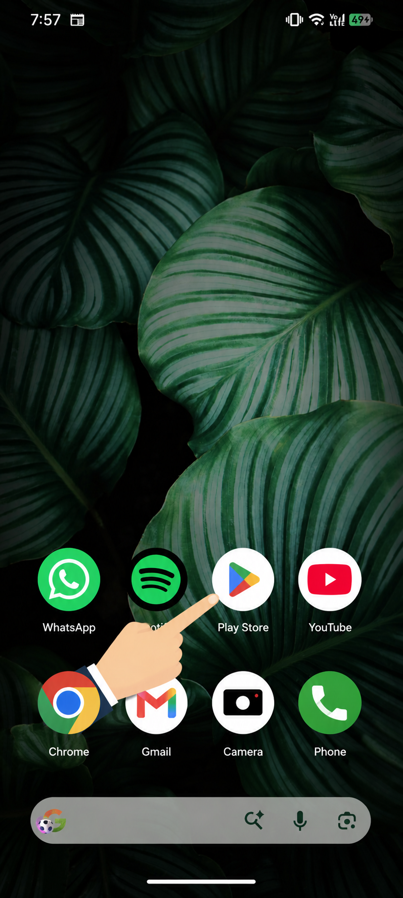
ਜੇ ਇਹ ਨਾ ਮਿਲੇ, ਤਾਂ ਸਕਰੀਨ ਦੇ ਹੇਠੋਂ ਉੱਪਰ ਵੱਲ ਸਵਾਈਪ ਕਰੋ ਤਾਂ ਜੋ ਤੁਹਾਡੇ ਸਾਰੇ ਐਪ ਦਿਸਣ, ਫਿਰ "Play Store" ਲੱਭੋ।
ਕਦਮ 2 — ChatGPT ਖੋਜੋ
ਜਦੋਂ Play Store ਖੁੱਲ੍ਹੇ, ਤਾਂ ਉੱਪਰ ਤੁਹਾਨੂੰ ਇੱਕ ਸਰਚ ਬਾਰ (search bar) ਦਿਸੇਗਾ। ਉਸ ਵਿੱਚ ਆਮ ਤੌਰ 'ਤੇ ਲਿਖਿਆ ਹੁੰਦਾ ਹੈ "Search for apps & games." ਜਾਂ ਤੁਹਾਨੂੰ ਹੇਠਾਂ ਵਿਚਕਾਰ ਇੱਕ ਸਰਚ ਆਈਕਨ ਦਿਸੇਗਾ ਜੋ ਵੱਡਦਰਸ਼ੀ ਸ਼ੀਸ਼ੇ (magnifying glass) 🔍 ਵਰਗਾ ਦਿਸਦਾ ਹੈ।
ਉਸ ਸਰਚ ਬਾਰ ਜਾਂ ਆਈਕਨ ਉੱਤੇ ਟੈਪ ਕਰੋ। ਹੇਠੋਂ ਇੱਕ ਕੀਬੋਰਡ ਉੱਪਰ ਆ ਜਾਏਗਾ।
ਇਹ ਸ਼ਬਦ ਟਾਈਪ ਕਰੋ: chatgpt
(ਇਸ ਨੂੰ ਹੌਲੀ-ਹੌਲੀ, ਅੱਖਰ-ਦਰ-ਅੱਖਰ ਟਾਈਪ ਕਰੋ: c-h-a-t-g-p-t. ਵੱਡੇ-ਛੋਟੇ ਅੱਖਰਾਂ ਦੀ ਚਿੰਤਾ ਨਾ ਕਰੋ।)
ਆਪਣੇ ਕੀਬੋਰਡ ਉੱਤੇ ਸਰਚ ਬਟਨ (ਵੱਡਦਰਸ਼ੀ ਸ਼ੀਸ਼ਾ 🔍 ਵਰਗਾ) ਟੈਪ ਕਰੋ।
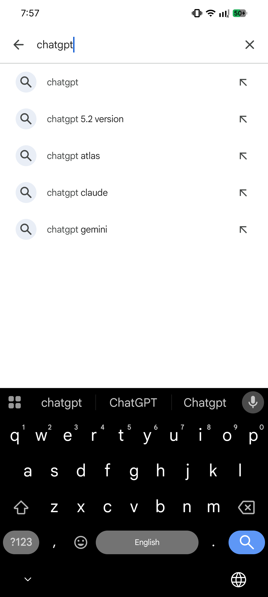
ਕਦਮ 3 — ਸਹੀ ਐਪ ਪਛਾਣੋ
ਇਹ ਇੱਕ ਜ਼ਰੂਰੀ ਕਦਮ ਹੈ। ਕਈ ਐਪ ਦਿਸ ਸਕਦੇ ਹਨ, ਅਤੇ ਕੁਝ ਨਕਲੀ ਜਾਂ ਨਕਲ ਹੋ ਸਕਦੇ ਹਨ। ਸਾਨੂੰ ਅਸਲੀ, ਅਧਿਕਾਰਤ ਐਪ ਚਾਹੀਦਾ ਹੈ।
ਅਜਿਹਾ ਐਪ ਲੱਭੋ ਜਿਸ ਵਿੱਚ ਲਿਖਿਆ ਹੋਵੇ:
- ਨਾਮ: ChatGPT
- ਬਣਾਉਣ ਵਾਲਾ (Developer): OpenAI
ਬਣਾਉਣ ਵਾਲੇ ਦਾ ਨਾਮ "OpenAI" ਐਪ ਦੇ ਨਾਮ ਦੇ ਠੀਕ ਹੇਠਾਂ ਛੋਟੇ ਸਲੇਟੀ ਅੱਖਰਾਂ ਵਿੱਚ ਲਿਖਿਆ ਹੁੰਦਾ ਹੈ। ਇਸੇ ਤੋਂ ਤੁਸੀਂ ਪਛਾਣੋਗੇ ਕਿ ਇਹ ਅਸਲੀ ਹੈ। ਕਰੋੜਾਂ ਲੋਕ ਪਹਿਲਾਂ ਹੀ ਇਸ ਨੂੰ ਡਾਊਨਲੋਡ ਕਰ ਚੁੱਕੇ ਹਨ, ਇਸ ਲਈ ਇਹ ਸਭ ਤੋਂ ਉੱਪਰ ਦੇ ਨਤੀਜਿਆਂ ਵਿੱਚ ਹੋਵੇਗਾ।
ਇਸ ਦਾ ਆਈਕਨ ਵਿਚਕਾਰ ਗੰਢ ਜਿਹੇ ਫੁੱਲ ਦੇ ਡਿਜ਼ਾਈਨ ਵਾਲਾ ਕਾਲਾ ਜਾਂ ਚਿੱਟਾ ਗੋਲਾ ਹੁੰਦਾ ਹੈ।
ਸਾਵਧਾਨ ਰਹੋ: "Chat GBT," "ChatGPT AI Pro," ਜਾਂ ਅਜਿਹੇ ਕਿਸੇ ਵੀ ਐਪ ਨੂੰ ਡਾਊਨਲੋਡ ਨਾ ਕਰੋ ਜਿਸ ਨੂੰ "OpenAI" ਨੇ ਨਹੀਂ ਬਣਾਇਆ। ਉਹ ਨਕਲੀ ਹੋ ਸਕਦੇ ਹਨ ਜੋ ਬਹੁਤ ਸਾਰੇ ਇਸ਼ਤਿਹਾਰ ਦਿਖਾਉਂਦੇ ਹਨ ਜਾਂ ਪੈਸੇ ਮੰਗਦੇ ਹਨ। ਹਮੇਸ਼ਾ ਜਾਂਚ ਲਵੋ ਕਿ ਬਣਾਉਣ ਵਾਲਾ OpenAI ਹੈ।
ਕਦਮ 4 — ਡਾਊਨਲੋਡ ਅਤੇ ਇੰਸਟਾਲ ਕਰੋ
- ਅਸਲੀ ChatGPT ਐਪ ਉੱਤੇ ਟੈਪ ਕਰ ਕੇ ਉਸ ਦਾ ਪੰਨਾ ਖੋਲ੍ਹੋ।
- ਤੁਹਾਨੂੰ ਇੱਕ ਹਰਾ "Install" ਬਟਨ ਦਿਸੇਗਾ। ਉਸ ਨੂੰ ਇੱਕ ਵਾਰ ਟੈਪ ਕਰੋ।
- ਐਪ ਡਾਊਨਲੋਡ ਹੋਣਾ ਸ਼ੁਰੂ ਹੋ ਜਾਏਗਾ। ਤੁਹਾਨੂੰ ਇੱਕ ਛੋਟਾ ਗੋਲਾ ਭਰਦਾ ਹੋਇਆ ਦਿਸੇਗਾ, ਜੋ ਤਰੱਕੀ ਦੱਸਦਾ ਹੈ। ਤੁਹਾਡੇ ਇੰਟਰਨੈੱਟ ਦੀ ਰਫ਼ਤਾਰ ਦੇ ਹਿਸਾਬ ਨਾਲ ਇਸ ਵਿੱਚ ਕੁਝ ਸਕਿੰਟ ਤੋਂ ਇੱਕ ਮਿੰਟ ਤੱਕ ਲੱਗਦਾ ਹੈ।
- ਜਦੋਂ ਹੋ ਜਾਏ, ਤਾਂ "Install" ਬਟਨ ਬਦਲ ਕੇ "Open" ਬਟਨ ਹੋ ਜਾਏਗਾ।
ਟਿਪ: ਜੇ ਤੁਹਾਡੇ ਕੋਲ Wi-Fi ਹੈ ਤਾਂ ਉਸ ਦਾ ਇਸਤੇਮਾਲ ਕਰੋ, ਤਾਂ ਜੋ ਤੁਹਾਡਾ ਮੋਬਾਈਲ ਡਾਟਾ ਖ਼ਰਚ ਨਾ ਹੋਵੇ। ਪਰ ਇਹ ਇੱਕ ਛੋਟਾ ਐਪ ਹੈ, ਇਸ ਲਈ ਮੋਬਾਈਲ ਡਾਟਾ ਵੀ ਠੀਕ ਹੈ।
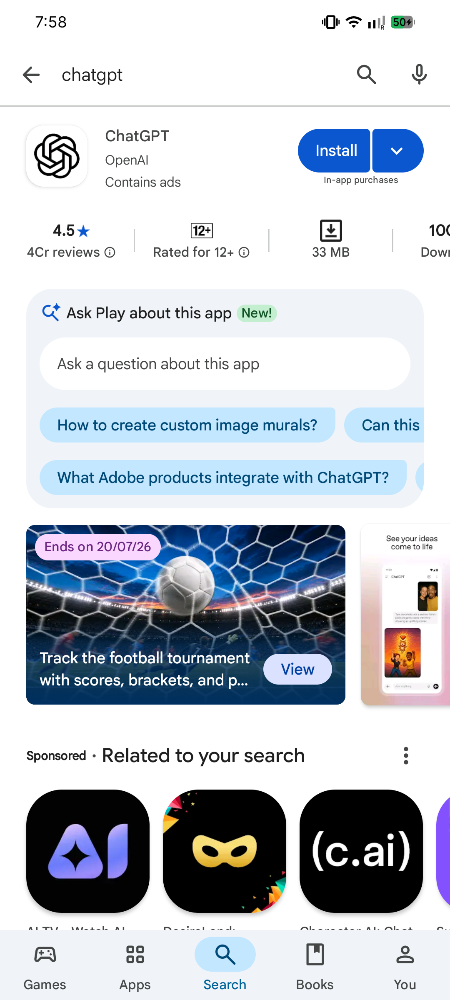
ਕਦਮ 5 — ਐਪ ਖੋਲ੍ਹੋ
"Open" ਬਟਨ ਟੈਪ ਕਰੋ। (ਅਗਲੀ ਵਾਰ ਤੋਂ, ਤੁਸੀਂ ਸਿੱਧੇ ChatGPT ਆਈਕਨ ਟੈਪ ਕਰ ਕੇ ਵੀ ਇਸ ਨੂੰ ਖੋਲ੍ਹ ਸਕਦੇ ਹੋ, ਜੋ ਹੁਣ ਤੁਹਾਡੇ ਫ਼ੋਨ ਦੀ ਹੋਮ ਸਕਰੀਨ ਉੱਤੇ ਹੈ।)
ਪਹਿਲੀ ਵਾਰ ਖੁੱਲ੍ਹਣ 'ਤੇ ਤੁਹਾਨੂੰ ਇੱਕ ਸੁਆਗਤੀ ਸਕਰੀਨ ਦਿਸੇਗੀ। ਹੁਣ ਅਸੀਂ ਤੁਹਾਡਾ ਅਕਾਊਂਟ ਬਣਾਵਾਂਗੇ।
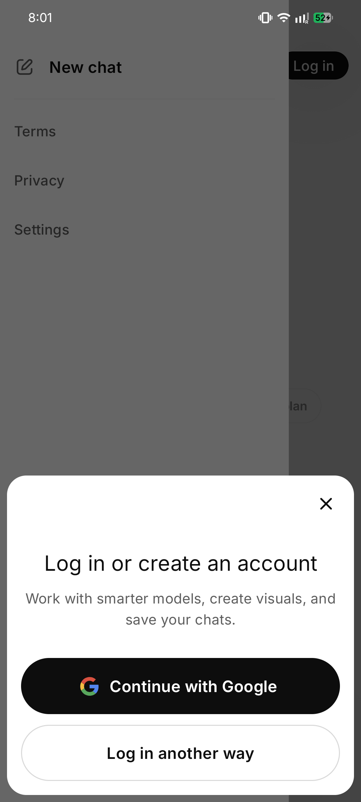
ਕਦਮ 6 — ਆਪਣਾ ਅਕਾਊਂਟ ਬਣਾਓ
ChatGPT ਵਰਤਣ ਲਈ ਤੁਹਾਨੂੰ ਇੱਕ ਮੁਫ਼ਤ ਅਕਾਊਂਟ ਚਾਹੀਦਾ ਹੈ। ਇਹ ਲਾਇਬ੍ਰੇਰੀ ਕਾਰਡ ਬਣਵਾਉਣ ਵਰਗਾ ਹੈ — ਇਹ ਯਾਦ ਰੱਖਦਾ ਹੈ ਕਿ ਤੁਸੀਂ ਕੌਣ ਹੋ ਤਾਂ ਜੋ ਤੁਹਾਡੀ ਗੱਲਬਾਤ ਤੁਹਾਡੇ ਲਈ ਸੁਰੱਖਿਅਤ ਰਹੇ। ਇਸ ਨੂੰ ਬਣਾਉਣ ਵਿੱਚ ਦੋ ਮਿੰਟ ਲੱਗਦੇ ਹਨ।
ਸੁਆਗਤੀ ਸਕਰੀਨ ਉੱਤੇ ਤੁਹਾਨੂੰ ਕੁਝ ਬਟਨ ਦਿਸਣਗੇ। ਆਓ ਤੁਹਾਡੇ ਵਿਕਲਪ ਵੇਖੀਏ:
- "Continue with Google" — ਜੇ ਤੁਹਾਡੇ ਕੋਲ ਪਹਿਲਾਂ ਤੋਂ Gmail ਅਕਾਊਂਟ ਹੈ ਤਾਂ ਸਭ ਤੋਂ ਸੌਖਾ ਤਰੀਕਾ।
- "Continue with Apple" — ਸਿਰਫ਼ iPhone ਉੱਤੇ (Android ਉੱਤੇ ਇਸ ਨੂੰ ਛੱਡ ਦਿਓ)।
- "Sign up" — ਕਿਸੇ ਵੀ ਈਮੇਲ ਪਤੇ ਤੋਂ ਨਵਾਂ ਅਕਾਊਂਟ ਬਣਾਉਣ ਲਈ।
ਹੇਠਾਂ ਅਸੀਂ ਦੋ ਸਭ ਤੋਂ ਸੌਖੇ ਤਰੀਕੇ ਸਮਝਾਵਾਂਗੇ। ਜੋ ਤੁਹਾਨੂੰ ਠੀਕ ਲੱਗੇ, ਉਹ ਚੁਣੋ।
ਸੌਖਾ ਤਰੀਕਾ — Google ਨਾਲ Sign up ਕਰੋ (ਸੁਝਾਇਆ ਗਿਆ)
ਜੇ ਤੁਸੀਂ ਪਹਿਲਾਂ ਤੋਂ Gmail ਵਰਤਦੇ ਹੋ (ਜ਼ਿਆਦਾਤਰ Android ਫ਼ੋਨ ਵਿੱਚ ਪਹਿਲਾਂ ਤੋਂ Google ਅਕਾਊਂਟ ਸੈੱਟ ਹੁੰਦਾ ਹੈ), ਤਾਂ ਇਹ ਸਭ ਤੋਂ ਸੌਖਾ ਤਰੀਕਾ ਹੈ। ਕੋਈ ਨਵਾਂ ਪਾਸਵਰਡ ਯਾਦ ਰੱਖਣ ਦੀ ਲੋੜ ਨਹੀਂ!
- "Continue with Google" ਟੈਪ ਕਰੋ।
- ਤੁਹਾਡੇ ਫ਼ੋਨ ਉੱਤੇ ਮੌਜੂਦ Google ਅਕਾਊਂਟ ਦੀ ਸੂਚੀ ਦਿਸੇਗੀ। ਜਿਸ ਨੂੰ ਵਰਤਣਾ ਹੈ ਉਸ ਉੱਤੇ ਟੈਪ ਕਰੋ (ਇਸ ਵਿੱਚ ਤੁਹਾਡਾ ਈਮੇਲ ਪਤਾ ਦਿਸੇਗਾ, ਜੋ @gmail.com ਉੱਤੇ ਖ਼ਤਮ ਹੁੰਦਾ ਹੈ)।
- ਇਹ ਪੁੱਛ ਸਕਦਾ ਹੈ "ChatGPT wants to use Google to sign in" — "Continue" ਜਾਂ "Allow" ਟੈਪ ਕਰੋ।
- ਬਸ! ਤੁਹਾਡਾ ਅਕਾਊਂਟ ਬਣ ਗਿਆ। ਨਾ ਕੋਈ ਪਾਸਵਰਡ, ਨਾ ਕੋਈ ਈਮੇਲ ਵੈਰੀਫ਼ਾਈ ਕਰਨਾ।
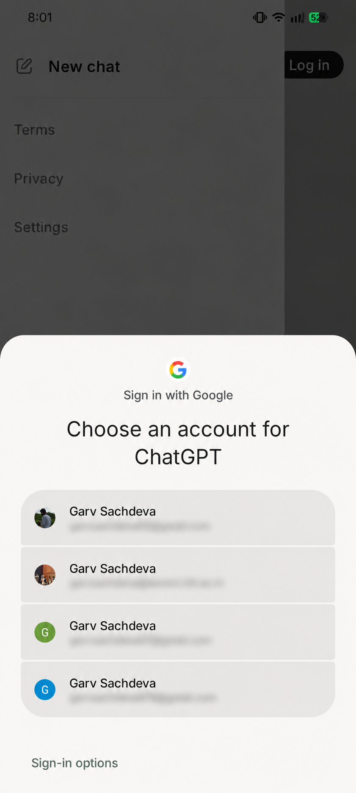
ਦੂਜਾ ਤਰੀਕਾ — ਈਮੇਲ ਨਾਲ Sign up ਕਰੋ
ਜੇ ਤੁਸੀਂ ਕੋਈ ਦੂਜਾ ਈਮੇਲ ਵਰਤਣਾ ਚਾਹੁੰਦੇ ਹੋ, ਜਾਂ ਤੁਹਾਡੇ ਕੋਲ Gmail ਨਹੀਂ ਹੈ, ਤਾਂ ਇਹ ਕਦਮ ਅਪਣਾਓ:
- "Sign up" ਟੈਪ ਕਰੋ।
- ਆਪਣਾ ਈਮੇਲ ਪਤਾ ਧਿਆਨ ਨਾਲ ਟਾਈਪ ਕਰੋ (ਉਦਾਹਰਣ: ramesh.kumar@gmail.com)। ਦੁਬਾਰਾ ਜਾਂਚ ਲਵੋ ਕਿ ਕੋਈ ਸਪੈਲਿੰਗ ਦੀ ਗ਼ਲਤੀ ਨਾ ਹੋਵੇ।
- "Continue" ਟੈਪ ਕਰੋ।
- ਹੁਣ ਇੱਕ ਪਾਸਵਰਡ ਬਣਾਓ। ਇਹ ਇੱਕ ਗੁਪਤ ਸ਼ਬਦ ਹੈ ਜੋ ਸਿਰਫ਼ ਤੁਸੀਂ ਜਾਣਦੇ ਹੋ। ਆਮ ਤੌਰ 'ਤੇ ਇਹ ਘੱਟੋ-ਘੱਟ 8 ਅੱਖਰ/ਅੰਕ ਦਾ ਹੋਣਾ ਚਾਹੀਦਾ ਹੈ।
- ਅਜਿਹਾ ਬਣਾਓ ਜੋ ਤੁਹਾਨੂੰ ਯਾਦ ਰਹੇ ਪਰ ਦੂਜੇ ਅੰਦਾਜ਼ਾ ਨਾ ਲਗਾ ਸਕਣ। "12345678" ਜਾਂ "password" ਇਸਤੇਮਾਲ ਨਾ ਕਰੋ।
- ਇੱਕ ਵਧੀਆ ਤਰਕੀਬ: ਕੋਈ ਸ਼ਬਦ ਅਤੇ ਕੁਝ ਅੰਕ ਮਿਲਾਓ ਜਿਨ੍ਹਾਂ ਦਾ ਮਤਲਬ ਸਿਰਫ਼ ਤੁਸੀਂ ਜਾਣਦੇ ਹੋਵੋ, ਜਿਵੇਂ ਕਿਸੇ ਪਾਲਤੂ ਜਾਨਵਰ ਦਾ ਨਾਮ ਅਤੇ ਕੋਈ ਸਾਲ।
- ਆਪਣਾ ਪਾਸਵਰਡ ਕਿਤੇ ਸੁਰੱਖਿਅਤ ਜਗ੍ਹਾ ਲਿਖ ਲਵੋ (ਇੱਕ ਡਾਇਰੀ ਵਿੱਚ), ਕਿਉਂਕਿ ਅਗਲੀ ਵਾਰ ਲੌਗ ਇਨ ਕਰਦੇ ਸਮੇਂ ਤੁਹਾਨੂੰ ਇਸ ਦੀ ਲੋੜ ਪਏਗੀ।
- "Continue" ਟੈਪ ਕਰੋ।
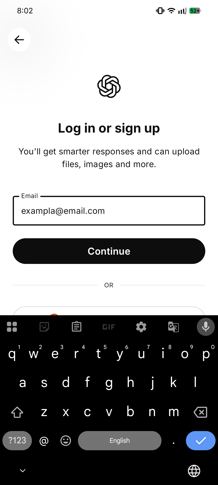
ਕਦਮ 7 — ਆਪਣਾ ਈਮੇਲ ਵੈਰੀਫ਼ਾਈ ਕਰੋ
ਜੇ ਤੁਸੀਂ ਈਮੇਲ ਨਾਲ sign up ਕੀਤਾ ਹੈ, ਤਾਂ ChatGPT ਨੂੰ ਪੱਕਾ ਕਰਨਾ ਹੁੰਦਾ ਹੈ ਕਿ ਈਮੇਲ ਸੱਚਮੁੱਚ ਤੁਹਾਡਾ ਹੈ। ਇਸ ਨੂੰ "ਵੈਰੀਫ਼ਾਈ ਕਰਨਾ" ਕਹਿੰਦੇ ਹਨ।
- ChatGPT ਕਹੇਗਾ: "We sent a code/link to your email."
- ChatGPT ਨੂੰ ਖੁੱਲ੍ਹਾ ਰਹਿਣ ਦਿਓ। ਉਸੇ ਫ਼ੋਨ ਉੱਤੇ ਆਪਣਾ ਈਮੇਲ ਐਪ (ਜਿਵੇਂ Gmail) ਖੋਲ੍ਹੋ।
- "OpenAI" ਵੱਲੋਂ ਆਇਆ ਇੱਕ ਨਵਾਂ ਈਮੇਲ ਲੱਭੋ। (ਜੇ ਇੱਕ ਮਿੰਟ ਵਿੱਚ ਨਾ ਦਿਸੇ, ਤਾਂ "Spam" ਜਾਂ "Promotions" ਫ਼ੋਲਡਰ ਵੇਖੋ।)
- ਉਹ ਈਮੇਲ ਖੋਲ੍ਹੋ। ਉਸ ਵਿੱਚ ਜਾਂ ਤਾਂ ਹੋਵੇਗਾ:
- ਇੱਕ ਬਟਨ ਜਾਂ ਲਿੰਕ ਜਿਸ ਉੱਤੇ ਲਿਖਿਆ ਹੋਵੇਗਾ "Verify email address" — ਬਸ ਉਸ ਨੂੰ ਟੈਪ ਕਰੋ, ਜਾਂ
- ਇੱਕ 6 ਅੰਕਾਂ ਦਾ ਕੋਡ (ਜਿਵੇਂ 4 8 2 9 1 7) — ਉਸ ਨੂੰ ਨੋਟ ਕਰੋ, ChatGPT ਉੱਤੇ ਵਾਪਸ ਜਾਓ, ਅਤੇ ਟਾਈਪ ਕਰੋ।
- ਹੋ ਜਾਣ 'ਤੇ, ਤੁਹਾਡਾ ਈਮੇਲ ਵੈਰੀਫ਼ਾਈ ਹੋ ਗਿਆ।
ਕਦਮ 8 — ChatGPT ਨੂੰ ਆਪਣੇ ਬਾਰੇ ਥੋੜ੍ਹਾ ਦੱਸੋ
ਤੁਹਾਡਾ ਅਕਾਊਂਟ ਬਣ ਜਾਣ ਤੋਂ ਬਾਅਦ, ਇਹ ਪੁੱਛ ਸਕਦਾ ਹੈ:
- ਤੁਹਾਡਾ ਨਾਮ (ਤੁਸੀਂ ਆਪਣਾ ਪਹਿਲਾ ਨਾਮ ਦੇ ਸਕਦੇ ਹੋ, ਜਿਵੇਂ "ਰਮੇਸ਼" ਜਾਂ "ਸੁਨੀਤਾ")।
- ਤੁਹਾਡਾ ਜਨਮਦਿਨ / ਜਨਮ ਤਾਰੀਖ਼ (ਇਹ ਪੱਕਾ ਕਰਨ ਲਈ ਕਿ ਤੁਹਾਡੀ ਉਮਰ ਕਾਫ਼ੀ ਹੈ; ਆਮ ਤੌਰ 'ਤੇ 13 ਸਾਲ ਜਾਂ ਉਸ ਤੋਂ ਵੱਧ, ਅਕਸਰ 18)।
ਇਹ ਭਰੋ ਅਤੇ "Continue" ਟੈਪ ਕਰੋ। ਇਹ ਸੌਖੇ, ਆਮ ਸਵਾਲ ਹਨ — ਚਿੰਤਾ ਦੀ ਕੋਈ ਗੱਲ ਨਹੀਂ।
ਕਦਮ 9 — ਇਜਾਜ਼ਤਾਂ ਦਿਓ ਜਾਂ ਛੱਡ ਦਿਓ
ਐਪ ਨੋਟੀਫ਼ਿਕੇਸ਼ਨ (ਛੋਟੇ ਸੁਨੇਹੇ) ਭੇਜਣ ਦੀ ਇਜਾਜ਼ਤ ਮੰਗ ਸਕਦਾ ਹੈ। ਤੁਸੀਂ "Allow" ਜਾਂ "Don't allow" ਟੈਪ ਕਰ ਸਕਦੇ ਹੋ — ਦੋਵੇਂ ਠੀਕ ਹਨ। ਇਸ ਨਾਲ ਤੁਹਾਡੇ ਇਸਤੇਮਾਲ ਉੱਤੇ ਕੋਈ ਫ਼ਰਕ ਨਹੀਂ ਪੈਂਦਾ।
ਕਦਮ 10 — ਤੁਸੀਂ ਅੰਦਰ ਆ ਗਏ! ਤੁਹਾਡੀ ਪਹਿਲੀ ਸਕਰੀਨ
ਵਧਾਈਆਂ! 🎉 ਹੁਣ ਤੁਹਾਨੂੰ ChatGPT ਦੀ ਮੁੱਖ ਸਕਰੀਨ ਦਿਸੇਗੀ। ਆਓ ਇਸ ਨੂੰ ਸਮਝੀਏ:
- ਵਿਚਕਾਰ/ਉੱਪਰ ਤੁਹਾਨੂੰ "ChatGPT" ਅਤੇ ਕੁਝ ਉਦਾਹਰਣ ਸਵਾਲ ਦਿਸ ਸਕਦੇ ਹਨ।
- ਹੇਠਾਂ ਇੱਕ ਲੰਮਾ ਖ਼ਾਨਾ ਹੈ ਜਿਸ ਵਿੱਚ ਲਿਖਿਆ ਹੈ "Message" ਜਾਂ "Ask anything." ਇੱਥੇ ਹੀ ਤੁਸੀਂ ਆਪਣੇ ਸਵਾਲ ਟਾਈਪ ਕਰਦੇ ਹੋ।
- ਉਸ ਖ਼ਾਨੇ ਦੇ ਸੱਜੇ ਪਾਸੇ ਇੱਕ ਤੀਰ ਜਾਂ ਮਾਈਕ੍ਰੋਫ਼ੋਨ ਹੈ — ਤੀਰ ਤੁਹਾਡਾ ਸੁਨੇਹਾ ਭੇਜਦਾ ਹੈ; ਮਾਈਕ੍ਰੋਫ਼ੋਨ ਨਾਲ ਤੁਸੀਂ ਟਾਈਪ ਕਰਨ ਦੀ ਥਾਂ ਬੋਲ ਸਕਦੇ ਹੋ।
- ਉੱਪਰ ਖੱਬੇ ਕੋਨੇ ਵਿੱਚ ਆਮ ਤੌਰ 'ਤੇ ਤਿੰਨ ਲਾਈਨਾਂ (☰) ਜਾਂ ਇੱਕ ਛੋਟਾ ਆਈਕਨ ਹੁੰਦਾ ਹੈ। ਉਸ ਨੂੰ ਟੈਪ ਕਰਨ 'ਤੇ ਤੁਹਾਡੀ ਪੁਰਾਣੀ ਗੱਲਬਾਤ ਦਿਸਦੀ ਹੈ — ਤੁਹਾਡੇ ਪੁੱਛੇ ਹਰ ਸਵਾਲ ਦਾ ਇਤਿਹਾਸ।
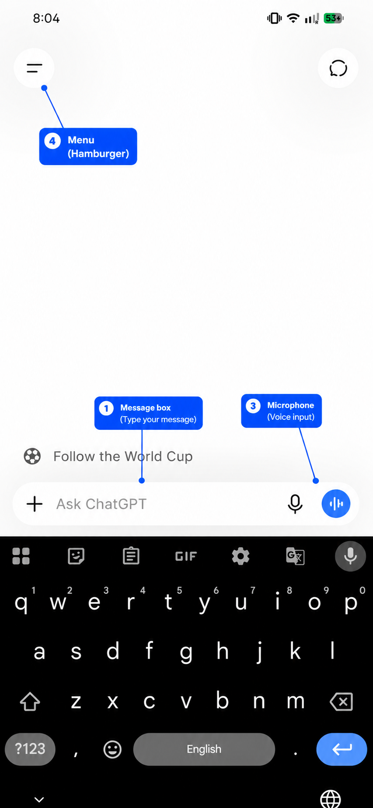
ਕਦਮ 11 — ਆਪਣਾ ਪਹਿਲਾ ਸਤ ਸ੍ਰੀ ਅਕਾਲ ਕਹੋ
ਆਓ ਇਸ ਨੂੰ ਅਜ਼ਮਾਈਏ! ਹੇਠਾਂ ਸੁਨੇਹੇ ਦੇ ਖ਼ਾਨੇ ਉੱਤੇ ਟੈਪ ਕਰੋ ਅਤੇ ਟਾਈਪ ਕਰੋ:
ਸਤ ਸ੍ਰੀ ਅਕਾਲ! ਕੀ ਤੁਸੀਂ ਮੇਰੀ ਸੌਖੀ ਭਾਸ਼ਾ ਵਿੱਚ ਮਦਦ ਕਰ ਸਕਦੇ ਹੋ?
ਫਿਰ ਭੇਜਣ ਵਾਲਾ ਤੀਰ ਟੈਪ ਕਰੋ। ਕੁਝ ਹੀ ਸਕਿੰਟਾਂ ਵਿੱਚ ChatGPT ਨਿੱਘ ਨਾਲ ਜਵਾਬ ਦੇਵੇਗਾ।
ਤੁਸੀਂ ਕਰ ਵਿਖਾਇਆ! ਹੁਣ ਤੁਹਾਡੇ ਫ਼ੋਨ ਉੱਤੇ ChatGPT ਚੱਲ ਰਿਹਾ ਹੈ। ਹੁਣ ਅੱਗੇ ਸਭ ਕੁਝ ਬਸ ਸਵਾਲ ਪੁੱਛਣਾ ਹੈ — ਜੋ ਅਸੀਂ ਭਾਗ 7 ਵਿੱਚ ਠੀਕ ਤਰ੍ਹਾਂ ਸਿੱਖਾਂਗੇ।
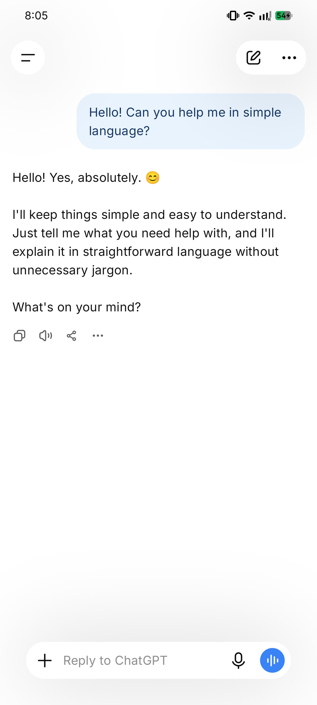
ਭਾਗ 3 — iPhone (iOS) ਉੱਤੇ ਸ਼ੁਰੂਆਤ ਕਿਵੇਂ ਕਰੀਏ
(ਜੇ ਤੁਹਾਡੇ ਕੋਲ Android ਫ਼ੋਨ ਹੈ, ਤਾਂ ਤੁਹਾਡਾ ਕੰਮ ਭਾਗ 2 ਵਿੱਚ ਹੋ ਚੁੱਕਾ ਹੈ। ਤੁਸੀਂ ਸਿੱਧੇ ਭਾਗ 4 ਉੱਤੇ ਜਾ ਸਕਦੇ ਹੋ।)
ਜੇ ਤੁਹਾਡਾ ਫ਼ੋਨ iPhone ਹੈ (Apple ਦਾ ਬਣਾਇਆ ਹੋਇਆ), ਤਾਂ ਕਦਮ ਲਗਭਗ Android ਵਰਗੇ ਹੀ ਹਨ — ਬਸ ਉਹ "ਦੁਕਾਨ" ਵੱਖਰੀ ਹੈ ਜਿੱਥੋਂ ਅਸੀਂ ਡਾਊਨਲੋਡ ਕਰਦੇ ਹਾਂ। iPhone ਉੱਤੇ ਐਪ ਦੀ ਦੁਕਾਨ ਨੂੰ App Store ਕਹਿੰਦੇ ਹਨ (Play Store ਨਹੀਂ)।
ਕਦਮ 1 — App Store ਖੋਲ੍ਹੋ
- ਇੱਕ ਨੀਲਾ ਆਈਕਨ ਲੱਭੋ ਜਿਸ ਵਿੱਚ ਡਰਾਇੰਗ ਦੇ ਔਜ਼ਾਰਾਂ (ਜਿਵੇਂ ਪੈਨਸਿਲ ਅਤੇ ਰੂਲਰ) ਤੋਂ ਬਣਿਆ ਚਿੱਟਾ ਅੱਖਰ "A" ਹੋਵੇ।
- ਇਸ ਦੇ ਹੇਠਾਂ ਲਿਖਿਆ ਹੁੰਦਾ ਹੈ "App Store."
- ਇਸ ਉੱਤੇ ਟੈਪ ਕਰੋ।
ਕਦਮ 2 — ChatGPT ਖੋਜੋ
- App Store ਦੇ ਹੇਠਾਂ ਸੱਜੇ ਪਾਸੇ, "Search" ਬਟਨ (ਵੱਡਦਰਸ਼ੀ ਸ਼ੀਸ਼ਾ 🔍) ਟੈਪ ਕਰੋ।
- ਉੱਪਰ ਸਰਚ ਬਾਰ ਉੱਤੇ ਟੈਪ ਕਰੋ ਅਤੇ ਟਾਈਪ ਕਰੋ: chatgpt
- ਕੀਬੋਰਡ ਉੱਤੇ ਨੀਲਾ "Search" ਬਟਨ ਟੈਪ ਕਰੋ।
ਕਦਮ 3 — ਅਧਿਕਾਰਤ ਐਪ ਪਛਾਣੋ
ਠੀਕ Android ਵਾਂਗ, ਪੱਕਾ ਕਰੋ ਕਿ ਤੁਸੀਂ ਅਸਲੀ ਐਪ ਚੁਣੋ:
- ਨਾਮ: ChatGPT
- ਬਣਾਉਣ ਵਾਲਾ: OpenAI
ਜਾਂਚ ਲਵੋ ਕਿ ਬਣਾਉਣ ਵਾਲੇ ਵਿੱਚ "OpenAI" ਲਿਖਿਆ ਹੋਵੇ। ਥੋੜ੍ਹੇ ਵੱਖਰੇ ਨਾਮ ਵਾਲੀਆਂ ਨਕਲਾਂ ਤੋਂ ਬਚੋ।
ਕਦਮ 4 — ਐਪ ਡਾਊਨਲੋਡ (Get) ਕਰੋ
- ਐਪ ਦੇ ਨਾਲ "GET" ਬਟਨ ਟੈਪ ਕਰੋ (iPhone ਉੱਤੇ ਡਾਊਨਲੋਡ ਬਟਨ ਵਿੱਚ "Install" ਦੀ ਥਾਂ "GET" ਲਿਖਿਆ ਹੁੰਦਾ ਹੈ)।
- ਤੁਹਾਡਾ iPhone ਪੁਸ਼ਟੀ ਲਈ ਇਹ ਮੰਗ ਸਕਦਾ ਹੈ:
- Face ID (ਆਪਣੇ ਫ਼ੋਨ ਵੱਲ ਵੇਖੋ), ਜਾਂ
- Touch ID (ਆਪਣੀ ਉਂਗਲ ਬਟਨ ਉੱਤੇ ਰੱਖੋ), ਜਾਂ
- ਤੁਹਾਡਾ Apple ID ਪਾਸਵਰਡ।
- ਐਪ ਡਾਊਨਲੋਡ ਹੋਵੇਗਾ। ਪੂਰਾ ਹੋਣ 'ਤੇ ਬਟਨ ਬਦਲ ਕੇ "OPEN" ਹੋ ਜਾਂਦਾ ਹੈ।
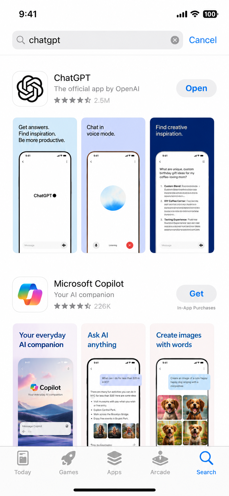
ਕਦਮ 5 — ਖੋਲ੍ਹੋ ਅਤੇ ਆਪਣਾ ਅਕਾਊਂਟ ਬਣਾਓ
- "OPEN" ਟੈਪ ਕਰੋ (ਜਾਂ ਹੋਮ ਸਕਰੀਨ ਉੱਤੇ ਨਵਾਂ ChatGPT ਆਈਕਨ ਟੈਪ ਕਰੋ)।
- ਸੁਆਗਤੀ ਸਕਰੀਨ ਉੱਤੇ ਤੁਹਾਡੇ ਕੋਲ ਤਿੰਨ ਸੌਖੇ ਵਿਕਲਪ ਹਨ:
- "Continue with Apple" — ਤੁਹਾਡੀ ਮੌਜੂਦਾ Apple ID ਵਰਤਦਾ ਹੈ। iPhone ਉੱਤੇ ਬਹੁਤ ਸੌਖਾ।
- "Continue with Google" — ਜੇ ਤੁਹਾਡੇ ਕੋਲ Gmail ਅਕਾਊਂਟ ਹੈ।
- "Sign up" — ਕਿਸੇ ਵੀ ਈਮੇਲ ਪਤੇ ਤੋਂ।
ਇਸ ਤੋਂ ਬਾਅਦ ਦੇ ਕਦਮ ਬਿਲਕੁਲ Android ਵਰਗੇ ਹੀ ਹਨ (ਭਾਗ 2, ਕਦਮ 6 ਤੋਂ 8 ਵੇਖੋ): sign-in ਦਾ ਤਰੀਕਾ ਚੁਣੋ, ਲੋੜ ਹੋਵੇ ਤਾਂ ਈਮੇਲ ਵੈਰੀਫ਼ਾਈ ਕਰੋ, ਅਤੇ ਆਪਣਾ ਨਾਮ ਅਤੇ ਜਨਮਦਿਨ ਭਰੋ।
iPhone ਦੀ ਖ਼ਾਸ ਗੱਲ: "Continue with Apple" ਤੁਹਾਡੀ ਨਿੱਜਤਾ ਲਈ ਤੁਹਾਡਾ ਅਸਲੀ ਈਮੇਲ ਛੁਪਾ ਸਕਦਾ ਹੈ। ਇਹ ਸੁਰੱਖਿਅਤ ਹੈ ਅਤੇ ਇਸਤੇਮਾਲ ਕਰਨਾ ਠੀਕ ਹੈ।
ਕਦਮ 6 — ਮੁੱਖ ਸਕਰੀਨ (Android ਵਰਗੀ ਹੀ)
ਅੰਦਰ ਆ ਜਾਣ 'ਤੇ, ChatGPT ਦੀ ਸਕਰੀਨ Android ਵਰਗੀ ਹੀ ਦਿਸਦੀ ਹੈ:
- ਸਵਾਲ ਟਾਈਪ ਕਰਨ ਲਈ ਹੇਠਾਂ ਇੱਕ ਸੁਨੇਹੇ ਦਾ ਖ਼ਾਨਾ।
- ਇੱਕ ਭੇਜਣ ਵਾਲਾ ਤੀਰ ਅਤੇ ਇੱਕ ਮਾਈਕ੍ਰੋਫ਼ੋਨ।
- ਪੁਰਾਣੀ ਗੱਲਬਾਤ ਵੇਖਣ ਲਈ ਉੱਪਰ ਖੱਬੇ ਪਾਸੇ ਇੱਕ ਮੇਨੂ।
ਕੀ Android ਤੋਂ ਕੋਈ ਫ਼ਰਕ ਹੈ?
ਸੱਚ ਕਹੀਏ ਤਾਂ, ਬਹੁਤ ਘੱਟ। ਆਮ ਵਰਤੋਂਕਾਰ ਲਈ, ChatGPT iPhone ਅਤੇ Android ਦੋਵਾਂ ਉੱਤੇ ਇੱਕੋ ਜਿਹਾ ਹੀ ਚੱਲਦਾ ਹੈ। ਸਿਰਫ਼ ਅਸਲੀ ਫ਼ਰਕ ਇਹ ਹਨ:
| ਚੀਜ਼ | Android | iPhone |
|---|---|---|
| ਐਪ ਦੀ ਦੁਕਾਨ ਦਾ ਨਾਮ | Play Store | App Store |
| ਡਾਊਨਲੋਡ ਬਟਨ | "Install" | "GET" |
| ਵਾਧੂ sign-in ਵਿਕਲਪ | — | "Continue with Apple" |
| ਡਾਊਨਲੋਡ ਦੀ ਪੁਸ਼ਟੀ | (ਆਮ ਤੌਰ 'ਤੇ ਕੁਝ ਨਹੀਂ) | Face ID / Touch ID / ਪਾਸਵਰਡ |
ਬਾਕੀ ਸਭ ਕੁਝ — ਸਵਾਲ ਪੁੱਛਣਾ, ਆਵਾਜ਼ ਨਾਲ ਬੋਲਣਾ, ਗੱਲਬਾਤ ਸਾਂਭਣਾ — ਇੱਕੋ ਜਿਹਾ ਹੈ। ਤਾਂ ਤੁਹਾਡੇ ਕੋਲ ਚਾਹੇ ਕੋਈ ਵੀ ਫ਼ੋਨ ਹੋਵੇ, ਬਾਕੀ ਪੂਰੀ ਗਾਈਡ ਤੁਹਾਡੇ ਉੱਤੇ ਪੂਰੀ ਤਰ੍ਹਾਂ ਲਾਗੂ ਹੁੰਦੀ ਹੈ।
ਭਾਗ 4 — ਸੌਖੇ ਇਸਤੇਮਾਲ ਲਈ ਸੈੱਟਅੱਪ
ਹੁਣ ਜਦੋਂ ChatGPT ਇੰਸਟਾਲ ਹੋ ਗਿਆ ਹੈ, ਆਓ ਇਸ ਨੂੰ ਵਰਤਣਾ ਝਟਪਟ ਅਤੇ ਆਰਾਮਦਾਇਕ ਬਣਾਈਏ — ਤਾਂ ਜੋ ਤੁਸੀਂ ਇਸ ਨੂੰ ਇੱਕ ਟੈਪ ਵਿੱਚ ਖੋਲ੍ਹ ਸਕੋ ਅਤੇ ਆਪਣੀ ਹੀ ਭਾਸ਼ਾ ਵਿੱਚ ਵਰਤ ਸਕੋ।
1. ChatGPT ਨੂੰ ਆਪਣੀ ਹੋਮ ਸਕਰੀਨ ਉੱਤੇ ਰੱਖੋ
ਜਦੋਂ ਤੁਸੀਂ ਕੋਈ ਐਪ ਇੰਸਟਾਲ ਕਰਦੇ ਹੋ, ਤਾਂ ਉਸ ਦਾ ਆਈਕਨ ਆਮ ਤੌਰ 'ਤੇ ਆਪਣੇ ਆਪ ਹੋਮ ਸਕਰੀਨ ਉੱਤੇ ਆ ਜਾਂਦਾ ਹੈ। ਪਰ ਜੇ ਉਹ ਸੌਖਿਆਂ ਨਾ ਮਿਲੇ, ਤਾਂ ਇਸ ਨੂੰ ਹੱਥ ਦੇ ਕੋਲ ਰੱਖਣ ਦਾ ਤਰੀਕਾ ਇਹ ਹੈ।
Android ਉੱਤੇ
- ਸਾਰੇ ਐਪ ਦੀ ਸੂਚੀ (app drawer) ਖੋਲ੍ਹਣ ਲਈ ਸਕਰੀਨ ਦੇ ਹੇਠੋਂ ਉੱਪਰ ਸਵਾਈਪ ਕਰੋ।
- ChatGPT ਆਈਕਨ ਲੱਭੋ।
- ਆਈਕਨ ਨੂੰ ਥੋੜ੍ਹੀ ਦੇਰ ਲਈ ਉਂਗਲ ਨਾਲ ਦਬਾ ਕੇ ਰੱਖੋ।
- ਉਂਗਲ ਚੁੱਕੇ ਬਿਨਾਂ, ਇਸ ਨੂੰ ਹੋਮ ਸਕਰੀਨ ਉੱਤੇ ਕਿਸੇ ਖ਼ਾਲੀ ਜਗ੍ਹਾ ਉੱਤੇ ਖਿੱਚੋ, ਫਿਰ ਛੱਡ ਦਿਓ।
ਹੁਣ ChatGPT ਤੁਹਾਡੀ ਮੁੱਖ ਸਕਰੀਨ ਉੱਤੇ ਹੈ, ਇੱਕ ਟੈਪ ਵਿੱਚ ਤਿਆਰ।
ਬੋਨਸ — ਇੱਕ ਸਰਚ ਵਿਜੇਟ ਜੋੜੋ (Android):
- ਹੋਮ ਸਕਰੀਨ ਦੀ ਕਿਸੇ ਖ਼ਾਲੀ ਜਗ੍ਹਾ ਉੱਤੇ ਦਬਾ ਕੇ ਰੱਖੋ।
- "Widgets" ਟੈਪ ਕਰੋ।
- ਸਕਰੋਲ ਕਰ ਕੇ ChatGPT ਲੱਭੋ।
- ਇਸ ਦੇ ਵਿਜੇਟ ਨੂੰ ਦਬਾ ਕੇ, ਫੜ ਕੇ ਹੋਮ ਸਕਰੀਨ ਉੱਤੇ ਖਿੱਚੋ। ਵਿਜੇਟ ਨਾਲ ਤੁਸੀਂ ਸਿੱਧੇ ਹੋਮ ਸਕਰੀਨ ਤੋਂ ਚੈਟ ਸ਼ੁਰੂ ਕਰ ਸਕਦੇ ਹੋ ਜਾਂ ਬੋਲ ਸਕਦੇ ਹੋ।
iPhone ਉੱਤੇ
ਆਈਕਨ ਆਮ ਤੌਰ 'ਤੇ ਆਪਣੇ ਆਪ ਜੁੜ ਜਾਂਦਾ ਹੈ। ਪੱਕਾ ਕਰਨ ਲਈ:
- ChatGPT ਲੱਭੋ (ਲੋੜ ਹੋਵੇ ਤਾਂ ਹੋਮ ਸਕਰੀਨ ਉੱਤੇ ਹੇਠਾਂ ਸਵਾਈਪ ਕਰੋ ਅਤੇ ਉਸ ਦਾ ਨਾਮ ਸਰਚ ਵਿੱਚ ਟਾਈਪ ਕਰੋ)।
- ਆਈਕਨ ਨੂੰ ਦਬਾ ਕੇ ਰੱਖੋ।
- ਜੇ ਉਹ App Library ਵਿੱਚ ਹੈ ਤਾਂ "Add to Home Screen" ਚੁਣੋ।
ਬੋਨਸ — ਇੱਕ ਵਿਜੇਟ ਜੋੜੋ (iPhone):
- ਹੋਮ ਸਕਰੀਨ ਦੀ ਖ਼ਾਲੀ ਜਗ੍ਹਾ ਉੱਤੇ ਉਦੋਂ ਤੱਕ ਦਬਾ ਕੇ ਰੱਖੋ ਜਦੋਂ ਤੱਕ ਆਈਕਨ ਹਿੱਲਣ ਨਾ ਲੱਗਣ।
- ਉੱਪਰ ਖੱਬੇ ਪਾਸੇ "+" ਟੈਪ ਕਰੋ।
- ChatGPT ਖੋਜੋ, ਇੱਕ ਵਿਜੇਟ ਦਾ ਆਕਾਰ ਚੁਣੋ, ਅਤੇ "Add Widget" ਟੈਪ ਕਰੋ।
2. ਆਪਣੀ ਹੀ ਭਾਸ਼ਾ ਵਿੱਚ ਟਾਈਪ ਕਰੋ ਅਤੇ ਗੱਲ ਕਰੋ
ਇਹ ਇੱਕ ਸ਼ਾਨਦਾਰ ਖ਼ਬਰ ਹੈ: ChatGPT ਭਾਰਤੀ ਭਾਸ਼ਾਵਾਂ ਵਿੱਚ ਸਮਝਦਾ ਅਤੇ ਜਵਾਬ ਦਿੰਦਾ ਹੈ! ਤੁਸੀਂ ਹਿੰਦੀ, ਬੰਗਾਲੀ, ਤਮਿਲ, ਤੇਲੁਗੂ, ਮਰਾਠੀ, ਗੁਜਰਾਤੀ, ਕੰਨੜ, ਪੰਜਾਬੀ, ਉੜੀਆ, ਉਰਦੂ, ਅਤੇ ਕਈ ਭਾਸ਼ਾਵਾਂ ਵਿੱਚ ਗੱਲ ਕਰ ਸਕਦੇ ਹੋ।
ਆਪਣੀ ਭਾਸ਼ਾ ਵਰਤਣ ਦੇ ਤੁਹਾਡੇ ਕੋਲ ਤਿੰਨ ਸੌਖੇ ਤਰੀਕੇ ਹਨ:
ਤਰੀਕਾ 1 — ਅੰਗਰੇਜ਼ੀ ਦੇ ਅੱਖਰਾਂ ਵਿੱਚ ਆਪਣੀ ਭਾਸ਼ਾ ਵਿੱਚ ਪੁੱਛੋ
ਜਿਵੇਂ ਬਹੁਤ ਲੋਕ WhatsApp ਉੱਤੇ ਟਾਈਪ ਕਰਦੇ ਹਨ — ਆਪਣੀ ਭਾਸ਼ਾ ਅੰਗਰੇਜ਼ੀ ਦੇ ਅੱਖਰਾਂ ਵਿੱਚ ਲਿਖੋ। ਉਦਾਹਰਣ ਵਜੋਂ:
"Mainu aloo gobi banaun di recipe dasso"
ChatGPT ਸਮਝ ਜਾਏਗਾ ਅਤੇ ਪੰਜਾਬੀ ਵਿੱਚ ਜਾਂ ਉਸੇ ਅੰਦਾਜ਼ ਵਿੱਚ ਜਵਾਬ ਦੇ ਸਕਦਾ ਹੈ। ਸੌਖਾ!
ਤਰੀਕਾ 2 — ਫ਼ੋਨ ਦੇ ਕੀਬੋਰਡ ਨਾਲ ਆਪਣੀ ਹੀ ਲਿਪੀ ਵਿੱਚ ਟਾਈਪ ਕਰੋ
ਤੁਹਾਡਾ ਫ਼ੋਨ ਤੁਹਾਡੀ ਆਪਣੀ ਲਿਪੀ ਵਿੱਚ ਟਾਈਪ ਕਰ ਸਕਦਾ ਹੈ (ਪੰਜਾਬੀ ਲਈ ਗੁਰਮੁਖੀ, ਤਮਿਲ ਲਿਪੀ, ਵਗੈਰਾ)।
Android ਉੱਤੇ (Gboard):
- ਟਾਈਪ ਕਰਦੇ ਸਮੇਂ, ਸਪੇਸ ਬਾਰ ਦੇ ਕੋਲ ਛੋਟੇ ਗਲੋਬ ਆਈਕਨ 🌐 ਜਾਂ ਕੌਮਾ-ਅਤੇ-ਗਲੋਬ ਨੂੰ ਟੈਪ ਕਰੋ।
- ਜੇ ਤੁਹਾਡੀ ਭਾਸ਼ਾ ਉੱਥੇ ਨਾ ਹੋਵੇ, ਤਾਂ ਫ਼ੋਨ ਦੀ Settings → System → Languages & input → On-screen keyboard → Gboard → Languages → Add keyboard ਵਿੱਚ ਜਾਓ, ਅਤੇ ਆਪਣੀ ਭਾਸ਼ਾ ਜੋੜੋ (ਉਦਾਹਰਣ ਵਜੋਂ "Punjabi" ਜਾਂ "Tamil")।
- ਹੁਣ ਤੁਸੀਂ ਗਲੋਬ 🌐 ਟੈਪ ਕਰ ਕੇ ਆਪਣੀ ਭਾਸ਼ਾ ਦੇ ਕੀਬੋਰਡ ਉੱਤੇ ਜਾ ਸਕਦੇ ਹੋ, ਅਤੇ ਆਪਣੀ ਹੀ ਲਿਪੀ ਵਿੱਚ ਟਾਈਪ ਕਰ ਸਕਦੇ ਹੋ।
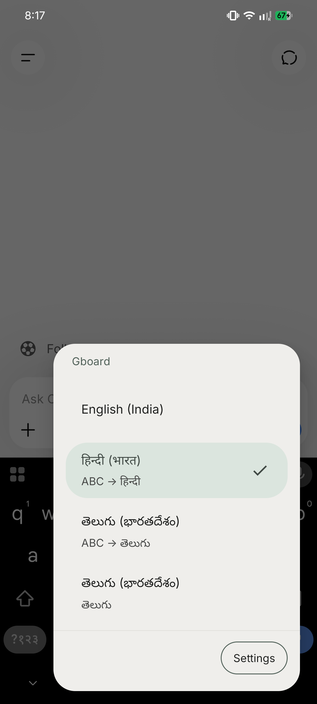
iPhone ਉੱਤੇ:
- Settings → General → Keyboard → Keyboards → Add New Keyboard ਵਿੱਚ ਜਾਓ।
- ਆਪਣੀ ਭਾਸ਼ਾ ਚੁਣੋ (ਉਦਾਹਰਣ ਵਜੋਂ "Punjabi" ਜਾਂ "Tamil")।
- ਟਾਈਪ ਕਰਦੇ ਸਮੇਂ ਬਦਲਣ ਲਈ ਗਲੋਬ 🌐 ਟੈਪ ਕਰੋ।
ਤਰੀਕਾ 3 — ChatGPT ਨੂੰ ਦੱਸ ਦਿਓ ਕਿ ਕਿਸ ਭਾਸ਼ਾ ਵਿੱਚ ਜਵਾਬ ਦੇਵੇ
ਬਸ ਇੱਕ ਵਾਰ ਦੱਸ ਦਿਓ! ਟਾਈਪ ਕਰੋ:
"ਮੈਨੂੰ ਹਮੇਸ਼ਾ ਸੌਖੀ ਪੰਜਾਬੀ ਵਿੱਚ ਜਵਾਬ ਦੇਣਾ।"
ਅਤੇ ਇਹ ਬਾਕੀ ਪੂਰੀ ਗੱਲਬਾਤ ਵਿੱਚ ਪੰਜਾਬੀ ਵਿੱਚ ਹੀ ਜਾਰੀ ਰੱਖੇਗਾ। ਤੁਸੀਂ ਇਹ ਕਿਸੇ ਵੀ ਭਾਸ਼ਾ ਲਈ ਕਰ ਸਕਦੇ ਹੋ।
3. ਤੁਸੀਂ ਟਾਈਪ ਕਰਨ ਦੀ ਥਾਂ ਬੋਲ ਵੀ ਸਕਦੇ ਹੋ
ਜੇ ਟਾਈਪ ਕਰਨਾ ਹੌਲੀ ਜਾਂ ਔਖਾ ਲੱਗਦਾ ਹੈ, ਤਾਂ ਤੁਹਾਨੂੰ ਟਾਈਪ ਕਰਨ ਦੀ ਲੋੜ ਹੀ ਨਹੀਂ — ਤੁਸੀਂ ChatGPT ਨਾਲ ਆਪਣੀ ਭਾਸ਼ਾ ਵਿੱਚ ਬੋਲ ਸਕਦੇ ਹੋ, ਬਿਲਕੁਲ ਫ਼ੋਨ ਉੱਤੇ ਗੱਲ ਕਰਨ ਵਾਂਗ। ਇਹ ਇੰਨੇ ਸਾਰੇ ਲੋਕਾਂ ਲਈ ਇੰਨਾ ਜ਼ਰੂਰੀ ਹੈ ਕਿ ਅਸੀਂ ਇਸ ਲਈ ਇੱਕ ਵੱਖਰਾ ਭਾਗ ਦਿੱਤਾ ਹੈ। ਅੱਗੇ ਭਾਗ 5 — ChatGPT ਨਾਲ ਫ਼ੋਨ ਕਾਲ ਵਾਂਗ ਗੱਲ ਕਰੋ ਵੇਖੋ।
ਭਾਗ 5 — ChatGPT ਨਾਲ ਫ਼ੋਨ ਕਾਲ ਵਾਂਗ ਗੱਲ ਕਰੋ (ਆਵਾਜ਼)
ਇਹ ਸ਼ਾਇਦ ਪੂਰੀ ਕਿਤਾਬ ਦਾ ਸਭ ਤੋਂ ਜ਼ਰੂਰੀ ਭਾਗ ਹੈ। ਜੇ ਪੜ੍ਹਨਾ ਅਤੇ ਟਾਈਪ ਕਰਨਾ ਹੌਲੀ ਜਾਂ ਔਖਾ ਲੱਗਦਾ ਹੈ — ਸ਼ਾਇਦ ਅੱਖਾਂ ਥੱਕ ਜਾਂਦੀਆਂ ਹੋਣ, ਉਂਗਲਾਂ ਕੀਬੋਰਡ ਦੀਆਂ ਆਦੀ ਨਾ ਹੋਣ, ਜਾਂ ਅੰਗਰੇਜ਼ੀ ਦੇ ਅੱਖਰ ਉਲਝਾ ਦਿੰਦੇ ਹੋਣ — ਤਾਂ ਇਹ ਤੁਹਾਡੇ ਲਈ ਸੁਨਹਿਰੀ ਦਰਵਾਜ਼ਾ ਹੈ।
ਤੁਸੀਂ ਬਸ ChatGPT ਨਾਲ ਆਪਣੀ ਭਾਸ਼ਾ ਵਿੱਚ ਗੱਲ ਕਰ ਸਕਦੇ ਹੋ, ਠੀਕ ਉਵੇਂ ਜਿਵੇਂ ਫ਼ੋਨ ਕਾਲ ਉੱਤੇ ਗੱਲ ਕਰਦੇ ਹੋ। ਇਹ ਸੁਣਦਾ ਹੈ, ਸਮਝਦਾ ਹੈ, ਅਤੇ ਜਵਾਬ ਵੀ ਬੋਲ ਕੇ ਦਿੰਦਾ ਹੈ। ਟਾਈਪ ਕਰਨ ਦੀ ਕੋਈ ਲੋੜ ਹੀ ਨਹੀਂ।
ਆਵਾਜ਼ ਸਭ ਤੋਂ ਸੌਖਾ ਤਰੀਕਾ ਕਿਉਂ ਹੈ
- ਕੋਈ ਟਾਈਪਿੰਗ ਨਹੀਂ। ਬਸ ਬੋਲੋ, ਜਿਵੇਂ WhatsApp ਉੱਤੇ ਵਾਇਸ ਸੁਨੇਹਾ ਛੱਡਦੇ ਹੋ।
- ਤੁਹਾਡੀ ਆਪਣੀ ਭਾਸ਼ਾ। ਹਿੰਦੀ, ਤਮਿਲ, ਬੰਗਾਲੀ, ਮਰਾਠੀ — ਜੋ ਵੀ ਆਰਾਮਦਾਇਕ ਹੋਵੇ, ਉਸ ਵਿੱਚ ਬੋਲੋ। ChatGPT ਸਮਝ ਜਾਂਦਾ ਹੈ।
- ਹੱਥ ਖ਼ਾਲੀ ਰਹਿਣ। ਖਾਣਾ ਬਣਾਉਂਦੇ, ਖੇਤੀ ਕਰਦੇ, ਜਾਂ ਬੱਚੇ ਨੂੰ ਗੋਦ ਵਿੱਚ ਲਏ ਹੋਏ ਵਧੀਆ।
- ਸਪੈਲਿੰਗ ਦੀ ਚਿੰਤਾ ਨਹੀਂ। ਤੁਹਾਨੂੰ ਕੁਝ ਵੀ ਸਹੀ-ਸਹੀ ਲਿਖਣਾ ਆਉਣਾ ਜ਼ਰੂਰੀ ਨਹੀਂ।
ਇਸ ਨੂੰ ਇਵੇਂ ਸਮਝੋ: ਜਿਵੇਂ ਤੁਸੀਂ ਆਪਣੇ ਪਰਿਵਾਰ ਨੂੰ ਟਾਈਪ ਕਰਨ ਦੀ ਥਾਂ WhatsApp ਉੱਤੇ ਵਾਇਸ ਸੁਨੇਹਾ ਭੇਜਦੇ ਹੋ? ChatGPT ਵੀ ਉਵੇਂ ਹੀ ਕੰਮ ਕਰਦਾ ਹੈ — ਪਰ ਪਰਿਵਾਰ ਦੇ ਕਿਸੇ ਮੈਂਬਰ ਦੀ ਥਾਂ, ਤੁਸੀਂ ਉਸ ਸਮਝਦਾਰ ਦੋਸਤ ਨਾਲ ਗੱਲ ਕਰ ਰਹੇ ਹੋ ਜੋ ਹਰ ਸਵਾਲ ਦਾ ਜਵਾਬ ਦਿੰਦਾ ਹੈ।
ਆਵਾਜ਼ ਦੇ ਦੋ ਤਰੀਕੇ — ਫ਼ਰਕ ਸਮਝੋ
ChatGPT ਤੁਹਾਨੂੰ ਆਵਾਜ਼ ਵਰਤਣ ਦੇ ਦੋ ਤਰੀਕੇ ਦਿੰਦਾ ਹੈ। ਦੋਵੇਂ ਸੌਖੇ ਹਨ।
ਤਰੀਕਾ 1 — ਆਪਣਾ ਸਵਾਲ ਬੋਲੋ (ਆਵਾਜ਼-ਤੋਂ-ਟੈਕਸਟ)
ਇਹ ਤੁਹਾਡੇ ਬੋਲੇ ਗਏ ਸ਼ਬਦਾਂ ਨੂੰ ਟਾਈਪ ਕੀਤੇ ਹੋਏ ਟੈਕਸਟ ਵਿੱਚ ਬਦਲ ਦਿੰਦਾ ਹੈ, ਫਿਰ ChatGPT ਲਿਖ ਕੇ ਜਵਾਬ ਦਿੰਦਾ ਹੈ।
- ChatGPT ਖੋਲ੍ਹੋ।
- ਹੇਠਾਂ ਸੁਨੇਹੇ ਦੇ ਖ਼ਾਨੇ ਨੂੰ ਵੇਖੋ। ਸੱਜੇ ਪਾਸੇ ਤੁਹਾਨੂੰ ਇੱਕ ਛੋਟਾ ਮਾਈਕ੍ਰੋਫ਼ੋਨ ਆਈਕਨ 🎤 ਦਿਸੇਗਾ। ਉਸ ਨੂੰ ਟੈਪ ਕਰੋ।
- ਪਹਿਲੀ ਵਾਰ, ਤੁਹਾਡਾ ਫ਼ੋਨ ਪੁੱਛ ਸਕਦਾ ਹੈ "Allow ChatGPT to record audio?" — "Allow" ਟੈਪ ਕਰੋ (ਇਹ ਸੁਰੱਖਿਅਤ ਹੈ; ਤੁਹਾਨੂੰ ਸੁਣਨ ਲਈ ਜ਼ਰੂਰੀ ਹੈ)।
- ਹੁਣ ਆਪਣੀ ਭਾਸ਼ਾ ਵਿੱਚ ਸਾਫ਼-ਸਾਫ਼ ਆਪਣਾ ਸਵਾਲ ਬੋਲੋ। ਉਦਾਹਰਣ ਵਜੋਂ ਕਹੋ: "ਮੇਰੀ ਧੀ ਨੂੰ ਬੁਖ਼ਾਰ ਹੈ, ਉਸ ਨੂੰ ਕੀ ਖਾਣਾ ਦੇਣਾ ਚਾਹੀਦਾ ਹੈ?"
- ਤੁਹਾਡੇ ਬੋਲੇ ਸ਼ਬਦ ਖ਼ਾਨੇ ਵਿੱਚ ਟੈਕਸਟ ਬਣ ਜਾਣਗੇ। ਵੇਖ ਲਵੋ ਕਿ ਸਹੀ ਲੱਗ ਰਹੇ ਹਨ, ਫਿਰ ਭੇਜਣ ਵਾਲਾ ਤੀਰ ਟੈਪ ਕਰੋ।
- ChatGPT ਲਿਖ ਕੇ ਜਵਾਬ ਦਿੰਦਾ ਹੈ, ਜਿਸ ਨੂੰ ਤੁਸੀਂ ਪੜ੍ਹ ਸਕਦੇ ਹੋ ਜਾਂ ਉੱਚੀ ਆਵਾਜ਼ ਵਿੱਚ ਪੜ੍ਹਵਾ ਸਕਦੇ ਹੋ।
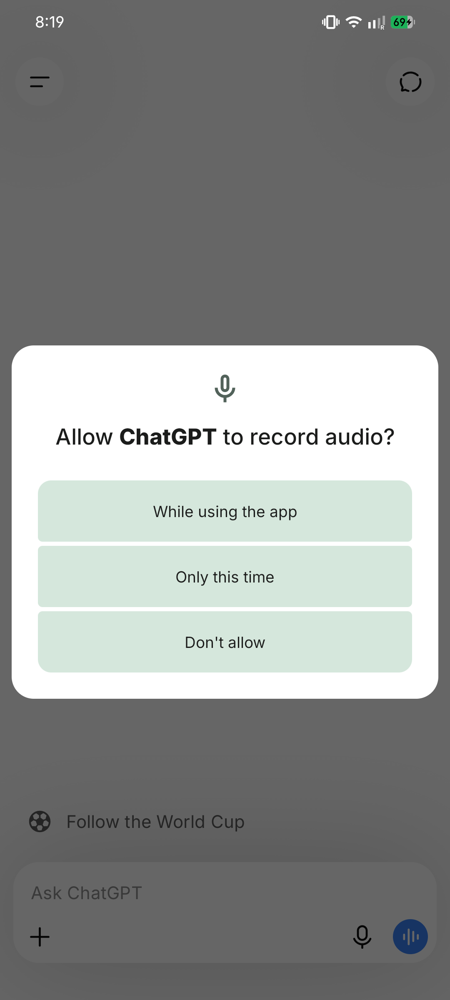
ਤਰੀਕਾ 2 — ਪੂਰੀ ਆਵਾਜ਼ੀ ਗੱਲਬਾਤ (ਬੋਲੋ ਅਤੇ ਸੁਣੋ, ਸੱਚੀ ਕਾਲ ਵਾਂਗ)
ਇਹ ਜਾਦੂਈ ਵਾਲਾ ਹੈ। ਤੁਸੀਂ ਬੋਲਦੇ ਹੋ, ਅਤੇ ChatGPT ਉੱਚੀ ਆਵਾਜ਼ ਵਿੱਚ ਬੋਲ ਕੇ ਜਵਾਬ ਦਿੰਦਾ ਹੈ — ਇੱਕ ਸੱਚੀ ਅੱਗੇ-ਪਿੱਛੇ ਦੀ ਗੱਲਬਾਤ, ਬਿਲਕੁਲ ਫ਼ੋਨ ਕਾਲ ਵਾਂਗ। ਬਜ਼ੁਰਗਾਂ ਅਤੇ ਉਨ੍ਹਾਂ ਸਾਰਿਆਂ ਲਈ ਵਧੀਆ ਜੋ ਪੜ੍ਹਨ ਨਾਲੋਂ ਜ਼ਿਆਦਾ ਸੁਣਨਾ ਪਸੰਦ ਕਰਦੇ ਹਨ।
- ChatGPT ਵਿੱਚ, ਹੈੱਡਫ਼ੋਨ ਜਾਂ ਆਵਾਜ਼-ਤਰੰਗ (sound-wave) ਆਈਕਨ ਲੱਭੋ (ਆਮ ਤੌਰ 'ਤੇ ਹੇਠਾਂ ਸੱਜੇ ਪਾਸੇ, ਸੁਨੇਹੇ ਖ਼ਾਨੇ ਦੇ ਕੋਲ)।
- ਉਸ ਨੂੰ ਟੈਪ ਕਰੋ। ਇੱਕ ਗੋਲ, ਚਮਕਦਾ ਘੇਰਾ ਦਿਸੇਗਾ — ਇਸ ਦਾ ਮਤਲਬ ਹੈ ChatGPT ਸੁਣ ਰਿਹਾ ਹੈ।
- ਬਸ ਆਪਣੀ ਭਾਸ਼ਾ ਵਿੱਚ ਸੁਭਾਵਿਕ ਤਰੀਕੇ ਨਾਲ ਬੋਲਣਾ ਸ਼ੁਰੂ ਕਰੋ। ਹੋਰ ਕੁਝ ਟੈਪ ਕਰਨ ਦੀ ਲੋੜ ਨਹੀਂ।
- ਖ਼ਤਮ ਹੋਣ 'ਤੇ ਰੁਕੋ। ChatGPT ਇੱਕ ਦੋਸਤਾਨਾ ਆਵਾਜ਼ ਵਿੱਚ ਉੱਚੀ ਆਵਾਜ਼ ਵਿੱਚ ਜਵਾਬ ਦੇਵੇਗਾ।
- ਅਗਲੀ ਗੱਲ ਪੁੱਛਣ ਲਈ, ਬਸ ਬੋਲਦੇ ਰਹੋ। ਇਹ ਗੱਲਬਾਤ ਯਾਦ ਰੱਖਦਾ ਹੈ।
- ਹੋ ਜਾਣ 'ਤੇ, ਕਾਲ ਖ਼ਤਮ ਕਰਨ ਲਈ "X" ਜਾਂ ਬੰਦ ਕਰਨ ਦਾ ਬਟਨ ਟੈਪ ਕਰੋ।
ਟਿਪ: ਇਹ ਬੋਲ ਕੇ ਅੰਗਰੇਜ਼ੀ ਦਾ ਅਭਿਆਸ ਕਰਨ ਦਾ ਵੀ ਇੱਕ ਸ਼ਾਨਦਾਰ, ਨਿੱਜੀ ਤਰੀਕਾ ਹੈ। ਇਸ ਨਾਲ ਅੰਗਰੇਜ਼ੀ ਵਿੱਚ ਗੱਲ ਕਰੋ, ਅਤੇ ਇਹ ਹੌਲੀ ਜਿਹੇ ਜਵਾਬ ਦੇਵੇਗਾ — ਕੋਈ ਤੁਹਾਨੂੰ ਪਰਖ ਨਹੀਂ ਰਿਹਾ, ਅਤੇ ਤੁਸੀਂ ਜਿੰਨੀ ਵਾਰ ਚਾਹੋ ਦੁਹਰਾ ਸਕਦੇ ਹੋ।
ਆਵਾਜ਼ ਨਾਲ ਅਜ਼ਮਾਉਣ ਦੇ ਤਿੰਨ ਅਸਲੀ ਉਦਾਹਰਣ
ਆਵਾਜ਼ੀ ਮੋਡ ਖੋਲ੍ਹੋ ਅਤੇ ਇਨ੍ਹਾਂ ਨੂੰ ਆਪਣੀ ਭਾਸ਼ਾ ਵਿੱਚ ਬਸ ਉੱਚੀ ਆਵਾਜ਼ ਵਿੱਚ ਬੋਲੋ:
ਉਦਾਹਰਣ 1 — ਸਿਹਤ:
🎤 "ਮੇਰੀ ਧੀ ਨੂੰ ਬੁਖ਼ਾਰ ਹੈ। ਉਸ ਨੂੰ ਕੀ ਖਾਣਾ ਦੇਣਾ ਚਾਹੀਦਾ ਹੈ?"
ChatGPT ਹਲਕੇ, ਸੌਖੇ ਖਾਣੇ ਸੁਝਾਏਗਾ ਜਿਵੇਂ ਖਿਚੜੀ, ਸੂਪ, ਫਲ, ਅਤੇ ਖ਼ੂਬ ਤਰਲ ਪਦਾਰਥ — ਅਤੇ ਯਾਦ ਦਿਵਾਏਗਾ ਕਿ ਜੇ ਬੁਖ਼ਾਰ ਤੇਜ਼ ਹੋਵੇ ਜਾਂ ਲੰਮਾ ਚੱਲੇ ਤਾਂ ਡਾਕਟਰ ਨੂੰ ਦਿਖਾਓ।
ਉਦਾਹਰਣ 2 — ਜੋ ਸਾਮਾਨ ਹੈ ਉਸ ਤੋਂ ਖਾਣਾ ਬਣਾਉਣਾ:
🎤 "ਮੇਰੇ ਕੋਲ 2 ਪਿਆਜ਼, 3 ਟਮਾਟਰ ਅਤੇ ਕੁਝ ਆਲੂ ਹਨ। ਮੈਂ ਕੀ ਬਣਾ ਸਕਦੀ ਹਾਂ?"
ChatGPT ਤੁਹਾਨੂੰ 2–3 ਸੌਖੇ ਪਕਵਾਨਾਂ ਦੇ ਸੁਝਾਅ ਦੇਵੇਗਾ — ਜਿਵੇਂ ਆਲੂ-ਟਮਾਟਰ ਦੀ ਸਬਜ਼ੀ ਜਾਂ ਇੱਕ ਝਟਪਟ ਕਰੀ — ਸੌਖੇ ਕਦਮਾਂ ਨਾਲ, ਸਭ ਤੁਹਾਡੀ ਬੋਲੀ ਹੋਈ ਸੂਚੀ ਤੋਂ।
ਉਦਾਹਰਣ 3 — ਕਿਸੇ ਸਰਕਾਰੀ ਯੋਜਨਾ ਨੂੰ ਸਮਝਣਾ:
🎤 "ਪੀਐੱਮ ਕਿਸਾਨ ਯੋਜਨਾ ਨੂੰ ਸੌਖੇ ਸ਼ਬਦਾਂ ਵਿੱਚ ਸਮਝਾਓ।"
ChatGPT ਇਸ ਨੂੰ ਸਾਫ਼-ਸਾਫ਼ ਸਮਝਾਏਗਾ: ਇਹ ਕੀ ਹੈ, ਕਿਸ ਦੀ ਮਦਦ ਕਰਦੀ ਹੈ (ਛੋਟੇ ਕਿਸਾਨ), ਅਤੇ ਦਿੱਤੀ ਜਾਣ ਵਾਲੀ ਮਦਦ ਦਾ ਬੁਨਿਆਦੀ ਵਿਚਾਰ — ਅਤੇ ਯਾਦ ਦਿਵਾਏਗਾ ਕਿ ਅਧਿਕਾਰਤ ਸਰਕਾਰੀ ਵੈੱਬਸਾਈਟ ਉੱਤੇ ਜਾਣਕਾਰੀ ਪੱਕੀ ਕਰ ਲਵੋ।
ਸਾਫ਼ ਆਵਾਜ਼ੀ ਨਤੀਜਿਆਂ ਲਈ ਕੁਝ ਟਿਪਸ
- ਹੋ ਸਕੇ ਤਾਂ ਸ਼ਾਂਤ ਜਗ੍ਹਾ ਉੱਤੇ ਬੋਲੋ, ਤਾਂ ਜੋ ਇਹ ਤੁਹਾਨੂੰ ਚੰਗੀ ਤਰ੍ਹਾਂ ਸੁਣ ਸਕੇ।
- ਆਮ, ਆਰਾਮ ਦੀ ਰਫ਼ਤਾਰ ਨਾਲ ਬੋਲੋ — ਚਿੱਲਾਉਣ ਜਾਂ ਜਲਦਬਾਜ਼ੀ ਦੀ ਲੋੜ ਨਹੀਂ।
- ਜੇ ਇਹ ਕੋਈ ਸ਼ਬਦ ਗ਼ਲਤ ਸੁਣ ਲਏ, ਤਾਂ ਬਸ ਦੁਬਾਰਾ ਬੋਲੋ ਜਾਂ ਠੀਕ ਕਰ ਦਿਓ — ਇਹ ਧੀਰਜਵਾਨ ਹੈ।
- ਤੁਸੀਂ ਭਾਸ਼ਾਵਾਂ ਮਿਲਾ ਸਕਦੇ ਹੋ (ਪੰਜਾਬੀ + ਅੰਗਰੇਜ਼ੀ ਦੇ ਸ਼ਬਦ) — ChatGPT ਸਾਡੀ ਅਸਲੀ ਬੋਲਚਾਲ ਨੂੰ ਸਮਝਦਾ ਹੈ।
ਜੋ ਲੋਕ ਟਾਈਪ ਕਰਨ ਵਿੱਚ ਜੂਝਦੇ ਹਨ, ਉਹ ਆਵਾਜ਼ ਦੀ ਖੋਜ ਕਰਦੇ ਹੀ ਰੋਜ਼ ChatGPT ਵਰਤਣ ਲੱਗ ਪੈਂਦੇ ਹਨ। ਇਸ ਨੂੰ ਅੱਜ ਹੀ ਅਜ਼ਮਾਓ, ਅਤੇ ਪਰਿਵਾਰ ਦੇ ਉਸ ਮੈਂਬਰ ਨੂੰ ਦਿਖਾਓ ਜਿਸ ਨੂੰ ਟਾਈਪ ਕਰਨਾ ਔਖਾ ਲੱਗਦਾ ਹੈ। ਇਹ ਸਭ ਕੁਝ ਬਦਲ ਦਿੰਦਾ ਹੈ।
ਭਾਗ 6 — ਫ਼ੋਟੋ ਖਿੱਚ ਕੇ ਸਵਾਲ ਪੁੱਛੋ (ਕੈਮਰੇ ਦਾ ਇਸਤੇਮਾਲ)
ਇੱਥੇ ਇੱਕ ਗੱਲ ਹੈ ਜੋ ਜ਼ਿਆਦਾਤਰ ਲੋਕ ਨਹੀਂ ਜਾਣਦੇ: ChatGPT ਤਸਵੀਰਾਂ ਵੇਖ ਸਕਦਾ ਹੈ। ਤੁਸੀਂ ਆਪਣੇ ਫ਼ੋਨ ਨਾਲ ਇੱਕ ਫ਼ੋਟੋ ਖਿੱਚ ਸਕਦੇ ਹੋ, ਉਸ ਨੂੰ ChatGPT ਨੂੰ ਭੇਜ ਸਕਦੇ ਹੋ, ਅਤੇ ਉਸ ਬਾਰੇ ਸਵਾਲ ਪੁੱਛ ਸਕਦੇ ਹੋ। ਬਹੁਤ ਲੋਕਾਂ ਲਈ, ਇਹ ਟਾਈਪ ਕਰਨ ਨਾਲੋਂ ਵੀ ਜ਼ਿਆਦਾ ਕੰਮ ਦਾ ਹੈ — ਕਿਉਂਕਿ ਤੁਸੀਂ ਆਪਣੀ ਸਮੱਸਿਆ ਬਸ ਦਿਖਾ ਸਕਦੇ ਹੋ।
ਇਸ ਨੂੰ ਇਵੇਂ ਸਮਝੋ ਜਿਵੇਂ ਕਿਸੇ ਜਾਣਕਾਰ ਦੋਸਤ ਨੂੰ ਫ਼ੋਟੋ ਦਿਖਾ ਕੇ ਪੁੱਛਣਾ, "ਇਹ ਕੀ ਹੈ? ਮੈਨੂੰ ਕੀ ਕਰਨਾ ਚਾਹੀਦਾ ਹੈ?"
ਫ਼ੋਟੋ ਭੇਜ ਕੇ ਉਸ ਬਾਰੇ ਕਿਵੇਂ ਪੁੱਛੀਏ
- ChatGPT ਖੋਲ੍ਹੋ ਅਤੇ ਇੱਕ ਚੈਟ ਸ਼ੁਰੂ ਕਰੋ।
- ਸੁਨੇਹੇ ਖ਼ਾਨੇ ਦੇ ਕੋਲ, ਇੱਕ "+" ਆਈਕਨ ਜਾਂ ਇੱਕ ਕੈਮਰਾ/ਫ਼ੋਟੋ ਆਈਕਨ 📷 ਲੱਭੋ। ਉਸ ਨੂੰ ਟੈਪ ਕਰੋ।
- ਤੁਹਾਨੂੰ ਦੋ ਵਿਕਲਪ ਮਿਲਣਗੇ:
- "Take Photo" — ਨਵੀਂ ਤਸਵੀਰ ਖਿੱਚਣ ਲਈ ਤੁਹਾਡਾ ਕੈਮਰਾ ਖੋਲ੍ਹਦਾ ਹੈ, ਜਾਂ
- "Photo Library / Gallery" — ਪਹਿਲਾਂ ਤੋਂ ਰੱਖੀ ਹੋਈ ਤਸਵੀਰ ਚੁਣਨ ਲਈ।
- ਪਹਿਲੀ ਵਾਰ, ਮੰਗਣ 'ਤੇ ChatGPT ਨੂੰ ਆਪਣੇ ਕੈਮਰੇ ਜਾਂ ਫ਼ੋਟੋ ਦਾ ਇਸਤੇਮਾਲ ਕਰਨ ਦਿਓ ("Allow" ਟੈਪ ਕਰੋ)। ਇਹ ਸੁਰੱਖਿਅਤ ਹੈ।
- ਫ਼ੋਟੋ ਜੁੜ ਜਾਣ ਤੋਂ ਬਾਅਦ, ਉਸ ਬਾਰੇ ਆਪਣਾ ਸਵਾਲ ਟਾਈਪ ਕਰੋ ਜਾਂ ਬੋਲੋ — ਉਦਾਹਰਣ ਵਜੋਂ, "ਇਸ ਪੌਦੇ ਨੂੰ ਕੀ ਹੋਇਆ ਹੈ?"
- ਭੇਜੋ ਟੈਪ ਕਰੋ। ChatGPT ਫ਼ੋਟੋ ਵੇਖ ਕੇ ਜਵਾਬ ਦਿੰਦਾ ਹੈ।
ਕੈਮਰੇ ਦੇ ਛੇ ਦਮਦਾਰ ਇਸਤੇਮਾਲ
1. ਬੀਮਾਰ ਪੌਦਾ ਜਾਂ ਫ਼ਸਲ 🌱
ਦਾਗ਼ ਵਾਲੀ ਪੱਤੀ ਜਾਂ ਮੁਰਝਾਉਂਦੇ ਪੌਦੇ ਦੀ ਫ਼ੋਟੋ ਖਿੱਚੋ ਅਤੇ ਪੁੱਛੋ:
"ਮੇਰੇ ਟਮਾਟਰ ਦੇ ਪੌਦੇ ਦੀਆਂ ਪੱਤੀਆਂ ਉੱਤੇ ਇਹ ਪੀਲੇ ਧੱਬੇ ਹਨ। ਕੀ ਦਿੱਕਤ ਹੋ ਸਕਦੀ ਹੈ ਅਤੇ ਮੈਂ ਕੀ ਕਰ ਸਕਦਾ ਹਾਂ?" ChatGPT ਸੰਭਾਵਿਤ ਕਾਰਨ (ਕੀੜਾ, ਜ਼ਿਆਦਾ/ਘੱਟ ਪਾਣੀ, ਬੀਮਾਰੀ) ਅਤੇ ਸੌਖੇ ਉਪਾਅ ਸੁਝਾ ਸਕਦਾ ਹੈ। (ਫ਼ਸਲ ਲਈ, ਆਪਣੇ ਸਥਾਨਕ ਕ੍ਰਿਸ਼ੀ ਵਿਗਿਆਨ ਕੇਂਦਰ (Krishi Vigyan Kendra) ਤੋਂ ਵੀ ਪੱਕਾ ਕਰੋ।)
2. ਦਵਾਈ ਦੇ ਪੱਤੇ ਨੂੰ ਸਮਝਣਾ 💊
ਦਵਾਈ ਦੇ ਪੈਕੇਟ/ਪੱਤੇ ਦੀ ਫ਼ੋਟੋ ਖਿੱਚੋ ਅਤੇ ਪੁੱਛੋ:
"ਇਹ ਦਵਾਈ ਕਿਸ ਲਈ ਇਸਤੇਮਾਲ ਹੁੰਦੀ ਹੈ, ਅਤੇ ਆਮ ਸਾਵਧਾਨੀਆਂ ਕੀ ਹਨ?" ਇਹ ਸੌਖੇ ਸ਼ਬਦਾਂ ਵਿੱਚ ਇਸ ਦਾ ਆਮ ਮਕਸਦ ਸਮਝਾ ਸਕਦਾ ਹੈ। ⚠️ ਬਹੁਤ ਜ਼ਰੂਰੀ: ਇਹ ਸਿਰਫ਼ ਸਮਝਣ ਲਈ ਹੈ। ਇਸ ਦੇ ਆਧਾਰ 'ਤੇ ਕੋਈ ਦਵਾਈ ਸ਼ੁਰੂ, ਬੰਦ ਜਾਂ ਬਦਲੋ ਕਦੇ ਨਹੀਂ। ਖ਼ੁਰਾਕ ਅਤੇ ਸੁਰੱਖਿਆ ਲਈ ਹਮੇਸ਼ਾ ਆਪਣੇ ਡਾਕਟਰ ਅਤੇ ਕੈਮਿਸਟ ਦੀ ਸਲਾਹ ਮੰਨੋ।
3. ਕੋਈ ਸਰਕਾਰੀ ਫ਼ਾਰਮ ਭਰਨਾ 📄
ਕਿਸੇ ਉਲਝਾਉਣ ਵਾਲੇ ਫ਼ਾਰਮ ਦੀ ਫ਼ੋਟੋ ਖਿੱਚੋ ਅਤੇ ਪੁੱਛੋ:
"ਇਹ ਫ਼ਾਰਮ ਕੀ-ਕੀ ਪੁੱਛ ਰਿਹਾ ਹੈ, ਇੱਕ-ਇੱਕ ਖ਼ਾਨਾ ਕਰ ਕੇ ਸੌਖੀ ਪੰਜਾਬੀ ਵਿੱਚ ਸਮਝਾਓ।" ChatGPT ਤੁਹਾਨੂੰ ਦੱਸ ਸਕਦਾ ਹੈ ਕਿ ਹਰ ਖ਼ਾਨੇ ਦਾ ਕੀ ਮਤਲਬ ਹੈ। (ਅਜਿਹੇ ਪੰਨਿਆਂ ਦੀ ਫ਼ੋਟੋ ਨਾ ਖਿੱਚੋ ਜਿਨ੍ਹਾਂ ਵਿੱਚ ਪਹਿਲਾਂ ਤੋਂ ਤੁਹਾਡਾ Aadhaar ਨੰਬਰ, ਬੈਂਕ ਦੀ ਜਾਣਕਾਰੀ, ਜਾਂ ਦਸਤਖ਼ਤ ਹੋਣ — ਉਨ੍ਹਾਂ ਨੂੰ ਨਿੱਜੀ ਰੱਖੋ।)
4. ਹੱਥ ਨਾਲ ਲਿਖਿਆ ਨੋਟ ਪੜ੍ਹਨਾ ✍️
ਹੱਥ-ਲਿਖੀ ਚੀਜ਼ (ਇੱਕ ਨੋਟ, ਇੱਕ ਰੈਸਿਪੀ, ਇੱਕ ਪੁਰਾਣੀ ਚਿੱਠੀ) ਦੀ ਫ਼ੋਟੋ ਖਿੱਚੋ ਅਤੇ ਪੁੱਛੋ:
"ਕਿਰਪਾ ਕਰ ਕੇ ਇਸ ਨੋਟ ਨੂੰ ਪੜ੍ਹ ਕੇ ਮੇਰੇ ਲਈ ਸਾਫ਼-ਸਾਫ਼ ਟਾਈਪ ਕਰ ਦਿਓ।"
5. ਬੱਚੇ ਦੇ ਹੋਮਵਰਕ ਵਿੱਚ ਮਦਦ 📐
ਕਿਸੇ ਗਣਿਤ ਦੇ ਸਵਾਲ ਜਾਂ ਕਿਤਾਬ ਦੇ ਪ੍ਰਸ਼ਨ ਦੀ ਫ਼ੋਟੋ ਖਿੱਚੋ ਅਤੇ ਪੁੱਛੋ:
"ਇਸ ਸਵਾਲ ਨੂੰ ਹੱਲ ਕਰਨ ਦਾ ਤਰੀਕਾ ਕਦਮ-ਦਰ-ਕਦਮ ਸਮਝਾਓ ਤਾਂ ਜੋ ਮੈਂ ਆਪਣੇ ਬੱਚੇ ਨੂੰ ਸਿਖਾ ਸਕਾਂ।"
6. ਕਿਸੇ ਉਪਕਰਨ ਦੀ ਏਰਰ ਜਾਂ ਸਕਰੀਨ ਸਮਝਣਾ ⚙️
ਵਾਸ਼ਿੰਗ ਮਸ਼ੀਨ ਦੇ ਡਿਸਪਲੇ, ਕਿਸੇ ਏਰਰ ਸੁਨੇਹੇ, ਜਾਂ ਕਿਸੇ ਵੀ ਸਕਰੀਨ ਦੀ ਫ਼ੋਟੋ ਖਿੱਚੋ ਅਤੇ ਪੁੱਛੋ:
"ਮੇਰੀ ਵਾਸ਼ਿੰਗ ਮਸ਼ੀਨ ਇਹ ਦਿਖਾ ਰਹੀ ਹੈ। ਇਸ ਦਾ ਕੀ ਮਤਲਬ ਹੈ ਅਤੇ ਮੈਨੂੰ ਕੀ ਕਰਨਾ ਚਾਹੀਦਾ ਹੈ?"
ਇੱਕ ਪੂਰਾ ਉਦਾਹਰਣ ਗੱਲਬਾਤ
ਤੁਸੀਂ ਕਰਦੇ ਹੋ: ਨਿੰਬੂ ਦੇ ਪੌਦੇ ਦੀ ਇੱਕ ਪੱਤੀ ਜਿਸ ਉੱਤੇ ਚਿੱਟੇ ਧੱਬੇ ਹਨ, ਉਸ ਦੀ ਫ਼ੋਟੋ ਖਿੱਚਦੇ ਹੋ।
ਤੁਸੀਂ ਟਾਈਪ ਕਰਦੇ ਹੋ ਜਾਂ ਬੋਲਦੇ ਹੋ:
"ਮੇਰੇ ਨਿੰਬੂ ਦੇ ਪੌਦੇ ਦੀਆਂ ਪੱਤੀਆਂ ਉੱਤੇ ਇਹ ਚਿੱਟਾ ਪਾਊਡਰ ਜਿਹਾ ਕੀ ਹੈ? ਮੈਂ ਇਸ ਨੂੰ ਸੌਖੇ ਘਰੇਲੂ ਤਰੀਕਿਆਂ ਨਾਲ ਕਿਵੇਂ ਠੀਕ ਕਰਾਂ?"
ChatGPT ਜਵਾਬ ਦਿੰਦਾ ਹੈ:
ਤੁਹਾਡੀ ਫ਼ੋਟੋ ਤੋਂ, ਪੱਤੀਆਂ ਉੱਤੇ ਇਹ ਚਿੱਟੀ ਪਾਊਡਰ ਜਿਹੀ ਪਰਤ ਪਾਊਡਰੀ ਮਿਲਡਿਊ (powdery mildew) ਲੱਗ ਰਹੀ ਹੈ, ਜੋ ਇੱਕ ਆਮ ਫ਼ਫੂੰਦ ਦੀ ਸਮੱਸਿਆ ਹੈ, ਖ਼ਾਸ ਕਰ ਕੇ ਨਮੀ ਜਾਂ ਛਾਂ ਵਾਲੀਆਂ ਜਗ੍ਹਾਵਾਂ ਵਿੱਚ।
ਕੁਝ ਸੌਖੀਆਂ ਚੀਜ਼ਾਂ ਜੋ ਤੁਸੀਂ ਅਜ਼ਮਾ ਸਕਦੇ ਹੋ:
- ਹਵਾ ਦਾ ਆਉਣਾ-ਜਾਣਾ ਵਧਾਓ: ਬਹੁਤ ਸੰਘਣੀਆਂ ਟਾਹਣੀਆਂ ਨੂੰ ਛਾਂਟ ਦਿਓ ਤਾਂ ਜੋ ਹਵਾ ਅਤੇ ਧੁੱਪ ਪੱਤੀਆਂ ਤੱਕ ਪਹੁੰਚੇ।
- ਨਿੰਮ ਦਾ ਛਿੜਕਾਅ: ਥੋੜ੍ਹੇ ਨਿੰਮ ਦੇ ਤੇਲ ਵਿੱਚ ਪਾਣੀ ਅਤੇ ਹਲਕੇ ਸਾਬਣ ਦੀ ਇੱਕ ਬੂੰਦ ਮਿਲਾਓ, ਅਤੇ ਸ਼ਾਮ ਨੂੰ ਪ੍ਰਭਾਵਿਤ ਪੱਤੀਆਂ ਉੱਤੇ ਛਿੜਕੋ।
- ਬੇਕਿੰਗ ਸੋਡੇ ਦਾ ਛਿੜਕਾਅ: ਇੱਕ ਲੀਟਰ ਪਾਣੀ ਵਿੱਚ ਇੱਕ ਚਮਚ ਬੇਕਿੰਗ ਸੋਡਾ ਫ਼ਫੂੰਦ ਨੂੰ ਰੋਕਣ ਵਿੱਚ ਮਦਦ ਕਰ ਸਕਦਾ ਹੈ।
- ਬਹੁਤ ਪ੍ਰਭਾਵਿਤ ਪੱਤੀਆਂ ਹਟਾ ਦਿਓ ਅਤੇ ਪੱਤੀਆਂ ਉੱਤੇ ਉੱਪਰੋਂ ਪਾਣੀ ਨਾ ਪਾਓ।
ਇੱਕ ਹਫ਼ਤੇ ਤੱਕ ਵੇਖੋ। ਜੇ ਇਹ ਬਹੁਤ ਫੈਲੇ, ਤਾਂ ਸਹੀ ਸਲਾਹ ਲਈ ਇੱਕ ਪੱਤੀ ਦਾ ਨਮੂਨਾ ਆਪਣੀ ਸਥਾਨਕ ਨਰਸਰੀ ਜਾਂ ਕ੍ਰਿਸ਼ੀ ਵਿਗਿਆਨ ਕੇਂਦਰ (Krishi Vigyan Kendra) ਲੈ ਜਾਓ।
ਫ਼ੋਟੋ ਲਈ ਨਿੱਜਤਾ ਦੀ ਯਾਦ-ਦਿਹਾਨੀ
- ✅ ਇਨ੍ਹਾਂ ਦੀ ਫ਼ੋਟੋ ਖਿੱਚਣਾ ਠੀਕ ਹੈ: ਪੌਦੇ, ਦਵਾਈਆਂ (ਜਾਣਕਾਰੀ ਲਈ), ਉਪਕਰਨ, ਹੋਮਵਰਕ, ਆਮ ਫ਼ਾਰਮ।
- ❌ ਇਨ੍ਹਾਂ ਦੀ ਫ਼ੋਟੋ ਖਿੱਚਣ ਤੋਂ ਬਚੋ: ਤੁਹਾਡਾ Aadhaar ਕਾਰਡ ਨੰਬਰ, ਬੈਂਕ ਪਾਸਬੁੱਕ, ATM ਕਾਰਡ, ਚੈੱਕ, ਪਾਸਵਰਡ, ਜਾਂ ਕਿਸੇ ਦੇ ਨਿੱਜੀ ਦਸਤਾਵੇਜ਼।
ਫ਼ੋਟੋ ਨੂੰ ਵੀ ਸ਼ਬਦਾਂ ਵਾਂਗ ਹੀ ਸਮਝੋ — ਗੁਪਤ ਜਾਂ ਨਿੱਜੀ ਜਾਣਕਾਰੀ ਕਦੇ ਸਾਂਝੀ ਨਾ ਕਰੋ।
ਭਾਗ 7 — ਸਵਾਲ ਕਿਵੇਂ ਪੁੱਛੀਏ (ਪ੍ਰੋਂਪਟ ਦੀਆਂ ਮੁੱਢਲੀਆਂ ਗੱਲਾਂ)
ਇਹ ਪੂਰੀ ਗਾਈਡ ਦਾ ਦਿਲ ਹੈ। ਇੱਕ ਵਾਰ ਜਦੋਂ ਤੁਸੀਂ ਚੰਗੇ ਸਵਾਲ ਪੁੱਛਣਾ ਸਿੱਖ ਜਾਂਦੇ ਹੋ, ਤਾਂ ChatGPT ਦਸ ਗੁਣਾ ਜ਼ਿਆਦਾ ਕੰਮ ਦਾ ਹੋ ਜਾਂਦਾ ਹੈ। ਚਿੰਤਾ ਨਾ ਕਰੋ — ਇਹ ਬਹੁਤ ਸੌਖਾ ਹੈ, ਅਤੇ ਅਸੀਂ ਢੇਰਾਂ ਉਦਾਹਰਣ ਇਸਤੇਮਾਲ ਕਰਾਂਗੇ।
"ਪ੍ਰੋਂਪਟ" ਕੀ ਹੈ?
"ਪ੍ਰੋਂਪਟ" (prompt) ਬਸ ਤੁਹਾਡੇ ਸਵਾਲ ਜਾਂ ਬੇਨਤੀ ਦਾ ਇੱਕ ਭਾਰੀ-ਭਰਕਮ ਨਾਮ ਹੈ — ਜੋ ਵੀ ਤੁਸੀਂ ChatGPT ਨੂੰ ਟਾਈਪ ਕਰਦੇ ਹੋ।
- ਜੇ ਤੁਸੀਂ ਟਾਈਪ ਕਰੋ "ਚਾਹ ਕਿਵੇਂ ਬਣਾਵਾਂ?" — ਉਹ ਇੱਕ ਪ੍ਰੋਂਪਟ ਹੈ।
- ਜੇ ਤੁਸੀਂ ਟਾਈਪ ਕਰੋ "ਮੇਰੀ ਮਾਂ ਲਈ ਜਨਮਦਿਨ ਦਾ ਸੁਨੇਹਾ ਲਿਖੋ" — ਉਹ ਇੱਕ ਪ੍ਰੋਂਪਟ ਹੈ।
ਤਾਂ ਜਦੋਂ ਵੀ ਇਹ ਗਾਈਡ "ਪ੍ਰੋਂਪਟ" ਕਹੇ, ਤਾਂ ਬਸ ਸੋਚੋ "ਜੋ ਚੀਜ਼ ਮੈਂ ਪੁੱਛਦਾ ਹਾਂ।" ਬਸ ਇੰਨਾ ਹੀ।
ਸੁਨਹਿਰੀ ਨਿਯਮ: ਇਵੇਂ ਗੱਲ ਕਰੋ ਜਿਵੇਂ ਕਿਸੇ ਮਦਦਗਾਰ ਇਨਸਾਨ ਨਾਲ ਕਰਦੇ ਹੋ
ਤੁਹਾਨੂੰ ਕਿਸੇ ਖ਼ਾਸ ਸ਼ਬਦ ਜਾਂ ਕੰਪਿਊਟਰ ਦੀ ਭਾਸ਼ਾ ਦੀ ਲੋੜ ਨਹੀਂ। ਬਸ ਇਵੇਂ ਲਿਖੋ ਜਿਵੇਂ ਤੁਸੀਂ ਕਿਸੇ ਜਾਣਕਾਰ ਗੁਆਂਢੀ ਨੂੰ ਸਮਝਾਉਂਦੇ ਹੋ। ChatGPT ਆਮ, ਰੋਜ਼ਮੱਰਾ ਦੀ ਭਾਸ਼ਾ ਸਮਝਦਾ ਹੈ।
ਚੰਗੇ ਸਵਾਲ ਬਨਾਮ ਕਮਜ਼ੋਰ ਸਵਾਲ
ਇੱਕ ਵਧੀਆ ਜਵਾਬ ਦਾ ਰਾਜ਼ ਇੱਕ ਸਾਫ਼, ਖ਼ਾਸ ਸਵਾਲ ਹੈ। ਆਓ ਫ਼ਰਕ ਵੇਖੀਏ।
| ਕਮਜ਼ੋਰ ਸਵਾਲ (ਬਹੁਤ ਛੋਟਾ/ਅਸਪਸ਼ਟ) | ਚੰਗਾ ਸਵਾਲ (ਸਾਫ਼ ਅਤੇ ਖ਼ਾਸ) |
|---|---|
| "ਰੈਸਿਪੀ" | "ਮੈਨੂੰ 4 ਲੋਕਾਂ ਲਈ ਤੂਰ ਦਾਲ ਦੀ ਵਰਤੋਂ ਕਰ ਕੇ ਦਾਲ ਤੜਕਾ ਦੀ ਇੱਕ ਸੌਖੀ ਰੈਸਿਪੀ ਦਿਓ।" |
| "ਪੈਸੇ ਵਿੱਚ ਮਦਦ" | "₹20,000 ਆਮਦਨ ਵਾਲੇ 4 ਲੋਕਾਂ ਦੇ ਪਰਿਵਾਰ ਲਈ ਮਹੀਨੇ ਦਾ ਬਜਟ ਬਣਾਉਣ ਵਿੱਚ ਮੇਰੀ ਮਦਦ ਕਰੋ।" |
| "Aadhaar ਬਾਰੇ ਦੱਸੋ" | "ਮੇਰੇ 5 ਸਾਲ ਦੇ ਬੱਚੇ ਲਈ ਨਵਾਂ Aadhaar ਕਾਰਡ ਬਣਵਾਉਣ ਲਈ ਮੈਨੂੰ ਕਿਹੜੇ ਦਸਤਾਵੇਜ਼ ਚਾਹੀਦੇ ਹਨ?" |
| "ਸਿਹਤ" | "ਮੇਰੇ 8 ਸਾਲ ਦੇ ਬੱਚੇ ਨੂੰ ਹਲਕਾ ਬੁਖ਼ਾਰ ਹੈ। ਅੱਜ ਰਾਤ ਮੈਂ ਕੀ ਸੌਖੀ ਘਰੇਲੂ ਦੇਖਭਾਲ ਅਜ਼ਮਾ ਸਕਦਾ ਹਾਂ?" |
ਪੈਟਰਨ ਵੇਖਿਆ? ਚੰਗੇ ਸਵਾਲ ChatGPT ਨੂੰ ਦੱਸਦੇ ਹਨ:
- ਕਿਸ ਲਈ ਹੈ (4 ਲੋਕ, ਇੱਕ ਬੱਚਾ, ਇੱਕ ਪਰਿਵਾਰ),
- ਕੀ ਠੀਕ-ਠੀਕ ਚਾਹੀਦਾ ਹੈ (ਦਾਲ ਤੜਕਾ, ਇੱਕ ਬਜਟ, ਦਸਤਾਵੇਜ਼),
- ਕੋਈ ਹੱਦ (₹20,000 ਆਮਦਨ, ਸਿਰਫ਼ ਤੂਰ ਦਾਲ)।
ਇੱਕ ਵਧੀਆ ਪ੍ਰੋਂਪਟ ਲਈ ਇੱਕ ਸੌਖੀ ਰੈਸਿਪੀ
ਜਦੋਂ ਹੋ ਸਕੇ ਤਾਂ ਇਹ ਤਿੰਨ ਚੀਜ਼ਾਂ ਸ਼ਾਮਲ ਕਰਨ ਦੀ ਕੋਸ਼ਿਸ਼ ਕਰੋ:
- ਤੁਸੀਂ ਕੀ ਚਾਹੁੰਦੇ ਹੋ — "ਇੱਕ ਸੁਨੇਹਾ ਲਿਖੋ…", "ਸਮਝਾਓ…", "ਮੈਨੂੰ ਇੱਕ ਸੂਚੀ ਦਿਓ…"
- ਕੁਝ ਵੇਰਵੇ — ਕਿਸ ਲਈ, ਕਿੰਨੇ, ਕਿਹੜਾ ਬਜਟ, ਤੁਹਾਡੇ ਕੋਲ ਪਹਿਲਾਂ ਤੋਂ ਕੀ ਹੈ।
- ਜਵਾਬ ਕਿਵੇਂ ਚਾਹੁੰਦੇ ਹੋ — "ਸੌਖੀ ਪੰਜਾਬੀ ਵਿੱਚ," "ਛੋਟੇ ਨੁਕਤਿਆਂ ਵਿੱਚ," "ਇੱਕ ਬੱਚੇ ਨੂੰ ਸਮਝਾਉਣ ਵਾਂਗ।"
ਇੱਕ ਉਦਾਹਰਣ ਜੋ ਸਭ ਕੁਝ ਇਕੱਠਾ ਕਰਦਾ ਹੈ:
"ਮੇਰੀ 10 ਸਾਲ ਦੀ ਧੀ ਨੂੰ ਪ੍ਰਕਾਸ਼-ਸੰਸ਼ਲੇਸ਼ਣ (photosynthesis) ਬਹੁਤ ਸੌਖੀ ਪੰਜਾਬੀ ਵਿੱਚ ਸਮਝਾਓ, ਸਾਡੇ ਘਰ ਦੇ ਬਗੀਚੇ ਤੋਂ ਇੱਕ ਉਦਾਹਰਣ ਵਰਤ ਕੇ।"
ਇਹ ਇੱਕੋ ਵਾਕ ChatGPT ਨੂੰ ਵਿਸ਼ਾ, ਸੁਣਨ ਵਾਲਾ, ਭਾਸ਼ਾ, ਅਤੇ ਅੰਦਾਜ਼ ਦੱਸ ਦਿੰਦਾ ਹੈ। ਜਵਾਬ ਸ਼ਾਨਦਾਰ ਹੋਵੇਗਾ।
ਅੱਗੇ ਦੇ ਸਵਾਲ ਕਿਵੇਂ ਪੁੱਛੀਏ
ਇਹ ਸਭ ਤੋਂ ਵਧੀਆ ਸੁਵਿਧਾਵਾਂ ਵਿੱਚੋਂ ਇੱਕ ਹੈ। ChatGPT ਯਾਦ ਰੱਖਦਾ ਹੈ ਕਿ ਤੁਸੀਂ ਉਸੇ ਚੈਟ ਵਿੱਚ ਹੁਣੇ ਕਿਸ ਬਾਰੇ ਗੱਲ ਕਰ ਰਹੇ ਸੀ। ਤਾਂ ਤੁਸੀਂ ਅੱਗੇ ਜਾਰੀ ਰੱਖ ਸਕਦੇ ਹੋ, ਇੱਕ ਸੱਚੀ ਗੱਲਬਾਤ ਵਾਂਗ।
ਮੰਨ ਲਓ ChatGPT ਤੁਹਾਨੂੰ ਇੱਕ ਦਾਲ ਦੀ ਰੈਸਿਪੀ ਦਿੰਦਾ ਹੈ। ਫਿਰ ਤੁਸੀਂ ਬਸ ਕਹਿ ਸਕਦੇ ਹੋ:
- "ਇਸ ਨੂੰ ਘੱਟ ਮਸਾਲੇਦਾਰ ਬਣਾਓ।"
- "ਮੇਰੇ ਕੋਲ ਟਮਾਟਰ ਨਹੀਂ ਹਨ। ਮੈਂ ਉਸ ਦੀ ਥਾਂ ਕੀ ਵਰਤਾਂ?"
- "ਹੁਣ ਦੱਸੋ ਇਸ ਨਾਲ ਕੀ ਬਣਾਵਾਂ।"
- "ਉਹ ਆਖ਼ਰੀ ਕਦਮ ਦੁਬਾਰਾ ਸਮਝਾਓ, ਹੋਰ ਹੌਲੀ।"
ਤੁਹਾਨੂੰ ਪੂਰਾ ਸਵਾਲ ਦੁਹਰਾਉਣ ਦੀ ਲੋੜ ਨਹੀਂ ਹੈ। ਬਸ ਜਾਰੀ ਰੱਖੋ, ਜਿਵੇਂ ਤੁਸੀਂ ਕਿਸੇ ਦੋਸਤ ਨਾਲ ਗੱਲ ਕਰਦੇ ਹੋ।
ਜੇ ਜਵਾਬ ਪਸੰਦ ਨਾ ਆਏ, ਤਾਂ ਬਸ ਕਹਿ ਦਿਓ
ChatGPT ਧੀਰਜਵਾਨ ਹੈ। ਜੇ ਜਵਾਬ ਬਹੁਤ ਲੰਮਾ, ਬਹੁਤ ਔਖਾ, ਜਾਂ ਉਹ ਨਹੀਂ ਜੋ ਤੁਸੀਂ ਚਾਹੁੰਦੇ ਸੀ, ਤਾਂ ਇਸ ਨੂੰ ਦੱਸੋ:
- "ਉਹ ਬਹੁਤ ਲੰਮਾ ਸੀ। ਮੈਨੂੰ ਸਿਰਫ਼ 5 ਛੋਟੇ ਨੁਕਤੇ ਦਿਓ।"
- "ਮੈਨੂੰ ਸਮਝ ਨਹੀਂ ਆਇਆ। ਇਵੇਂ ਸਮਝਾਓ ਜਿਵੇਂ ਮੈਂ 5 ਸਾਲ ਦਾ ਹਾਂ।"
- "ਮੈਨੂੰ ਇੱਕ ਸਸਤਾ ਵਿਕਲਪ ਦਿਓ।"
- "ਕਿਰਪਾ ਕਰ ਕੇ ਮਰਾਠੀ ਵਿੱਚ ਜਵਾਬ ਦਿਓ।"
ਇਹ ਖ਼ੁਸ਼ੀ-ਖ਼ੁਸ਼ੀ ਦੁਬਾਰਾ ਕੋਸ਼ਿਸ਼ ਕਰੇਗਾ। ਤੁਸੀਂ ਕਿੰਨੀ ਵਾਰ ਪੁੱਛ ਸਕਦੇ ਹੋ, ਇਸ ਦੀ ਕੋਈ ਹੱਦ ਨਹੀਂ ਹੈ।
ਹੁਣੇ ਅਜ਼ਮਾਉਣ ਲਈ ਦਸ ਸ਼ੁਰੂਆਤੀ ਪ੍ਰੋਂਪਟ
ਇੱਥੇ ਸੌਖੇ ਸਵਾਲ ਹਨ ਜੋ ਤੁਸੀਂ ਕਾਪੀ ਕਰ ਕੇ ਅਜ਼ਮਾ ਸਕਦੇ ਹੋ, ਆਪਣਾ ਆਤਮ-ਵਿਸ਼ਵਾਸ ਵਧਾਉਣ ਲਈ:
- "ਇੱਕ ਸੌਖਾ ਸ਼ਾਕਾਹਾਰੀ ਰਾਤ ਦਾ ਖਾਣਾ ਸੁਝਾਓ ਜੋ ਮੈਂ 30 ਮਿੰਟ ਵਿੱਚ ਬਣਾ ਸਕਾਂ।"
- "UPI ਨਾਲ ਪੈਸੇ ਭੇਜਣ ਦਾ ਤਰੀਕਾ ਕਦਮ-ਦਰ-ਕਦਮ ਸਮਝਾਓ।"
- "ਮੇਰੇ ਦਫ਼ਤਰ ਲਈ 2 ਦਿਨਾਂ ਦੀ ਇੱਕ ਛੋਟੀ, ਨਿਮਰ ਛੁੱਟੀ ਦੀ ਅਰਜ਼ੀ ਲਿਖੋ।"
- "ਕਮਰ ਦਰਦ ਲਈ 5 ਸੌਖੀਆਂ ਕਸਰਤਾਂ ਦਿਓ ਜੋ ਮੈਂ ਘਰ ਵਿੱਚ ਕਰ ਸਕਾਂ।"
- "ਰਿਸ਼ਤੇਦਾਰਾਂ ਨੂੰ ਮਿਲਣ ਜਾਣ ਲਈ 3 ਦਿਨਾਂ ਦੀ ਯਾਤਰਾ ਵਾਸਤੇ ਸਾਮਾਨ ਬੰਨ੍ਹਣ ਦੀ ਇੱਕ ਸੂਚੀ ਬਣਾਓ।"
- "ਕ੍ਰਿਕਟ ਦੇ ਨਿਯਮ ਅਜਿਹੇ ਵਿਅਕਤੀ ਨੂੰ ਸਮਝਾਓ ਜਿਸ ਨੇ ਇਸ ਨੂੰ ਕਦੇ ਨਹੀਂ ਵੇਖਿਆ।"
- "ਇੱਕ ਛੋਟੀ ਸਿਲਾਈ ਦੀ ਦੁਕਾਨ ਲਈ 10 ਵਧੀਆ ਨਾਮ ਦੇ ਵਿਚਾਰ ਸੁਝਾਓ।"
- "ਮੇਰੇ ਪੁੱਤਰ ਨੂੰ 7 ਦਾ ਪਹਾੜਾ ਇੱਕ ਮਜ਼ੇਦਾਰ ਤਰਕੀਬ ਨਾਲ ਸਿੱਖਣ ਵਿੱਚ ਮਦਦ ਕਰੋ।"
- "ਘਰ ਵਿੱਚ ਬਿਜਲੀ ਬਚਾਉਣ ਦੇ ਸੌਖੇ ਤਰੀਕੇ ਕੀ ਹਨ?"
- "'ਤੁਹਾਨੂੰ ਖ਼ੁਸ਼ ਅਤੇ ਖ਼ੁਸ਼ਹਾਲ ਦੀਵਾਲੀ ਦੀਆਂ ਸ਼ੁਭਕਾਮਨਾਵਾਂ' ਨੂੰ ਰਸਮੀ ਹਿੰਦੀ ਵਿੱਚ ਅਨੁਵਾਦ ਕਰੋ।"
ਕੁਝ ਅਜ਼ਮਾਓ। ਜਿੰਨਾ ਜ਼ਿਆਦਾ ਤੁਸੀਂ ਪੁੱਛੋਗੇ, ਉੰਨਾ ਜ਼ਿਆਦਾ ਆਰਾਮਦਾਇਕ ਮਹਿਸੂਸ ਕਰੋਗੇ।
ਭਾਗ 8 — 20 ਚੀਜ਼ਾਂ ਜੋ ਤੁਹਾਨੂੰ ਅੱਜ ਹੀ ਅਜ਼ਮਾਉਣੀਆਂ ਚਾਹੀਦੀਆਂ ਹਨ
ChatGPT ਬਾਰੇ ਪੜ੍ਹਨਾ ਠੀਕ ਹੈ, ਪਰ ਅਸਲੀ ਜਾਦੂ ਉਦੋਂ ਹੁੰਦਾ ਹੈ ਜਦੋਂ ਤੁਸੀਂ ਇਸ ਨੂੰ ਅਜ਼ਮਾਉਂਦੇ ਹੋ। ਤਾਂ ਇੱਥੇ 20 ਝਟਪਟ ਚੀਜ਼ਾਂ ਹਨ ਜੋ ਤੁਸੀਂ ਹੁਣੇ ਕਰ ਸਕਦੇ ਹੋ ਤਾਂ ਜੋ ਉਹ "ਵਾਹ! ਇਹ ਸੱਚਮੁੱਚ ਕੰਮ ਕਰਦਾ ਹੈ!" ਵਾਲਾ ਪਲ ਮਹਿਸੂਸ ਕਰੋ।
ਕੋਈ ਵੀ ਇੱਕ ਚੁਣੋ, ChatGPT ਖੋਲ੍ਹੋ, ਉਸ ਨੂੰ ਟਾਈਪ ਕਰੋ (ਜਾਂ ਬੋਲੋ), ਅਤੇ ਵੇਖੋ। ਆਪਣੀ ਜ਼ਿੰਦਗੀ ਦੇ ਹਿਸਾਬ ਨਾਲ ਵੇਰਵੇ ਬਦਲੋ। ਹਰ ਇੱਕ ਵਿੱਚ ਇੱਕ ਮਿੰਟ ਤੋਂ ਘੱਟ ਲੱਗਦਾ ਹੈ।
ਇਸ ਸੂਚੀ ਨੂੰ ਕਿਵੇਂ ਵਰਤੀਏ: ਬਸ ਇੱਕ ਲਾਈਨ ChatGPT ਵਿੱਚ ਕਾਪੀ ਕਰੋ, [ਬਰੈਕਟ] ਵਿੱਚ ਜੋ ਵੀ ਹੈ ਉਸ ਨੂੰ ਆਪਣੇ ਵੇਰਵਿਆਂ ਨਾਲ ਬਦਲ ਕੇ। ਅੱਜ ਘੱਟੋ-ਘੱਟ 5 ਅਜ਼ਮਾਓ!
✨ ਤੁਹਾਡੀਆਂ 20 ਝਟਪਟ ਜਿੱਤਾਂ
1. ਜਨਮਦਿਨ ਦੀਆਂ ਸ਼ੁਭਕਾਮਨਾਵਾਂ ਲਿਖੋ
"ਮੇਰੇ [ਭਰਾ] ਲਈ ਪੰਜਾਬੀ ਵਿੱਚ ਇੱਕ ਮਿੱਠਾ, ਛੋਟਾ ਜਨਮਦਿਨ ਦਾ ਸੁਨੇਹਾ ਲਿਖੋ, ਉਸ ਦੇ ਨਾਮ [ਰਾਜੂ] ਨਾਲ।"
2. ਇੱਕ ਅੰਗਰੇਜ਼ੀ ਚਿੱਠੀ ਦਾ ਅਨੁਵਾਦ ਕਰੋ
"ਇਸ ਅੰਗਰੇਜ਼ੀ ਚਿੱਠੀ ਨੂੰ ਮੇਰੇ ਲਈ ਸੌਖੀ ਪੰਜਾਬੀ ਵਿੱਚ ਅਨੁਵਾਦ ਕਰੋ: [ਚਿੱਠੀ ਪੇਸਟ ਕਰੋ]।"
3. ਇੱਕ ਦਵਾਈ ਦੀ ਪਰਚੀ ਸਮਝੋ
"ਮੇਰੇ ਡਾਕਟਰ ਨੇ ਲਿਖਿਆ [paracetamol 500mg ਦਿਨ ਵਿੱਚ ਦੋ ਵਾਰ ਖਾਣੇ ਤੋਂ ਬਾਅਦ]। ਸੌਖੇ ਸ਼ਬਦਾਂ ਵਿੱਚ ਸਮਝਾਓ ਕਿ ਇਸ ਦਾ ਕੀ ਮਤਲਬ ਹੈ।" (ਖ਼ੁਰਾਕ ਅਤੇ ਸੁਰੱਖਿਆ ਲਈ ਹਮੇਸ਼ਾ ਆਪਣੇ ਡਾਕਟਰ ਦੀ ਮੰਨੋ।)
4. ਇੱਕ ਕਰਿਆਨੇ ਦੀ ਸੂਚੀ ਬਣਾਓ
"4 ਲੋਕਾਂ ਦੇ ਪਰਿਵਾਰ ਲਈ ਮਹੀਨੇ ਦੀ ਕਰਿਆਨੇ ਦੀ ਸੂਚੀ ਬਣਾਓ, ਚੌਲ, ਦਾਲ, ਤੇਲ ਅਤੇ ਮਸਾਲਿਆਂ ਦੀ ਮੋਟੀ-ਮੋਟੀ ਮਾਤਰਾ ਨਾਲ।"
5. ਇੱਕ ਯਾਤਰਾ ਦੀ ਯੋਜਨਾ ਬਣਾਓ
"2 ਲੋਕਾਂ ਲਈ [ਤਿਰੁਪਤੀ] ਦੀ ₹5,000 ਤੋਂ ਘੱਟ ਵਿੱਚ ਇੱਕ ਸਸਤੀ 2 ਦਿਨਾਂ ਦੀ ਯਾਤਰਾ ਦੀ ਯੋਜਨਾ ਬਣਾਓ।"
6. ਬੋਲੀ ਜਾਣ ਵਾਲੀ ਅੰਗਰੇਜ਼ੀ ਸਿੱਖੋ
"ਮੈਨੂੰ 5 ਸੌਖੇ ਅੰਗਰੇਜ਼ੀ ਵਾਕ ਸਿਖਾਓ ਜੋ ਮੈਂ ਕਿਸੇ ਦੁਕਾਨ ਉੱਤੇ ਵਰਤ ਸਕਾਂ। ਪੰਜਾਬੀ ਮਤਲਬ ਵੀ ਦਿਓ।"
7. ਇੱਕ ਬੱਚੇ ਦੇ ਹੋਮਵਰਕ ਵਿੱਚ ਮਦਦ ਕਰੋ
"[ਪਾਣੀ ਦੇ ਚੱਕਰ] ਨੂੰ 5ਵੀਂ ਜਮਾਤ ਦੇ ਬੱਚੇ ਨੂੰ ਉਦਾਹਰਣ ਨਾਲ ਬਹੁਤ ਸੌਖੇ ਸ਼ਬਦਾਂ ਵਿੱਚ ਸਮਝਾਓ।"
8. ਦੋ ਮੋਬਾਈਲ ਫ਼ੋਨਾਂ ਦੀ ਤੁਲਨਾ ਕਰੋ
"₹15,000 ਦੇ ਬਜਟ ਲਈ [Redmi Note 13] ਅਤੇ [Realme 12] ਦੀ ਤੁਲਨਾ ਕਰੋ। ਆਮ ਵਰਤੋਂਕਾਰ ਲਈ ਕਿਹੜਾ ਬਿਹਤਰ ਹੈ?"
9. ਇੱਕ ਅਸਤੀਫ਼ਾ ਜਾਂ ਛੁੱਟੀ ਦੀ ਚਿੱਠੀ ਲਿਖੋ
"ਇੱਕ ਮਹੀਨੇ ਦਾ ਨੋਟਿਸ ਦਿੰਦੇ ਹੋਏ ਇੱਕ ਛੋਟੀ, ਨਿਮਰ ਅਸਤੀਫ਼ੇ ਦੀ ਚਿੱਠੀ ਲਿਖੋ। ਮੇਰਾ ਨਾਮ [ਸੁਰੇਸ਼] ਹੈ।"
10. ਇੱਕ ਬੈਂਕ SMS ਸਮਝੋ
"ਮੈਨੂੰ ਇਹ ਬੈਂਕ SMS ਆਇਆ। ਸੌਖੇ ਸ਼ਬਦਾਂ ਵਿੱਚ ਸਮਝਾਓ ਕਿ ਇਸ ਦਾ ਕੀ ਮਤਲਬ ਹੈ: [SMS ਪੇਸਟ ਕਰੋ]।" (OTP ਜਾਂ ਪੂਰੇ ਖਾਤਾ ਨੰਬਰ ਸਾਂਝੇ ਨਾ ਕਰੋ।)
11. ਇੱਕ ਝਟਪਟ ਰੈਸਿਪੀ ਲਵੋ
"3 ਲੋਕਾਂ ਲਈ [ਪੋਹੇ] ਦੀ ਇੱਕ ਸੌਖੀ ਰੈਸਿਪੀ ਕਦਮ-ਦਰ-ਕਦਮ ਦਿਓ।"
12. ਆਪਣੀ ਦੁਕਾਨ ਲਈ ਇੱਕ WhatsApp ਸੁਨੇਹਾ ਲਿਖੋ
"ਦੀਵਾਲੀ ਲਈ ਮੇਰੀ [ਮਠਿਆਈ ਦੀ ਦੁਕਾਨ] ਦਾ ਪ੍ਰਚਾਰ ਕਰਨ ਲਈ ਇੱਕ ਤਿਉਹਾਰੀ WhatsApp ਸੁਨੇਹਾ ਲਿਖੋ। ਇਮੋਜੀ ਪਾਓ।"
13. ਇੱਕ ਰੋਜ਼ਾਨਾ ਪੜ੍ਹਾਈ ਦਾ ਟਾਈਮ-ਟੇਬਲ ਬਣਾਓ
"ਬੋਰਡ ਪ੍ਰੀਖਿਆਵਾਂ ਦੀ ਤਿਆਰੀ ਕਰ ਰਹੇ 10ਵੀਂ ਜਮਾਤ ਦੇ ਵਿਦਿਆਰਥੀ ਲਈ ਇੱਕ ਰੋਜ਼ਾਨਾ ਪੜ੍ਹਾਈ ਦਾ ਟਾਈਮ-ਟੇਬਲ ਬਣਾਓ।"
14. ਘਰੇਲੂ ਉਪਾਅ ਲਵੋ (ਆਮ ਜਾਣਕਾਰੀ)
"[ਸੁੱਕੀ ਖੰਘ] ਲਈ ਸੌਖੇ ਘਰੇਲੂ ਉਪਾਅ ਕੀ ਹਨ? ਮੈਨੂੰ ਡਾਕਟਰ ਨੂੰ ਕਦੋਂ ਦਿਖਾਉਣਾ ਚਾਹੀਦਾ ਹੈ?"
15. ਇੱਕ ਸਰਕਾਰੀ ਯੋਜਨਾ ਸਮਝੋ
"[Ayushman Bharat] ਯੋਜਨਾ ਨੂੰ ਸੌਖੇ ਸ਼ਬਦਾਂ ਵਿੱਚ ਸਮਝਾਓ। ਇਸ ਨੂੰ ਕੌਣ ਵਰਤ ਸਕਦਾ ਹੈ?"
16. ਇੱਕ ਅਰਜ਼ੀ ਦਾ ਖਰੜਾ ਬਣਾਓ
"ਮੇਰੇ ਬੱਚੇ ਦੇ ਸਕੂਲ ਦੇ ਪ੍ਰਿੰਸੀਪਲ ਨੂੰ [ਇੱਕ ਪਰਿਵਾਰਕ ਸਮਾਗਮ] ਕਾਰਨ [3 ਦਿਨ ਦੀ ਛੁੱਟੀ] ਦੀ ਬੇਨਤੀ ਕਰਦੀ ਇੱਕ ਅਰਜ਼ੀ ਲਿਖੋ।"
17. ਬੱਚੇ ਜਾਂ ਦੁਕਾਨ ਦੇ ਨਾਮ ਦੇ ਵਿਚਾਰ ਲਵੋ
"ਭਾਰਤੀ ਮੂਲ ਦੇ 10 ਆਧੁਨਿਕ ਬੱਚੇ [ਕੁੜੀ] ਦੇ ਨਾਮ, ਮਤਲਬਾਂ ਨਾਲ ਸੁਝਾਓ।"
18. ਕਿਸੇ ਲੰਮੀ ਚੀਜ਼ ਦਾ ਸਾਰ ਦਿਓ
"ਇਸ ਲੰਮੇ ਸੁਨੇਹੇ ਦਾ 5 ਸੌਖੇ ਨੁਕਤਿਆਂ ਵਿੱਚ ਸਾਰ ਦਿਓ: [ਇਸ ਨੂੰ ਪੇਸਟ ਕਰੋ]।"
19. ਬਦਲੋ ਜਾਂ ਹਿਸਾਬ ਲਗਾਓ
"ਜੇ ਮੈਂ ਦਿਨ ਦੇ ₹650 ਕਮਾਉਂਦਾ ਹਾਂ, ਤਾਂ ਇਹ ਇੱਕ ਮਹੀਨੇ ਅਤੇ ਇੱਕ ਸਾਲ ਵਿੱਚ ਕਿੰਨਾ ਹੋਇਆ? ਸੌਖਾ ਹਿਸਾਬ ਦਿਖਾਓ।"
20. ਜੋ ਵੀ ਜਾਣਨ ਦੀ ਉਤਸੁਕਤਾ ਹੋਵੇ, ਬਸ ਪੁੱਛੋ
"ਅਸਮਾਨ ਨੀਲਾ ਕਿਉਂ ਹੁੰਦਾ ਹੈ? ਇਵੇਂ ਸਮਝਾਓ ਜਿਵੇਂ ਮੈਂ 10 ਸਾਲ ਦਾ ਹਾਂ।"
ਰਾਜ਼: ਤੁਸੀਂ ਜਿੰਨੇ ਜ਼ਿਆਦਾ ਇਹ ਛੋਟੇ "ਆਹਾ!" ਵਾਲੇ ਪਲ ਇਕੱਠੇ ਕਰੋਗੇ, ਉੰਨਾ ਜ਼ਿਆਦਾ ChatGPT ਤੁਹਾਡੇ ਦਿਨ ਦਾ ਇੱਕ ਕੁਦਰਤੀ ਹਿੱਸਾ ਬਣ ਜਾਏਗਾ। ਸਿਰਫ਼ ਪੜ੍ਹੋ ਨਾ — ਅਜ਼ਮਾਓ!
ਭਾਗ 9 — ਰੋਜ਼ਮੱਰਾ ਦੀ ਜ਼ਿੰਦਗੀ ਦੇ ਉਦਾਹਰਣ
ਹੁਣ ਮਜ਼ੇਦਾਰ ਹਿੱਸਾ — ਅਸਲੀ ਉਦਾਹਰਣ! ਹੇਠਾਂ ਅੱਠ ਪੂਰੀਆਂ ਗੱਲਬਾਤਾਂ ਹਨ ਜੋ ਦਿਖਾਉਂਦੀਆਂ ਹਨ ਕਿ ਪੂਰੇ ਭਾਰਤ ਵਿੱਚ ਆਮ ਲੋਕ ChatGPT ਕਿਵੇਂ ਵਰਤਦੇ ਹਨ। ਹਰ ਇੱਕ ਦਿਖਾਉਂਦੀ ਹੈ ਕਿ ਤੁਸੀਂ ਕੀ ਟਾਈਪ ਕਰਦੇ ਹੋ ਅਤੇ ChatGPT ਕੀ ਜਵਾਬ ਦਿੰਦਾ ਹੈ। ਇਨ੍ਹਾਂ ਨੂੰ ਪੜ੍ਹੋ, ਫਿਰ ਆਪਣਾ ਰੂਪ ਅਜ਼ਮਾਓ।
(ਹੇਠਾਂ ਦਿੱਤੇ ਜਵਾਬ ਛੋਟੇ ਕੀਤੇ ਹੋਏ ਉਦਾਹਰਣ ਹਨ। ਅਸਲੀ ChatGPT ਥੋੜ੍ਹਾ ਹੋਰ ਵੇਰਵਾ ਦੇ ਸਕਦਾ ਹੈ — ਇਹ ਆਮ ਅਤੇ ਚੰਗੀ ਗੱਲ ਹੈ।)
ਉਦਾਹਰਣ 1 — ਰਸੋਈ ਵਿੱਚ 🍲
ਹਾਲਾਤ: ਸ਼ਾਮ ਹੈ, ਅਤੇ ਸੁਨੀਤਾ ਕੋਲ ਘਰ ਵਿੱਚ ਸੀਮਤ ਸਬਜ਼ੀਆਂ ਹਨ। ਉਹ ਇੱਕ ਝਟਪਟ ਰੈਸਿਪੀ ਚਾਹੁੰਦੀ ਹੈ।
ਤੁਸੀਂ ਟਾਈਪ ਕਰਦੇ ਹੋ:
"ਮੈਨੂੰ ਬਸ ਇਨ੍ਹਾਂ ਸਮੱਗਰੀਆਂ ਨਾਲ ਦਾਲ ਤੜਕਾ ਦੀ ਇੱਕ ਸੌਖੀ ਰੈਸਿਪੀ ਦਿਓ ਜੋ ਮੇਰੇ ਕੋਲ ਹਨ: ਤੂਰ ਦਾਲ, ਪਿਆਜ਼, ਟਮਾਟਰ, ਲਸਣ, ਜੀਰਾ, ਹਲਦੀ, ਲਾਲ ਮਿਰਚ ਪਾਊਡਰ, ਅਤੇ ਘਿਓ। 4 ਲੋਕਾਂ ਲਈ। ਸੌਖੇ ਕਦਮਾਂ ਵਿੱਚ ਸਮਝਾਓ।"
ChatGPT ਜਵਾਬ ਦਿੰਦਾ ਹੈ:
ਇੱਥੇ ਠੀਕ ਤੁਹਾਡੀਆਂ ਸਮੱਗਰੀਆਂ ਨਾਲ 4 ਲੋਕਾਂ ਲਈ ਇੱਕ ਸੌਖੀ ਦਾਲ ਤੜਕਾ ਹੈ:
ਕਦਮ 1 — ਦਾਲ ਪਕਾਓ: 1 ਕੱਪ ਤੂਰ ਦਾਲ ਧੋਵੋ। ਇੱਕ ਪ੍ਰੈਸ਼ਰ ਕੁੱਕਰ ਵਿੱਚ, ਦਾਲ, 3 ਕੱਪ ਪਾਣੀ, ½ ਚਮਚ ਹਲਦੀ, ਅਤੇ ਥੋੜ੍ਹਾ ਨਮਕ ਪਾਓ। 3–4 ਸੀਟੀਆਂ ਲਈ ਪਕਾਓ। ਪ੍ਰੈਸ਼ਰ ਨੂੰ ਆਪਣੇ ਆਪ ਨਿਕਲਣ ਦਿਓ।
ਕਦਮ 2 — ਤੜਕਾ ਬਣਾਓ: ਇੱਕ ਪੈਨ ਵਿੱਚ 2 ਚਮਚ ਘਿਓ ਗਰਮ ਕਰੋ। 1 ਚਮਚ ਜੀਰਾ ਪਾਓ — ਇਸ ਨੂੰ ਤੜਕਣ ਦਿਓ। 4 ਕੱਟੀਆਂ ਲਸਣ ਦੀਆਂ ਤੁਰੀਆਂ ਅਤੇ 1 ਕੱਟਿਆ ਪਿਆਜ਼ ਪਾਓ। ਸੁਨਹਿਰੀ ਹੋਣ ਤੱਕ ਭੁੰਨੋ।
ਕਦਮ 3 — ਟਮਾਟਰ ਅਤੇ ਮਸਾਲਾ ਪਾਓ: 1 ਕੱਟਿਆ ਟਮਾਟਰ ਅਤੇ ½ ਚਮਚ ਲਾਲ ਮਿਰਚ ਪਾਊਡਰ ਪਾਓ। ਟਮਾਟਰ ਨਰਮ ਹੋਣ ਅਤੇ ਘਿਓ ਵੱਖ ਹੋਣ ਤੱਕ ਪਕਾਓ।
ਕਦਮ 4 — ਮਿਲਾਓ: ਇਹ ਤੜਕਾ ਪਕੀ ਹੋਈ ਦਾਲ ਵਿੱਚ ਪਾਓ। ਚੰਗੀ ਤਰ੍ਹਾਂ ਹਿਲਾਓ ਅਤੇ 5 ਮਿੰਟ ਲਈ ਉਬਾਲੋ। ਸੁਆਦ ਅਨੁਸਾਰ ਨਮਕ ਪਾਓ।
ਚੌਲਾਂ ਜਾਂ ਰੋਟੀ ਨਾਲ ਗਰਮ-ਗਰਮ ਪਰੋਸੋ। ਆਨੰਦ ਲਵੋ! 😊
ਅੱਗੇ ਦਾ ਸਵਾਲ ਜੋ ਤੁਸੀਂ ਅਜ਼ਮਾ ਸਕਦੇ ਹੋ:
"ਮੇਰੇ ਕੋਲ ਪ੍ਰੈਸ਼ਰ ਕੁੱਕਰ ਨਹੀਂ ਹੈ। ਮੈਂ ਦਾਲ ਨੂੰ ਇੱਕ ਆਮ ਭਾਂਡੇ ਵਿੱਚ ਕਿਵੇਂ ਪਕਾਵਾਂ?"
ਉਦਾਹਰਣ 2 — ਬੱਚੇ ਦੀ ਸਿਹਤ 🤒
ਹਾਲਾਤ: ਮੀਨਾ ਦੇ ਛੋਟੇ ਪੁੱਤਰ ਨੂੰ ਰਾਤ ਨੂੰ ਹਲਕਾ ਬੁਖ਼ਾਰ ਹੈ। ਉਹ ਡਾਕਟਰ ਬਾਰੇ ਫ਼ੈਸਲਾ ਕਰਦੇ ਹੋਏ ਸੁਰੱਖਿਅਤ ਘਰੇਲੂ ਦੇਖਭਾਲ ਦੇ ਨੁਸਖ਼ੇ ਚਾਹੁੰਦੀ ਹੈ।
ਤੁਸੀਂ ਟਾਈਪ ਕਰਦੇ ਹੋ:
"ਮੇਰੇ 6 ਸਾਲ ਦੇ ਪੁੱਤਰ ਨੂੰ ਸ਼ਾਮ ਤੋਂ 100°F ਦਾ ਹਲਕਾ ਬੁਖ਼ਾਰ ਹੈ। ਉਹ ਥੋੜ੍ਹਾ ਖਾ ਰਿਹਾ ਹੈ ਅਤੇ ਖੇਡ ਰਿਹਾ ਹੈ। ਅੱਜ ਰਾਤ ਮੈਂ ਕੀ ਸੌਖੀ ਘਰੇਲੂ ਦੇਖਭਾਲ ਕਰ ਸਕਦੀ ਹਾਂ? ਮੈਨੂੰ ਉਸ ਨੂੰ ਡਾਕਟਰ ਕੋਲ ਕਦੋਂ ਲੈ ਕੇ ਜਾਣਾ ਚਾਹੀਦਾ ਹੈ?"
ChatGPT ਜਵਾਬ ਦਿੰਦਾ ਹੈ:
ਮੈਨੂੰ ਅਫ਼ਸੋਸ ਹੈ ਕਿ ਤੁਹਾਡੇ ਪੁੱਤਰ ਦੀ ਤਬੀਅਤ ਠੀਕ ਨਹੀਂ ਹੈ। ਇੱਥੇ ਹਲਕੇ ਬੁਖ਼ਾਰ ਲਈ ਕੁਝ ਨਰਮ ਘਰੇਲੂ ਦੇਖਭਾਲ ਹੈ:
- ਆਰਾਮ ਅਤੇ ਤਰਲ ਪਦਾਰਥ: ਖ਼ੂਬ ਪਾਣੀ, ਨਾਰੀਅਲ ਪਾਣੀ, ਸੂਪ, ਜਾਂ ਪਤਲਾ ਜੂਸ ਦਿਓ ਤਾਂ ਜੋ ਉਹ ਹਾਈਡ੍ਰੇਟਿਡ ਰਹੇ।
- ਹਲਕਾ ਖਾਣਾ: ਖਿਚੜੀ, ਦਾਲ-ਚੌਲ, ਜਾਂ ਜੋ ਵੀ ਹਲਕਾ ਉਸ ਨੂੰ ਪਸੰਦ ਹੋਵੇ। ਉਸ ਨੂੰ ਜ਼ਬਰਦਸਤੀ ਨਾ ਖੁਆਓ।
- ਆਰਾਮਦਾਇਕ ਕੱਪੜੇ: ਉਸ ਨੂੰ ਹਲਕੇ ਸੂਤੀ ਕੱਪੜੇ ਪਹਿਨਾਓ; ਮੋਟੇ ਕੰਬਲਾਂ ਨਾਲ ਨਾ ਢਕੋ।
- ਠੰਡੀ ਪੱਟੀ: ਆਮ (ਠੰਡੇ ਨਹੀਂ) ਪਾਣੀ ਵਿੱਚ ਭਿਉਂਇਆ ਕੱਪੜਾ, ਮੱਥੇ ਉੱਤੇ ਪੂੰਝਣ ਨਾਲ, ਉਸ ਨੂੰ ਆਰਾਮ ਦੇ ਸਕਦਾ ਹੈ।
- ਘਬਰਾਓ ਨਾ: ਹਲਕਾ ਬੁਖ਼ਾਰ ਅਕਸਰ ਸਰੀਰ ਦਾ ਕਿਸੇ ਇਨਫ਼ੈਕਸ਼ਨ ਨਾਲ ਲੜਨਾ ਹੁੰਦਾ ਹੈ।
⚠️ ਕਿਰਪਾ ਕਰ ਕੇ ਜਲਦੀ ਡਾਕਟਰ ਨੂੰ ਦਿਖਾਓ ਜੇ:
- ਬੁਖ਼ਾਰ 102°F ਤੋਂ ਉੱਪਰ ਚਲਾ ਜਾਏ ਜਾਂ ਘੱਟ ਨਾ ਹੋਵੇ,
- ਇਹ 2 ਦਿਨ ਤੋਂ ਵੱਧ ਚੱਲੇ,
- ਉਸ ਨੂੰ ਸਾਹ ਲੈਣ ਵਿੱਚ ਤਕਲੀਫ਼, ਤੇਜ਼ ਸਿਰ ਦਰਦ, ਧੱਫੜ, ਉਲਟੀ ਹੋਵੇ, ਜਾਂ ਉਹ ਬਹੁਤ ਸੁਸਤ ਹੋਵੇ/ਤਰਲ ਪਦਾਰਥ ਨਾ ਪੀ ਰਿਹਾ ਹੋਵੇ।
ਜ਼ਰੂਰੀ: ਮੈਂ ਡਾਕਟਰ ਨਹੀਂ ਹਾਂ। ਸਹੀ ਦਵਾਈ ਅਤੇ ਖ਼ੁਰਾਕ ਲਈ, ਕਿਰਪਾ ਕਰ ਕੇ ਕਿਸੇ ਯੋਗ ਡਾਕਟਰ ਜਾਂ ਆਪਣੇ ਸਥਾਨਕ ਕਲੀਨਿਕ ਨਾਲ ਸਲਾਹ ਕਰੋ। ਡਾਕਟਰੀ ਸਲਾਹ ਤੋਂ ਬਿਨਾਂ ਕੋਈ ਦਵਾਈ ਨਾ ਦਿਓ।
ਤੁਹਾਡੇ ਲਈ, ਪਾਠਕ ਲਈ, ਇੱਕ ਨੋਟ: ਧਿਆਨ ਦਿਓ ਕਿ ChatGPT ਕਿਵੇਂ ਸਾਫ਼-ਸਾਫ਼ ਕਹਿੰਦਾ ਹੈ "ਮੈਂ ਡਾਕਟਰ ਨਹੀਂ ਹਾਂ" ਅਤੇ ਤੁਹਾਨੂੰ ਦੱਸਦਾ ਹੈ ਕਿ ਅਸਲੀ ਮਦਦ ਕਦੋਂ ਲੈਣੀ ਹੈ। ਸਿਹਤ ਦੇ ਜਵਾਬਾਂ ਨੂੰ ਹਮੇਸ਼ਾ ਆਮ ਜਾਣਕਾਰੀ ਸਮਝੋ, ਨਾ ਕਿ ਡਾਕਟਰ ਦੀ ਪਰਚੀ।
ਉਦਾਹਰਣ 3 — ਬੱਚਿਆਂ ਦੀ ਸਿੱਖਿਆ 📚
ਹਾਲਾਤ: ਰਮੇਸ਼ ਦੀ ਧੀ 5ਵੀਂ ਜਮਾਤ ਵਿੱਚ ਹੈ ਅਤੇ ਉਸ ਨੂੰ ਵਿਗਿਆਨ ਔਖਾ ਲੱਗਦਾ ਹੈ। ਉਹ ਪ੍ਰਕਾਸ਼-ਸੰਸ਼ਲੇਸ਼ਣ ਨੂੰ ਸੌਖਿਆਂ ਸਮਝਾਉਣਾ ਚਾਹੁੰਦਾ ਹੈ।
ਤੁਸੀਂ ਟਾਈਪ ਕਰਦੇ ਹੋ:
"ਪ੍ਰਕਾਸ਼-ਸੰਸ਼ਲੇਸ਼ਣ (photosynthesis) ਨੂੰ ਇੱਕ 10 ਸਾਲ ਦੇ ਬੱਚੇ ਨੂੰ ਬਹੁਤ ਸੌਖੇ ਸ਼ਬਦਾਂ ਵਿੱਚ ਸਮਝਾਓ। ਕੋਈ ਅਜਿਹਾ ਉਦਾਹਰਣ ਵਰਤੋ ਜਿਸ ਨਾਲ ਭਾਰਤ ਦਾ ਬੱਚਾ ਜੁੜ ਸਕੇ।"
ChatGPT ਜਵਾਬ ਦਿੰਦਾ ਹੈ:
ਜ਼ਰੂਰ! ਇੱਥੇ ਪ੍ਰਕਾਸ਼-ਸੰਸ਼ਲੇਸ਼ਣ ਨੂੰ ਸਮਝਣ ਦਾ ਇੱਕ ਸੌਖਾ ਤਰੀਕਾ ਹੈ:
ਤੁਹਾਨੂੰ ਪਤਾ ਹੈ ਕਿ ਖੇਡਣ ਅਤੇ ਪੜ੍ਹਨ ਲਈ ਤਾਕਤ ਪਾਉਣ ਵਾਸਤੇ ਤੁਸੀਂ ਰੋਟੀ ਅਤੇ ਦਾਲ ਵਰਗਾ ਖਾਣਾ ਖਾਂਦੇ ਹੋ? ਪੌਦਿਆਂ ਨੂੰ ਵੀ ਖਾਣਾ ਚਾਹੀਦਾ ਹੈ — ਪਰ ਪੌਦੇ ਆਪਣਾ ਆਪਣਾ ਖਾਣਾ ਬਣਾਉਂਦੇ ਹਨ! ਕੀ ਇਹ ਕਮਾਲ ਦੀ ਗੱਲ ਨਹੀਂ?
ਆਪਣਾ ਖਾਣਾ ਪਕਾਉਣ ਲਈ, ਪੌਦਿਆਂ ਨੂੰ ਤਿੰਨ ਚੀਜ਼ਾਂ ਚਾਹੀਦੀਆਂ ਹਨ:
- ਧੁੱਪ ☀️ — ਜਿਵੇਂ ਤੁਹਾਡੀ ਛੱਤ ਉੱਤੇ ਚਮਕਦਾ ਸੂਰਜ।
- ਪਾਣੀ 💧 — ਜੋ ਜੜ੍ਹਾਂ ਮਿੱਟੀ ਤੋਂ ਪੀਂਦੀਆਂ ਹਨ, ਜਿਵੇਂ ਸਟ੍ਰਾ ਨਾਲ ਚੁਸਕੀ ਲੈਣਾ।
- ਹਵਾ 🌬️ — ਉਹ ਹਵਾ ਵਿੱਚੋਂ ਕਾਰਬਨ ਡਾਈਆਕਸਾਈਡ ਨਾਮ ਦੀ ਇੱਕ ਗੈਸ ਲੈਂਦੇ ਹਨ।
ਆਪਣੀਆਂ ਹਰੀਆਂ ਪੱਤੀਆਂ ਦੇ ਅੰਦਰ, ਪੌਦੇ ਧੁੱਪ + ਪਾਣੀ + ਹਵਾ ਮਿਲਾ ਕੇ ਆਪਣੇ ਲਈ ਇੱਕ ਮਿੱਠਾ ਖਾਣਾ ਪਕਾਉਂਦੇ ਹਨ। ਇਹ ਖਾਣਾ ਉਨ੍ਹਾਂ ਨੂੰ ਉੱਚੇ ਵਧਣ ਲਈ ਤਾਕਤ ਦਿੰਦਾ ਹੈ।
ਅਤੇ ਇੱਥੇ ਸਭ ਤੋਂ ਵਧੀਆ ਤੋਹਫ਼ਾ ਹੈ: ਪਕਾਉਂਦੇ ਸਮੇਂ, ਪੌਦੇ ਆਕਸੀਜਨ ਛੱਡਦੇ ਹਨ — ਉਹ ਤਾਜ਼ੀ ਹਵਾ ਜੋ ਅਸੀਂ ਸਾਹ ਵਿੱਚ ਲੈਂਦੇ ਹਾਂ! ਤਾਂ ਤੁਹਾਡੇ ਘਰ ਦੇ ਬਾਹਰ ਖੜ੍ਹਾ ਨਿੰਮ ਦਾ ਰੁੱਖ ਇੱਕੋ ਸਮੇਂ ਖਾਣਾ ਬਣਾ ਰਿਹਾ ਹੈ ਅਤੇ ਤੁਹਾਨੂੰ ਸਾਫ਼ ਹਵਾ ਦੇ ਰਿਹਾ ਹੈ। 🌳
ਉਸ ਪੂਰੀ ਜਾਦੂਈ ਪ੍ਰਕਿਰਿਆ ਨੂੰ ਪ੍ਰਕਾਸ਼-ਸੰਸ਼ਲੇਸ਼ਣ ਕਹਿੰਦੇ ਹਨ।
ਅੱਗੇ ਦਾ ਸਵਾਲ ਜੋ ਤੁਸੀਂ ਅਜ਼ਮਾ ਸਕਦੇ ਹੋ:
"ਹੁਣ ਮੈਨੂੰ ਮੇਰੀ ਧੀ ਦੀ ਇਸ ਉੱਤੇ ਪਰਖ ਕਰਨ ਲਈ 3 ਸੌਖੇ ਸਵਾਲ ਦਿਓ।"
ਉਦਾਹਰਣ 4 — ਖੇਤੀ 🌾
ਹਾਲਾਤ: ਕਾਰਤਿਕ ਕਣਕ ਉਗਾਉਂਦਾ ਹੈ ਅਤੇ ਸਰਦੀ ਦੀ ਖਾਦ ਬਾਰੇ ਸਲਾਹ ਚਾਹੁੰਦਾ ਹੈ।
ਤੁਸੀਂ ਟਾਈਪ ਕਰਦੇ ਹੋ:
"ਉੱਤਰੀ ਭਾਰਤ ਵਿੱਚ ਸਰਦੀ ਵਿੱਚ ਕਣਕ ਦੀ ਫ਼ਸਲ ਲਈ ਕਿਹੜੀ ਖਾਦ ਚੰਗੀ ਹੈ? ਮੇਰੇ ਕੋਲ 2 ਏਕੜ ਦਾ ਖੇਤ ਹੈ। ਕਿਰਪਾ ਕਰ ਕੇ ਸੌਖਿਆਂ ਸਮਝਾਓ ਅਤੇ ਅੰਦਾਜ਼ਨ ਮਾਤਰਾਵਾਂ ਦੱਸੋ।"
ChatGPT ਜਵਾਬ ਦਿੰਦਾ ਹੈ:
ਇੱਥੇ ਸਰਦੀ (ਰਬੀ ਮੌਸਮ) ਵਿੱਚ ਕਣਕ ਲਈ ਆਮ ਮਾਰਗਦਰਸ਼ਨ ਹੈ:
ਕਣਕ ਨੂੰ ਮੁੱਖ ਤੌਰ 'ਤੇ ਤਿੰਨ ਪੌਸ਼ਟਿਕ ਤੱਤ ਚਾਹੀਦੇ ਹਨ — ਨਾਈਟ੍ਰੋਜਨ (N), ਫ਼ਾਸਫ਼ੋਰਸ (P), ਅਤੇ ਪੋਟਾਸ਼ੀਅਮ (K)।
- ਬਿਜਾਈ ਦੇ ਸਮੇਂ (ਬੇਸਲ ਖ਼ੁਰਾਕ): DAP (ਫ਼ਾਸਫ਼ੋਰਸ ਲਈ) ਅਤੇ ਯੂਰੀਆ ਦਾ ਇੱਕ ਹਿੱਸਾ ਪਾਓ। ਇੱਕ ਆਮ ਅਭਿਆਸ ਹੈ ਲਗਭਗ 50 kg DAP ਪ੍ਰਤੀ ਏਕੜ, ਅਤੇ ਜੇ ਮਿੱਟੀ ਦੀ ਜਾਂਚ ਦੱਸੇ ਕਿ ਲੋੜ ਹੈ ਤਾਂ MOP (ਪੋਟਾਸ਼)।
- ਨਾਈਟ੍ਰੋਜਨ (ਯੂਰੀਆ): ਕਣਕ ਨੂੰ ਨਾਈਟ੍ਰੋਜਨ ਹਿੱਸਿਆਂ ਵਿੱਚ ਚਾਹੀਦੀ ਹੈ, ਇੱਕੋ ਵਾਰ ਨਹੀਂ। ਇੱਕ ਆਮ ਤਰੀਕਾ ਹੈ ਲਗਭਗ 50–55 kg ਯੂਰੀਆ ਪ੍ਰਤੀ ਏਕੜ ਕੁੱਲ, 2–3 ਖ਼ੁਰਾਕਾਂ ਵਿੱਚ ਵੰਡ ਕੇ: ਕੁਝ ਬਿਜਾਈ ਵੇਲੇ, ਹੋਰ ਪਹਿਲੀ ਸਿੰਜਾਈ ਉੱਤੇ (ਲਗਭਗ 21 ਦਿਨ), ਅਤੇ ਬਾਕੀ ਦੂਜੀ ਸਿੰਜਾਈ ਉੱਤੇ।
- ਜ਼ਿੰਕ: ਜੇ ਤੁਹਾਡੀ ਮਿੱਟੀ ਵਿੱਚ ਜ਼ਿੰਕ ਘੱਟ ਹੈ, ਤਾਂ ਜ਼ਿੰਕ ਸਲਫ਼ੇਟ ਪਾਉਣਾ ਕਣਕ ਦੀ ਬਹੁਤ ਮਦਦ ਕਰਦਾ ਹੈ।
2 ਏਕੜ ਲਈ, ਉੱਪਰ ਦਿੱਤੀਆਂ ਪ੍ਰਤੀ-ਏਕੜ ਮਾਤਰਾਵਾਂ ਨੂੰ ਮੋਟੇ ਤੌਰ 'ਤੇ ਦੁੱਗਣਾ ਕਰੋ।
👉 ਸਭ ਤੋਂ ਜ਼ਰੂਰੀ: ਕਿਰਪਾ ਕਰ ਕੇ ਇੱਕ ਮਿੱਟੀ ਦੀ ਸਿਹਤ ਜਾਂਚ (soil health test) ਕਰਵਾਓ (ਤੁਹਾਡਾ ਸਥਾਨਕ ਕ੍ਰਿਸ਼ੀ ਵਿਗਿਆਨ ਕੇਂਦਰ (Krishi Vigyan Kendra) ਜਾਂ ਖੇਤੀਬਾੜੀ ਦਫ਼ਤਰ ਮਦਦ ਕਰ ਸਕਦਾ ਹੈ, ਅਕਸਰ ਮੁਫ਼ਤ)। ਮਿੱਟੀ ਖੇਤ-ਦਰ-ਖੇਤ ਵੱਖਰੀ ਹੁੰਦੀ ਹੈ, ਅਤੇ ਇੱਕ ਜਾਂਚ ਠੀਕ ਮਾਤਰਾਵਾਂ ਦੱਸਦੀ ਹੈ ਤਾਂ ਜੋ ਤੁਸੀਂ ਪੈਸੇ ਬਰਬਾਦ ਨਾ ਕਰੋ ਜਾਂ ਫ਼ਸਲ ਨੂੰ ਨੁਕਸਾਨ ਨਾ ਪਹੁੰਚਾਓ। ਤੁਸੀਂ ਆਪਣੇ ਖ਼ਾਸ ਇਲਾਕੇ ਅਤੇ ਕਣਕ ਦੀ ਕਿਸਮ ਲਈ ਸਿਫ਼ਾਰਸ਼ ਆਪਣੇ ਸਥਾਨਕ ਖੇਤੀਬਾੜੀ ਅਫ਼ਸਰ ਤੋਂ ਵੀ ਪੁੱਛ ਸਕਦੇ ਹੋ।
ਨੋਟ: ਖੇਤੀ ਲਈ, ਹਮੇਸ਼ਾ ਆਪਣੇ ਸਥਾਨਕ ਕ੍ਰਿਸ਼ੀ ਵਿਗਿਆਨ ਕੇਂਦਰ (KVK) ਜਾਂ ਖੇਤੀਬਾੜੀ ਵਿਸਤਾਰ ਅਫ਼ਸਰ ਨਾਲ ਪੱਕਾ ਕਰੋ, ਕਿਉਂਕਿ ਸਹੀ ਜਵਾਬ ਤੁਹਾਡੀ ਮਿੱਟੀ, ਬੀਜ ਦੀ ਕਿਸਮ, ਅਤੇ ਇਲਾਕੇ ਉੱਤੇ ਨਿਰਭਰ ਕਰਦਾ ਹੈ।
ਉਦਾਹਰਣ 5 — ਪਰਿਵਾਰਕ ਵਿੱਤ 💰
ਹਾਲਾਤ: ਚਾਰ ਜੀਆਂ ਦਾ ਪਰਿਵਾਰ ₹20,000 ਮਾਸਿਕ ਆਮਦਨ ਉੱਤੇ ਬਜਟ ਬਣਾਉਣਾ ਚਾਹੁੰਦਾ ਹੈ।
ਤੁਸੀਂ ਟਾਈਪ ਕਰਦੇ ਹੋ:
"₹20,000 ਆਮਦਨ ਵਾਲੇ 4 ਜੀਆਂ ਦੇ ਪਰਿਵਾਰ (2 ਵੱਡੇ, 2 ਬੱਚੇ) ਲਈ ਇੱਕ ਸੌਖਾ ਮਹੀਨੇ ਦਾ ਬਜਟ ਬਣਾਉਣ ਵਿੱਚ ਮੇਰੀ ਮਦਦ ਕਰੋ। ਅਸੀਂ ਇੱਕ ਛੋਟੇ ਸ਼ਹਿਰ ਵਿੱਚ ਰਹਿੰਦੇ ਹਾਂ। ਇਸ ਨੂੰ ਇੱਕ ਸਾਫ਼ ਸੂਚੀ ਵਿੱਚ ਦਿਖਾਓ।"
ChatGPT ਜਵਾਬ ਦਿੰਦਾ ਹੈ:
ਇੱਥੇ ₹20,000 ਲਈ ਇੱਕ ਨਮੂਨਾ ਮਹੀਨੇ ਦਾ ਬਜਟ ਹੈ। ਤੁਸੀਂ ਇਸ ਨੂੰ ਆਪਣੀਆਂ ਅਸਲੀ ਲੋੜਾਂ ਅਨੁਸਾਰ ਬਦਲ ਸਕਦੇ ਹੋ:
ਚੀਜ਼ ਰਕਮ (₹) ਕਿਰਾਇਆ (ਜੇ ਕੋਈ ਹੋਵੇ) 3,000 ਕਰਿਆਨਾ ਅਤੇ ਸਬਜ਼ੀਆਂ 6,000 ਰਸੋਈ ਗੈਸ / ਬਾਲਣ 1,000 ਬਿਜਲੀ ਅਤੇ ਪਾਣੀ 800 ਬੱਚਿਆਂ ਦਾ ਸਕੂਲ / ਕਿਤਾਬਾਂ 1,500 ਆਵਾਜਾਈ (ਬੱਸ/ਪੈਟਰੋਲ) 1,200 ਮੋਬਾਈਲ ਰੀਚਾਰਜ ਅਤੇ ਇੰਟਰਨੈੱਟ 500 ਦਵਾਈਆਂ / ਸਿਹਤ 1,000 ਬੱਚਤ (ਬਹੁਤ ਜ਼ਰੂਰੀ!) 2,000 ਫੁਟਕਲ / ਐਮਰਜੈਂਸੀ 3,000 ਕੁੱਲ 20,000 ਤਿੰਨ ਦੋਸਤਾਨਾ ਨੁਕਤੇ:
- ਪਹਿਲਾਂ ਬੱਚਤ ਕਰੋ: ₹2,000 ਦੀ ਬੱਚਤ ਮਹੀਨੇ ਦੇ ਸ਼ੁਰੂ ਵਿੱਚ ਅਲੱਗ ਰੱਖਣ ਦੀ ਕੋਸ਼ਿਸ਼ ਕਰੋ, ਨਾ ਕਿ ਅਖ਼ੀਰ ਵਿੱਚ ਜੋ ਬਚੇ। ਮਹੀਨੇ ਦੇ ₹2,000 ਵੀ ਇੱਕ ਸਾਲ ਵਿੱਚ ₹24,000 ਬਣ ਜਾਂਦੇ ਹਨ!
- ਅਚਾਨਕ ਲੋੜਾਂ ਜਿਵੇਂ ਡਾਕਟਰੀ ਖ਼ਰਚ ਲਈ ਇੱਕ ਐਮਰਜੈਂਸੀ ਫ਼ੰਡ ਬਣਾਓ।
- ਕਰਿਆਨਾ ਮਹੀਨੇ ਵਿੱਚ ਇਕੱਠਾ ਖ਼ਰੀਦੋ ਜ਼ਰੂਰੀ ਚੀਜ਼ਾਂ (ਚੌਲ, ਦਾਲ, ਤੇਲ) ਲਈ — ਇਹ ਅਕਸਰ ਰੋਜ਼ ਖ਼ਰੀਦਣ ਨਾਲੋਂ ਸਸਤਾ ਹੁੰਦਾ ਹੈ।
ਜੇ ਤੁਹਾਡਾ ਕਿਰਾਇਆ ਜਾਂ ਸਕੂਲ ਫ਼ੀਸ ਵੱਖਰੀ ਹੋਵੇ ਤਾਂ ਕੀ ਤੁਸੀਂ ਚਾਹੋਗੇ ਕਿ ਮੈਂ ਇਸ ਨੂੰ ਬਦਲ ਦੇਵਾਂ?
ਉਦਾਹਰਣ 6 — ਯਾਤਰਾ ✈️
ਹਾਲਾਤ: ਇੱਕ ਜੋੜਾ ਜੈਪੁਰ ਦੀ ਸਸਤੀ 2 ਦਿਨਾਂ ਦੀ ਯਾਤਰਾ ਚਾਹੁੰਦਾ ਹੈ।
ਤੁਸੀਂ ਟਾਈਪ ਕਰਦੇ ਹੋ:
"2 ਲੋਕਾਂ ਲਈ ਜੈਪੁਰ ਦੀ ਇੱਕ ਸੌਖੀ 2 ਦਿਨਾਂ ਦੀ ਯਾਤਰਾ ਕੁੱਲ ₹5,000 ਤੋਂ ਘੱਟ ਵਿੱਚ ਬਣਾਓ (ਰੇਲ ਟਿਕਟਾਂ ਨੂੰ ਛੱਡ ਕੇ)। ਵੇਖਣ ਲਈ ਸਸਤੀਆਂ ਜਗ੍ਹਾਵਾਂ ਅਤੇ ਸਥਾਨਕ ਖਾਣਾ ਕਿੱਥੇ ਖਾਈਏ, ਸ਼ਾਮਲ ਕਰੋ।"
ChatGPT ਜਵਾਬ ਦਿੰਦਾ ਹੈ:
ਇੱਥੇ 2 ਲੋਕਾਂ ਲਈ ਇੱਕ ਬਜਟ-ਅਨੁਕੂਲ 2 ਦਿਨਾਂ ਦੀ ਜੈਪੁਰ ਯੋਜਨਾ ਹੈ:
ਦਿਨ 1:
- ਸਵੇਰ: ਹਵਾ ਮਹਿਲ (ਛੋਟੀ ਦਾਖ਼ਲਾ ਫ਼ੀਸ) ਵੇਖੋ ਅਤੇ ਰੰਗ-ਬਿਰੰਗੇ ਬਾਜ਼ਾਰਾਂ ਵਿੱਚ ਘੁੰਮੋ।
- ਦੁਪਹਿਰ ਦਾ ਖਾਣਾ: ਕਿਸੇ ਮਸ਼ਹੂਰ ਸਥਾਨਕ ਮਠਿਆਈ ਦੀ ਦੁਕਾਨ ਉੱਤੇ ਪਿਆਜ਼ ਕਚੌਰੀ ਅਤੇ ਲੱਸੀ ਅਜ਼ਮਾਓ — ਸੁਆਦੀ ਅਤੇ ਸਸਤੀ।
- ਬਾਅਦ ਦੁਪਹਿਰ: ਸਿਟੀ ਪੈਲੇਸ ਇਲਾਕਾ ਅਤੇ ਜੰਤਰ ਮੰਤਰ।
- ਸ਼ਾਮ: ਅਲਬਰਟ ਹਾਲ ਮਿਊਜ਼ੀਅਮ ਦੇ ਬਗੀਚਿਆਂ ਵਿੱਚ ਆਰਾਮ ਕਰੋ; ਰਾਤ ਦੇ ਖਾਣੇ ਲਈ ਗਲੀ ਦੇ ਨਾਸ਼ਤੇ।
ਦਿਨ 2:
- ਸਵੇਰ: ਆਮੇਰ ਕਿਲ੍ਹਾ (Amber Fort) — ਸੁੰਦਰ ਅਤੇ ਦਾਖ਼ਲਾ ਘੱਟ ਹੈ। ਤੁਸੀਂ ਹਾਥੀ/ਜੀਪ ਦਾ ਖ਼ਰਚਾ ਬਚਾਉਣ ਲਈ ਪੈਦਲ ਉੱਪਰ ਚੜ੍ਹ ਸਕਦੇ ਹੋ।
- ਦੁਪਹਿਰ ਦਾ ਖਾਣਾ: ਕਿਸੇ ਸਥਾਨਕ ਢਾਬੇ ਉੱਤੇ ਸੌਖੀ ਥਾਲੀ (ਅਕਸਰ ₹100–150 ਪ੍ਰਤੀ ਵਿਅਕਤੀ)।
- ਬਾਅਦ ਦੁਪਹਿਰ: ਜਲ ਮਹਿਲ ਫ਼ੋਟੋ ਸਟਾਪ (ਮੁਫ਼ਤ, ਸੜਕ ਤੋਂ) ਅਤੇ ਸੂਰਜ ਡੁੱਬਣ ਦੇ ਨਜ਼ਾਰੇ ਲਈ ਨਾਹਰਗੜ੍ਹ ਕਿਲ੍ਹਾ।
2 ਲੋਕਾਂ ਲਈ ਮੋਟਾ-ਮੋਟਾ ਬਜਟ (₹):
ਚੀਜ਼ ਰਕਮ ਸਥਾਨਕ ਆਵਾਜਾਈ (ਆਟੋ/ਬੱਸ) 800 ਦਾਖ਼ਲਾ ਟਿਕਟਾਂ (ਮਿਲਾ ਕੇ) 1,000 ਖਾਣਾ (2 ਦਿਨ) 1,800 ਨਾਸ਼ਤੇ/ਪਾਣੀ/ਫੁਟਕਲ 600 ਬਫ਼ਰ 800 ਕੁੱਲ 5,000 ਟਿਪ: ਇੱਕ ਮਿਲਿਆ-ਜੁਲਿਆ ਟਿਕਟ ਕਈ ਸਮਾਰਕਾਂ ਨੂੰ ਕਵਰ ਕਰਦਾ ਹੈ ਅਤੇ ਪੈਸੇ ਬਚਾਉਂਦਾ ਹੈ। ਪਾਣੀ ਨਾਲ ਰੱਖੋ ਅਤੇ ਆਰਾਮਦਾਇਕ ਜੁੱਤੇ ਪਾਓ!
ਅੱਗੇ ਦਾ ਸਵਾਲ ਜੋ ਤੁਸੀਂ ਅਜ਼ਮਾ ਸਕਦੇ ਹੋ:
"ਅਸੀਂ ਸ਼ਾਕਾਹਾਰੀ ਹਾਂ ਅਤੇ ਪਿਆਜ਼-ਲਸਣ ਨਹੀਂ ਖਾਂਦੇ। ਸਾਡੇ ਲਈ ਖਾਣੇ ਦੀਆਂ ਜਗ੍ਹਾਵਾਂ ਸੁਝਾਓ।"
ਉਦਾਹਰਣ 7 — ਸਰਕਾਰ ਅਤੇ ਦਸਤਾਵੇਜ਼ 🏛️
ਹਾਲਾਤ: ਇੱਕ ਬਜ਼ੁਰਗ ਆਦਮੀ Aadhaar ਕਾਰਡ ਲਈ ਲੋੜੀਂਦੇ ਦਸਤਾਵੇਜ਼ ਜਾਣਨਾ ਚਾਹੁੰਦਾ ਹੈ।
ਤੁਸੀਂ ਟਾਈਪ ਕਰਦੇ ਹੋ:
"ਮੈਨੂੰ ਆਪਣੇ ਲਈ ਨਵਾਂ Aadhaar ਕਾਰਡ ਬਣਵਾਉਣ ਲਈ ਕਿਹੜੇ ਦਸਤਾਵੇਜ਼ ਚਾਹੀਦੇ ਹਨ? ਸੌਖਿਆਂ ਸਮਝਾਓ।"
ChatGPT ਜਵਾਬ ਦਿੰਦਾ ਹੈ:
ਨਵਾਂ Aadhaar ਕਾਰਡ ਬਣਵਾਉਣ ਲਈ, ਤੁਹਾਨੂੰ ਆਮ ਤੌਰ 'ਤੇ ਦੋ ਕਿਸਮ ਦੇ ਦਸਤਾਵੇਜ਼ ਚਾਹੀਦੇ ਹਨ:
1. ਪਛਾਣ ਦਾ ਸਬੂਤ (ਕੋਈ ਇੱਕ):
- PAN ਕਾਰਡ
- ਵੋਟਰ ID (ਚੋਣ ਕਾਰਡ)
- ਪਾਸਪੋਰਟ
- ਡਰਾਈਵਿੰਗ ਲਾਇਸੈਂਸ
- ਸਰਕਾਰੀ ਫ਼ੋਟੋ ID ਕਾਰਡ
2. ਪਤੇ ਦਾ ਸਬੂਤ (ਕੋਈ ਇੱਕ):
- ਬਿਜਲੀ / ਪਾਣੀ / ਗੈਸ ਦਾ ਬਿੱਲ (ਤਾਜ਼ਾ)
- ਬੈਂਕ ਪਾਸਬੁੱਕ ਜਾਂ ਸਟੇਟਮੈਂਟ
- ਵੋਟਰ ID ਜਾਂ ਪਾਸਪੋਰਟ (ਜੇ ਉਸ ਉੱਤੇ ਤੁਹਾਡਾ ਪਤਾ ਹੋਵੇ)
- ਰਾਸ਼ਨ ਕਾਰਡ
- ਕਿਰਾਏ ਦਾ ਇਕਰਾਰਨਾਮਾ
ਅਪਲਾਈ ਕਿਵੇਂ ਕਰੀਏ:
- ਆਪਣਾ ਨਜ਼ਦੀਕੀ Aadhaar ਦਾਖ਼ਲਾ ਕੇਂਦਰ (Enrolment Centre) ਲੱਭੋ (ਅਕਸਰ ਕਿਸੇ ਬੈਂਕ, ਡਾਕਖ਼ਾਨੇ, ਜਾਂ ਸਰਕਾਰੀ ਦਫ਼ਤਰ ਵਿੱਚ)।
- ਅਸਲੀ ਦਸਤਾਵੇਜ਼ ਨਾਲ ਲੈ ਕੇ ਜਾਓ।
- ਫ਼ਾਰਮ ਭਰੋ, ਆਪਣੇ ਉਂਗਲਾਂ ਦੇ ਨਿਸ਼ਾਨ, ਫ਼ੋਟੋ, ਅਤੇ ਅੱਖ (iris) ਸਕੈਨ ਦਿਓ — ਇਹ ਆਮ ਅਤੇ ਮੁਫ਼ਤ ਹੈ।
- ਤੁਹਾਨੂੰ ਇੱਕ ਨੰਬਰ ਵਾਲੀ ਰਸੀਦ ਪਰਚੀ ਮਿਲੇਗੀ ਜਿਸ ਨਾਲ ਤੁਸੀਂ ਆਪਣੀ ਸਥਿਤੀ ਜਾਂਚ ਸਕਦੇ ਹੋ।
ਜਾਣਨਾ ਚੰਗਾ ਹੈ: ਨਵਾਂ Aadhaar ਦਾਖ਼ਲਾ ਮੁਫ਼ਤ ਹੈ। ਤੁਸੀਂ ਬਾਅਦ ਵਿੱਚ ਅਧਿਕਾਰਤ UIDAI ਵੈੱਬਸਾਈਟ ਤੋਂ ਆਪਣਾ e-Aadhaar ਡਾਊਨਲੋਡ ਕਰ ਸਕਦੇ ਹੋ।
⚠️ ਕਿਰਪਾ ਕਰ ਕੇ ਨਵੀਨਤਮ ਠੀਕ ਸੂਚੀ ਅਧਿਕਾਰਤ UIDAI ਵੈੱਬਸਾਈਟ (uidai.gov.in) ਉੱਤੇ ਜਾਂ ਦਾਖ਼ਲਾ ਕੇਂਦਰ ਉੱਤੇ ਪੱਕੀ ਕਰੋ, ਕਿਉਂਕਿ ਨਿਯਮ ਬਦਲ ਸਕਦੇ ਹਨ। ਆਪਣਾ Aadhaar ਨੰਬਰ ਜਾਂ OTP ਅਜਨਬੀਆਂ ਨਾਲ ਕਦੇ ਸਾਂਝਾ ਨਾ ਕਰੋ।
ਨੋਟ: ਕਿਸੇ ਵੀ ਸਰਕਾਰੀ ਯੋਜਨਾ ਜਾਂ ਦਸਤਾਵੇਜ਼ ਲਈ, ਹਮੇਸ਼ਾ ਅਧਿਕਾਰਤ ਸਰਕਾਰੀ ਵੈੱਬਸਾਈਟ ਜਾਂ ਦਫ਼ਤਰ ਉੱਤੇ ਵੇਰਵੇ ਪੱਕੇ ਕਰੋ, ਕਿਉਂਕਿ ਪ੍ਰਕਿਰਿਆਵਾਂ ਸਮੇਂ-ਸਮੇਂ ਉੱਤੇ ਅੱਪਡੇਟ ਹੁੰਦੀਆਂ ਰਹਿੰਦੀਆਂ ਹਨ।
ਉਦਾਹਰਣ 8 — ਛੋਟਾ ਕਾਰੋਬਾਰ 🏪
ਹਾਲਾਤ: ਲਕਸ਼ਮੀ ਦੀ ਸਾੜ੍ਹੀ ਦੀ ਦੁਕਾਨ ਹੈ ਅਤੇ ਉਹ ਤਿਉਹਾਰੀ ਸੇਲ ਲਈ ਇੱਕ WhatsApp ਸੁਨੇਹਾ ਚਾਹੁੰਦੀ ਹੈ।
ਤੁਸੀਂ ਟਾਈਪ ਕਰਦੇ ਹੋ:
"ਮੇਰੀ ਸਾੜ੍ਹੀ ਦੀ ਦੁਕਾਨ ਦੀ ਦੀਵਾਲੀ ਸੇਲ ਦਾ ਪ੍ਰਚਾਰ ਕਰਨ ਲਈ ਹਿੰਦੀ-ਅੰਗਰੇਜ਼ੀ ਮਿਕਸ ਵਿੱਚ ਇੱਕ ਛੋਟਾ, ਦੋਸਤਾਨਾ WhatsApp ਸੁਨੇਹਾ ਲਿਖੋ। ਸਾਡੇ ਕੋਲ ਸਾਰੀਆਂ ਸਿਲਕ ਸਾੜ੍ਹੀਆਂ ਉੱਤੇ 20% ਛੋਟ ਹੈ। ਮੇਰੀ ਦੁਕਾਨ 'Lakshmi Sarees, Main Bazaar' ਹੈ। ਕੁਝ ਇਮੋਜੀ ਪਾਓ।"
ChatGPT ਜਵਾਬ ਦਿੰਦਾ ਹੈ:
ਇੱਥੇ ਇੱਕ ਨਿੱਘਾ ਸੁਨੇਹਾ ਹੈ ਜੋ ਤੁਸੀਂ ਕਾਪੀ-ਪੇਸਟ ਕਰ ਸਕਦੇ ਹੋ:
✨🪔 Happy Diwali from Lakshmi Sarees! 🪔✨
Is festive season, apne liye aur apne pariwaar ke liye laaiye sundar silk sarees! 😍
🎉 Diwali Dhamaka Offer 🎉 👉 Saare Silk Sarees par 20% OFF! 🥻 Latest designs | Best quality | Special festive collection
📍 Lakshmi Sarees, Main Bazaar 🛍️ Aaj hi aayein — offer limited time ke liye hai!
Aapka intezaar rahega! 💕
ਕੀ ਤੁਸੀਂ ਚਾਹੁੰਦੇ ਹੋ ਕਿ ਮੈਂ ਇੱਕ ਛੋਟਾ ਰੂਪ ਬਣਾਵਾਂ, ਜਾਂ ਇੱਕ ਪੂਰੀ ਤਰ੍ਹਾਂ ਪੰਜਾਬੀ ਵਿੱਚ, ਜਾਂ ਤੁਹਾਡਾ ਫ਼ੋਨ ਨੰਬਰ ਪਾਵਾਂ?
ਅੱਗੇ ਦਾ ਸਵਾਲ ਜੋ ਤੁਸੀਂ ਅਜ਼ਮਾ ਸਕਦੇ ਹੋ:
"ਇੱਕ ਹੋਰ ਰੂਪ ਬਣਾਓ ਜੋ ਮੈਂ ਸਟੇਟਸ ਵਜੋਂ ਵੀ ਪਾ ਸਕਾਂ, ਘੱਟ ਸ਼ਬਦਾਂ ਨਾਲ।"
ਆਪਣੇ ਆਪ ਖੋਜਣ ਲਈ ਹੋਰ ਵਿਚਾਰ
ਇੱਕ ਵਾਰ ਜਦੋਂ ਤੁਸੀਂ ਆਰਾਮਦਾਇਕ ਹੋ ਜਾਓ, ਤਾਂ ChatGPT ਤੋਂ ਪੁੱਛਣ ਦੀ ਕੋਸ਼ਿਸ਼ ਕਰੋ:
- ਕਿਸੇ ਪਰਿਵਾਰਕ ਸਮਾਗਮ ਲਈ ਇੱਕ ਭਜਨ ਜਾਂ ਕਵਿਤਾ।
- ਕਿਸੇ ਬੈਂਕ ਜਾਂ ਸਕੂਲ ਨੂੰ ਚਿੱਠੀ ਲਿਖਣ ਵਿੱਚ ਮਦਦ।
- WhatsApp ਗਰੁੱਪਾਂ ਲਈ ਤਿਉਹਾਰ ਦੀਆਂ ਸ਼ੁਭਕਾਮਨਾਵਾਂ।
- ਕਿਸੇ ਬੱਚੇ ਦੀਆਂ ਪ੍ਰੀਖਿਆਵਾਂ ਲਈ ਇੱਕ ਪੜ੍ਹਾਈ ਦੀ ਯੋਜਨਾ।
- ਕਿਸੇ ਨੌਕਰੀ ਲਈ ਇੰਟਰਵਿਊ ਦੇ ਨੁਕਤੇ।
- ਬੋਲਣ ਦਾ ਅਭਿਆਸ ਕਰਨ ਲਈ ਸੌਖੇ ਅੰਗਰੇਜ਼ੀ ਵਾਕ।
- ਡਾਕਟਰ ਕੋਲ ਜਾਣ ਤੋਂ ਪਹਿਲਾਂ ਪੁੱਛਣ ਲਈ ਸਵਾਲਾਂ ਦੀ ਇੱਕ ਸੂਚੀ।
ਸੰਭਾਵਨਾਵਾਂ ਬੇਅੰਤ ਹਨ। ChatGPT ਨੂੰ ਉਸ ਸਮਝਦਾਰ ਦੋਸਤ ਵਾਂਗ ਸਮਝੋ — ਖੁੱਲ੍ਹ ਕੇ ਪੁੱਛੋ!
ਭਾਗ 10 — ਬਜ਼ੁਰਗਾਂ ਲਈ ChatGPT
ਇਹ ਭਾਗ ਖ਼ਾਸ ਕਰ ਕੇ ਸਾਡੇ ਬਜ਼ੁਰਗਾਂ ਲਈ ਹੈ — ਦਾਦਾ-ਦਾਦੀ, ਨਾਨਾ-ਨਾਨੀ, ਰਿਟਾਇਰ ਹੋਏ ਚਾਚੇ-ਤਾਏ ਤੇ ਮਾਸੀਆਂ-ਭੂਆ, ਅਤੇ ਜ਼ਿੰਦਗੀ ਦੇ ਸੁਨਹਿਰੀ ਵਰ੍ਹਿਆਂ ਵਿੱਚ ਜੀ ਰਹੇ ਹਰ ਕਿਸੇ ਲਈ। ਅਤੇ ਇਹ ਉਨ੍ਹਾਂ ਦੇ ਬੱਚਿਆਂ ਅਤੇ ਪੋਤੇ-ਪੋਤੀਆਂ ਲਈ ਵੀ ਹੈ, ਤਾਂ ਜੋ ਉਹ ਇਸ ਨੂੰ ਸੈੱਟ ਕਰਨ ਵਿੱਚ ਮਦਦ ਕਰ ਸਕਣ।
ਪਿਆਰੇ ਬਜ਼ੁਰਗੋ: ਇਹ ਮਹਿਸੂਸ ਨਾ ਕਰੋ ਕਿ "ਇਹ ਨੌਜਵਾਨਾਂ ਲਈ ਹੈ" ਜਾਂ "ਮੈਂ ਇਸ ਲਈ ਬਹੁਤ ਬੁੱਢਾ ਹਾਂ।" ਇਹ ਬਿਲਕੁਲ ਸੱਚ ਨਹੀਂ ਹੈ। ChatGPT ਤੁਹਾਡੇ ਲਈ ਸ਼ਾਨਦਾਰ ਹੈ — ਅਤੇ ਤੁਸੀਂ ਇਸ ਨੂੰ ਕਿਸੇ ਵੀ ਹੋਰ ਨਾਲੋਂ ਜ਼ਿਆਦਾ ਪਸੰਦ ਕਰਨ ਲੱਗ ਸਕਦੇ ਹੋ, ਕਿਉਂਕਿ ਇਸ ਕੋਲ ਬੇਅੰਤ ਧੀਰਜ ਹੈ ਅਤੇ ਇਹ ਜਿਸ ਵੀ ਭਾਸ਼ਾ ਅਤੇ ਜਿਸ ਵੀ ਰਫ਼ਤਾਰ ਨਾਲ ਤੁਸੀਂ ਚਾਹੋ, ਜਵਾਬ ਦਿੰਦਾ ਹੈ।
ਇੱਕ ਹਲਕਾ ਜਿਹਾ ਨੁਕਤਾ: ਆਵਾਜ਼ ਵਾਲੀ ਸੁਵਿਧਾ (ਭਾਗ 5) ਵਰਤੋ। ਤੁਸੀਂ ਬਸ ChatGPT ਨਾਲ ਗੱਲ ਕਰ ਸਕਦੇ ਹੋ ਅਤੇ ਇਸ ਦਾ ਜਵਾਬ ਸੁਣ ਸਕਦੇ ਹੋ — ਅੱਖਾਂ ਉੱਤੇ ਜ਼ੋਰ ਪਾਉਣ ਜਾਂ ਛੋਟੇ ਕੀਬੋਰਡ ਨਾਲ ਜੂਝਣ ਦੀ ਲੋੜ ਨਹੀਂ। ਬਸ ਆਪਣੀ ਭਾਸ਼ਾ ਵਿੱਚ ਬੋਲੋ।
ਸ਼ਾਨਦਾਰ ਚੀਜ਼ਾਂ ਜੋ ਬਜ਼ੁਰਗ ਕਰ ਸਕਦੇ ਹਨ
1. ਭਜਨ, ਅਰਦਾਸਾਂ, ਅਤੇ ਭਗਤੀ ਦੇ ਗੀਤ 🙏
"ਮੈਨੂੰ ਭਜਨ 'ਅਚਯੁਤਮ ਕੇਸ਼ਵਮ' ਦੇ ਬੋਲ ਦਿਓ ਅਤੇ ਇਸ ਦਾ ਮਤਲਬ ਸਮਝਾਓ।"
"ਮੈਨੂੰ ਸਵੇਰ ਦੀ ਅਰਦਾਸ ਲਈ ਕੁਝ ਸਤਰਾਂ ਪੰਜਾਬੀ ਵਿੱਚ ਦੱਸੋ।"
2. ਧਾਰਮਿਕ ਕਹਾਣੀਆਂ ਅਤੇ ਸਿੱਖਿਆਵਾਂ 📖
"ਮੈਨੂੰ ਰਾਮਾਇਣ ਵਿੱਚੋਂ ਭਗਵਾਨ ਹਨੂਮਾਨ ਬਾਰੇ ਇੱਕ ਛੋਟੀ ਕਹਾਣੀ ਸੁਣਾਓ।"
"ਭਗਵਦ ਗੀਤਾ ਤੋਂ ਰੋਜ਼ਮੱਰਾ ਦੀ ਜ਼ਿੰਦਗੀ ਲਈ ਇੱਕ ਸੌਖੀ ਸਿੱਖਿਆ ਸਮਝਾਓ।"
3. ਸਿਹਤ ਦੀ ਜਾਣਕਾਰੀ (ਅਤੇ ਡਾਕਟਰ ਲਈ ਸਵਾਲ) 🩺
"70 ਸਾਲ ਦੇ ਵਿਅਕਤੀ ਲਈ ਗੋਡੇ ਦੇ ਦਰਦ ਵਾਸਤੇ ਸੌਖੀਆਂ, ਨਰਮ ਕਸਰਤਾਂ ਕੀ ਹਨ?"
"ਅਗਲੀ ਵਾਰ ਜਾਣ 'ਤੇ ਮੈਨੂੰ ਆਪਣੇ ਡਾਕਟਰ ਤੋਂ ਆਪਣੇ ਬਲੱਡ ਪ੍ਰੈਸ਼ਰ ਬਾਰੇ ਕਿਹੜੇ ਸਵਾਲ ਪੁੱਛਣੇ ਚਾਹੀਦੇ ਹਨ?"
ਯਾਦ ਰੱਖੋ: ChatGPT ਆਮ ਜਾਣਕਾਰੀ ਦਿੰਦਾ ਹੈ, ਪਰਚੀ ਨਹੀਂ। ਹਮੇਸ਼ਾ ਆਪਣੇ ਡਾਕਟਰ ਦੀ ਮੰਨੋ।
4. ਦਵਾਈ ਦੀਆਂ ਹਦਾਇਤਾਂ ਸਮਝਣਾ 💊
"ਮੇਰੇ ਡਾਕਟਰ ਨੇ ਮੈਨੂੰ ਇਹ ਦਵਾਈ 'ਦਿਨ ਵਿੱਚ ਦੋ ਵਾਰ ਖਾਣੇ ਤੋਂ ਬਾਅਦ' ਲੈਣ ਨੂੰ ਕਿਹਾ। ਸੌਖਿਆਂ ਸਮਝਾਓ ਕਿ ਮੈਨੂੰ ਕੀ ਕਰਨਾ ਚਾਹੀਦਾ ਹੈ।"
(ਠੀਕ ਖ਼ੁਰਾਕ ਅਤੇ ਸਮੇਂ ਲਈ, ਹਮੇਸ਼ਾ ਆਪਣੇ ਡਾਕਟਰ ਜਾਂ ਕੈਮਿਸਟ ਨਾਲ ਪੱਕਾ ਕਰੋ।)
5. ਸਰਕਾਰੀ ਪੈਨਸ਼ਨ ਅਤੇ ਬਜ਼ੁਰਗਾਂ ਦੀਆਂ ਯੋਜਨਾਵਾਂ 🏛️
"ਭਾਰਤ ਵਿੱਚ ਬਜ਼ੁਰਗਾਂ ਲਈ ਉਪਲਬਧ ਪੈਨਸ਼ਨ ਯੋਜਨਾਵਾਂ ਨੂੰ ਸੌਖੇ ਸ਼ਬਦਾਂ ਵਿੱਚ ਸਮਝਾਓ।"
"ਬਜ਼ੁਰਗ ਨਾਗਰਿਕ ਬੱਚਤ ਯੋਜਨਾ ਦੇ ਕੀ ਫ਼ਾਇਦੇ ਹਨ?"
(ਹਮੇਸ਼ਾ ਆਪਣੇ ਬੈਂਕ ਜਾਂ ਅਧਿਕਾਰਤ ਸਰਕਾਰੀ ਵੈੱਬਸਾਈਟ ਉੱਤੇ ਵੇਰਵੇ ਪੱਕੇ ਕਰੋ।)
6. ਵੀਡੀਓ ਕਾਲ ਅਤੇ ਫ਼ੋਨ ਵਿੱਚ ਮਦਦ 📱
"WhatsApp ਉੱਤੇ ਮੇਰੇ ਪੋਤੇ ਨੂੰ ਵੀਡੀਓ ਕਾਲ ਕਰਨ ਦਾ ਤਰੀਕਾ ਕਦਮ-ਦਰ-ਕਦਮ ਸਮਝਾਓ।"
"ਮੈਂ ਆਪਣੇ Android ਫ਼ੋਨ ਉੱਤੇ ਅੱਖਰਾਂ ਦਾ ਆਕਾਰ ਕਿਵੇਂ ਵਧਾਵਾਂ ਤਾਂ ਜੋ ਮੈਂ ਬਿਹਤਰ ਪੜ੍ਹ ਸਕਾਂ?"
7. ਗੱਪਾਂ ਅਤੇ ਸਾਥ 💬
ਗੱਲ ਕਰਨ ਦਾ ਮਨ ਹੈ? ਤੁਸੀਂ ਬਸ ਇੱਕ ਦੋਸਤਾਨਾ ਗੱਲਬਾਤ ਕਰ ਸਕਦੇ ਹੋ:
"ਆਓ ਗੱਲ ਕਰੀਏ। ਮੈਨੂੰ ਮੇਰੇ ਦਿਨ ਬਾਰੇ ਪੁੱਛੋ ਅਤੇ ਮੈਨੂੰ ਕੁਝ ਦਿਲਚਸਪ ਦੱਸੋ।"
8. ਆਪਣੀ ਹੀ ਭਾਸ਼ਾ ਵਿੱਚ ਗੱਲਬਾਤ 🗣️
"ਕਿਰਪਾ ਕਰ ਕੇ ਹੁਣ ਤੋਂ ਮੇਰੇ ਨਾਲ ਸਿਰਫ਼ ਸੌਖੀ ਪੰਜਾਬੀ ਵਿੱਚ ਗੱਲ ਕਰੋ।"
ਬੱਚਿਆਂ ਅਤੇ ਪੋਤੇ-ਪੋਤੀਆਂ ਲਈ ਇੱਕ ਨੋਟ
ਜੇ ਤੁਸੀਂ ਆਪਣੇ ਪਰਿਵਾਰ ਦੇ ਕਿਸੇ ਬਜ਼ੁਰਗ ਲਈ ਇਹ ਸੈੱਟ ਕਰ ਰਹੇ ਹੋ:
- ਉਨ੍ਹਾਂ ਲਈ ਐਪ ਇੰਸਟਾਲ ਕਰੋ ਅਤੇ ਇੱਕ ਵਾਰ ਲੌਗ ਇਨ ਕਰ ਦਿਓ ਤਾਂ ਜੋ ਉਨ੍ਹਾਂ ਨੂੰ ਨਾ ਕਰਨਾ ਪਏ।
- ਆਵਾਜ਼ੀ ਗੱਲਬਾਤ ਮੋਡ ਚਾਲੂ ਕਰੋ ਅਤੇ ਉਨ੍ਹਾਂ ਨੂੰ ਦਿਖਾਓ ਕਿ ਇਸ ਨੂੰ ਕਿਵੇਂ ਟੈਪ ਕਰਨਾ ਹੈ।
- ਫ਼ੋਨ ਦੇ ਅੱਖਰਾਂ ਦਾ ਆਕਾਰ ਅਤੇ ਸਕਰੀਨ ਦੀ ਚਮਕ ਵਧਾਓ।
- 3 ਜਾਂ 4 ਸੌਖੀਆਂ ਚੀਜ਼ਾਂ ਜੋ ਉਹ ਕਹਿ ਸਕਦੇ ਹਨ, ਫ਼ੋਨ ਦੇ ਕੋਲ ਇੱਕ ਕਾਗਜ਼ ਉੱਤੇ ਲਿਖ ਦਿਓ।
- 10 ਮਿੰਟ ਉਨ੍ਹਾਂ ਨੂੰ ਦਿਖਾਉਣ ਵਿੱਚ ਬਿਤਾਓ — ਫਿਰ ਵੇਖੋ ਕਿ ਉਹ ਇਸ ਦਾ ਰੋਜ਼ ਆਨੰਦ ਲੈਂਦੇ ਹਨ।
ਤੁਹਾਡੇ ਬਜ਼ੁਰਗਾਂ ਨੇ ਤੁਹਾਨੂੰ ਬਹੁਤ ਕੁਝ ਦਿੱਤਾ। ਉਨ੍ਹਾਂ ਨੂੰ ਇਹ ਧੀਰਜਵਾਨ, ਸਭ ਕੁਝ ਜਾਣਨ ਵਾਲਾ ਸਾਥੀ ਦੇਣਾ ਇੱਕ ਸੁੰਦਰ ਤੋਹਫ਼ਾ ਹੈ। 💛
ਭਾਗ 11 — ਔਰਤਾਂ ਅਤੇ ਘਰ ਸੰਭਾਲਣ ਵਾਲਿਆਂ ਲਈ ChatGPT
ਅਣਗਿਣਤ ਭਾਰਤੀ ਘਰਾਂ ਵਿੱਚ, ਇਹ ਘਰ ਦੀ ਔਰਤ ਹੁੰਦੀ ਹੈ ਜੋ ਚੁੱਪਚਾਪ ਸਭ ਕੁਝ ਚਲਾਉਂਦੀ ਹੈ — ਰਸੋਈ, ਬਜਟ, ਬੱਚਿਆਂ ਦੀ ਪੜ੍ਹਾਈ, ਤਿਉਹਾਰ, ਪਰਿਵਾਰ ਦੀ ਸਿਹਤ, ਅਤੇ ਅਕਸਰ ਨਾਲ-ਨਾਲ ਇੱਕ ਛੋਟਾ ਕਾਰੋਬਾਰ ਵੀ। ਇਹ ਭਾਗ ਉਸ ਦਾ ਜਸ਼ਨ ਮਨਾਉਂਦਾ ਹੈ, ਅਤੇ ਦਿਖਾਉਂਦਾ ਹੈ ਕਿ ChatGPT ਇਸ ਸਭ ਲਈ ਇੱਕ ਸਮਝਦਾਰ ਮਦਦਗਾਰ ਕਿਵੇਂ ਹੋ ਸਕਦਾ ਹੈ।
ਇਹ "ਔਰਤਾਂ ਸਿਰਫ਼ ਖਾਣਾ ਪਕਾਉਂਦੀਆਂ ਹਨ" ਬਾਰੇ ਨਹੀਂ ਹੈ। ਇਹ ਇਸ ਗੱਲ ਬਾਰੇ ਹੈ ਕਿ ਜ਼ਿਆਦਾਤਰ ਘਰਾਂ ਵਿੱਚ, ਔਰਤਾਂ ਰੋਜ਼ਾਨਾ ਦੇ ਕੰਮਕਾਜ ਦੇ ਫ਼ੈਸਲੇ ਲੈਂਦੀਆਂ ਹਨ — ਅਤੇ ਇੱਕ ਸਮਝਦਾਰ ਮਦਦਗਾਰ ਸਮਾਂ, ਪੈਸਾ, ਅਤੇ ਤਣਾਅ ਬਚਾਉਂਦਾ ਹੈ।
ਰੋਜ਼ਮੱਰਾ ਦੇ ਮਦਦਗਾਰ
1. ਘਰ ਦਾ ਪ੍ਰਬੰਧ 🏠
"ਮੈਨੂੰ 2-ਬੈੱਡਰੂਮ ਦੇ ਘਰ ਲਈ ਇੱਕ ਹਫ਼ਤਾਵਾਰ ਸਫ਼ਾਈ ਦਾ ਸ਼ਡਿਊਲ ਬਣਾ ਕੇ ਦਿਓ ਜੋ ਮੈਂ ਸੀਮਤ ਸਮੇਂ ਵਿੱਚ ਸੰਭਾਲ ਸਕਾਂ।"
"ਮੈਨੂੰ ਮਹੀਨੇ ਦੇ ਘਰੇਲੂ ਕੰਮਾਂ ਦੀ ਇੱਕ ਚੈੱਕਲਿਸਟ ਦਿਓ ਤਾਂ ਜੋ ਮੈਂ ਕੁਝ ਨਾ ਭੁੱਲਾਂ।"
2. ਖਾਣੇ ਦੀ ਯੋਜਨਾ 🍱
"4 ਜੀਆਂ ਦੇ ਪਰਿਵਾਰ ਲਈ ਇੱਕ ਹਫ਼ਤੇ ਦਾ ਸੌਖਾ, ਸਿਹਤਮੰਦ ਸ਼ਾਕਾਹਾਰੀ ਰਾਤ ਦੇ ਖਾਣੇ ਦਾ ਮੀਨੂ ਬਣਾਓ। ਇਸ ਨੂੰ ਸੌਖਾ ਅਤੇ ਬਿਨਾਂ ਦੁਹਰਾਅ ਰੱਖੋ।"
"ਸਕੂਲ ਤੋਂ ਪਹਿਲਾਂ 15 ਮਿੰਟਾਂ ਵਿੱਚ ਬਣਾਉਣ ਲਈ 5 ਝਟਪਟ ਨਾਸ਼ਤੇ ਦੇ ਵਿਚਾਰ ਸੁਝਾਓ।"
3. ਕਰਿਆਨੇ ਦਾ ਬਜਟ 🛒
"4 ਜੀਆਂ ਦੇ ਪਰਿਵਾਰ ਲਈ ₹6,000 ਦੇ ਬਜਟ ਅੰਦਰ ਮੋਟੇ-ਮੋਟੇ ਖ਼ਰਚਿਆਂ ਨਾਲ ਮਹੀਨੇ ਦੀ ਕਰਿਆਨੇ ਦੀ ਸੂਚੀ ਬਣਾਓ।"
"ਮੈਂ ਪੋਸ਼ਣ ਨਾਲ ਸਮਝੌਤਾ ਕੀਤੇ ਬਿਨਾਂ ਆਪਣਾ ਮਹੀਨੇ ਦਾ ਕਰਿਆਨੇ ਦਾ ਬਿੱਲ ਕਿਵੇਂ ਘਟਾਵਾਂ?"
4. ਬੱਚਿਆਂ ਦੀ ਸਿੱਖਿਆ 📚
"ਮੇਰਾ ਪੁੱਤਰ 6ਵੀਂ ਜਮਾਤ ਵਿੱਚ ਹੈ ਅਤੇ ਗਣਿਤ ਵਿੱਚ ਜੂਝਦਾ ਹੈ। ਉਸ ਨੂੰ ਸੁਧਾਰਨ ਵਿੱਚ ਮਦਦ ਲਈ ਮੈਨੂੰ ਇੱਕ ਸੌਖੀ ਰੋਜ਼ਾਨਾ 30-ਮਿੰਟ ਦੀ ਯੋਜਨਾ ਦਿਓ।"
"[ਭਿੰਨਾਂ (fractions)] ਮੈਨੂੰ ਸੌਖਿਆਂ ਸਮਝਾਓ ਤਾਂ ਜੋ ਮੈਂ ਆਪਣੀ ਧੀ ਨੂੰ ਸਿਖਾ ਸਕਾਂ।"
5. ਤਿਉਹਾਰ ਦੀ ਤਿਆਰੀ 🪔
"ਮੈਨੂੰ ਦੀਵਾਲੀ ਦੀ ਤਿਆਰੀ ਲਈ ਇੱਕ ਪੂਰੀ ਚੈੱਕਲਿਸਟ ਬਣਾ ਕੇ ਦਿਓ — ਸਫ਼ਾਈ, ਖ਼ਰੀਦਦਾਰੀ, ਮਠਿਆਈਆਂ, ਅਤੇ ਸਜਾਵਟ।"
"ਰਕਸ਼ਾ ਬੰਧਨ ਲਈ 5 ਸੌਖੀਆਂ ਘਰ ਦੀਆਂ ਬਣੀਆਂ ਮਠਿਆਈਆਂ ਸੌਖੀਆਂ ਰੈਸਿਪੀਆਂ ਨਾਲ ਸੁਝਾਓ।"
6. ਪਰਿਵਾਰ ਲਈ ਸਿਹਤ ਦੇ ਸਵਾਲ 🩺
"ਇੱਕ ਗਰਭਵਤੀ ਔਰਤ ਲਈ ਸਿਹਤਮੰਦ, ਲੋਹੇ ਨਾਲ ਭਰਪੂਰ ਖਾਣੇ ਕੀ ਹਨ, ਜੋ ਭਾਰਤ ਵਿੱਚ ਸੌਖਿਆਂ ਮਿਲ ਜਾਣ?"
"ਮੇਰਾ ਬੱਚਾ ਖਾਣ ਵਿੱਚ ਨਖ਼ਰੇ ਕਰਦਾ ਹੈ। ਮੈਂ ਉਸ ਦੇ ਖਾਣੇ ਵਿੱਚ ਹੋਰ ਸਬਜ਼ੀਆਂ ਕਿਵੇਂ ਪਾਵਾਂ?"
(ਕਿਸੇ ਵੀ ਡਾਕਟਰੀ ਚਿੰਤਾ ਲਈ, ਹਮੇਸ਼ਾ ਡਾਕਟਰ ਨਾਲ ਸਲਾਹ ਕਰੋ।)
7. ਛੋਟਾ ਘਰੇਲੂ ਕਾਰੋਬਾਰ 💼
ਬਹੁਤ ਔਰਤਾਂ ਘਰੋਂ ਕਾਰੋਬਾਰ ਚਲਾਉਂਦੀਆਂ ਹਨ — ਟਿਫ਼ਨ ਸੇਵਾ, ਸਿਲਾਈ, ਆਚਾਰ, ਬਿਊਟੀ ਦਾ ਕੰਮ, ਟਿਊਸ਼ਨ। ChatGPT ਇੱਕ ਮੁਫ਼ਤ ਕਾਰੋਬਾਰੀ ਮਦਦਗਾਰ ਹੈ:
"ਮੇਰੀ ਘਰੇਲੂ ਟਿਫ਼ਨ ਸੇਵਾ ਦਾ ਇਸ਼ਤਿਹਾਰ ਦੇਣ ਲਈ ਇੱਕ WhatsApp ਸੁਨੇਹਾ ਲਿਖੋ। ਸਿਹਤਮੰਦ, ਘਰ ਦੇ ਬਣੇ ਖਾਣੇ ਅਤੇ ਘਰ ਤੱਕ ਡਿਲੀਵਰੀ ਦਾ ਜ਼ਿਕਰ ਕਰੋ।"
"ਮੇਰੇ ਘਰੇਲੂ ਆਚਾਰ ਦੇ ਕਾਰੋਬਾਰ ਲਈ 10 ਆਕਰਸ਼ਕ ਨਾਮ ਸੁਝਾਓ।"
"ਜੇ ਮੇਰੀ ਪ੍ਰਤੀ ਖਾਣੇ ਦੀ ਰੋਜ਼ਾਨਾ ਲਾਗਤ ਲਗਭਗ ₹40 ਹੈ, ਤਾਂ ਮੈਨੂੰ ਆਪਣੀ ਟਿਫ਼ਨ ਸੇਵਾ ਦੀ ਕੀਮਤ ਕਿਵੇਂ ਰੱਖਣੀ ਚਾਹੀਦੀ ਹੈ?"
ਇੱਕ ਪੂਰਾ ਉਦਾਹਰਣ — ਇੱਕ ਹਫ਼ਤੇ ਦੀ ਯੋਜਨਾ
ਤੁਸੀਂ ਟਾਈਪ ਕਰਦੇ ਹੋ:
"ਮੈਂ 2 ਬੱਚਿਆਂ (8 ਅਤੇ 12 ਸਾਲ) ਵਾਲੀ ਇੱਕ ਨੌਕਰੀ ਕਰਨ ਵਾਲੀ ਔਰਤ ਹਾਂ। ਇੱਕ ਸੌਖਾ ਹਫ਼ਤਾਵਾਰ ਰਾਤ ਦੇ ਖਾਣੇ ਦਾ ਮੀਨੂ (ਸੋਮ–ਐਤ) ਬਣਾਓ, ਜ਼ਿਆਦਾਤਰ ਸ਼ਾਕਾਹਾਰੀ, ਜੋ ਸਿਹਤਮੰਦ, ਝਟਪਟ ਬਣਨ ਵਾਲਾ ਹੋਵੇ, ਅਤੇ ਆਮ ਭਾਰਤੀ ਸਮੱਗਰੀ ਵਰਤੇ।"
ChatGPT ਜਵਾਬ ਦਿੰਦਾ ਹੈ:
ਇੱਥੇ ਇੱਕ ਸੌਖੀ, ਸੰਤੁਲਿਤ ਹਫ਼ਤਾਵਾਰ ਰਾਤ ਦੇ ਖਾਣੇ ਦੀ ਯੋਜਨਾ ਹੈ:
- ਸੋਮਵਾਰ: ਰੋਟੀ + ਭਿੰਡੀ ਦੀ ਸਬਜ਼ੀ + ਦਾਲ + ਸਲਾਦ
- ਮੰਗਲਵਾਰ: ਸਬਜ਼ੀ ਪੁਲਾਅ + ਰਾਇਤਾ + ਪਾਪੜ
- ਬੁੱਧਵਾਰ: ਰੋਟੀ + ਪਨੀਰ ਭੁਰਜੀ + ਖੀਰੇ ਦਾ ਸਲਾਦ
- ਵੀਰਵਾਰ: ਖਿਚੜੀ + ਕੜ੍ਹੀ + ਆਚਾਰ
- ਸ਼ੁੱਕਰਵਾਰ: ਰੋਟੀ + ਮਿਕਸ ਸਬਜ਼ੀ ਦੀ ਕਰੀ + ਦਹੀਂ
- ਸ਼ਨੀਵਾਰ: ਮਸਾਲਾ ਡੋਸਾ + ਸਾਂਬਰ + ਚਟਨੀ
- ਐਤਵਾਰ: ਛੋਲੇ + ਚੌਲ/ਭਟੂਰੇ + ਪਿਆਜ਼ ਦਾ ਸਲਾਦ
ਨੁਕਤੇ: ਸਮਾਂ ਬਚਾਉਣ ਲਈ ਦਾਲਾਂ/ਛੋਲੇ ਇੱਕ ਰਾਤ ਪਹਿਲਾਂ ਭਿਉਂ ਦਿਓ। ਸਬਜ਼ੀਆਂ ਸਵੇਰੇ ਕੱਟ ਲਵੋ। ਰੁੱਝੀਆਂ ਸ਼ਾਮਾਂ ਲਈ ਇੱਕ "ਸੌਖਾ ਦਿਨ" (ਜਿਵੇਂ ਖਿਚੜੀ) ਰੱਖੋ।
ਕੀ ਤੁਸੀਂ ਚਾਹੁੰਦੇ ਹੋ ਕਿ ਮੈਂ ਇਸ ਮੀਨੂ ਨਾਲ ਮੇਲ ਖਾਂਦੀ ਕਰਿਆਨੇ ਦੀ ਸੂਚੀ ਬਣਾਵਾਂ?
ਇਹ ਇੱਕੋ ਮਦਦਗਾਰ ਘਰ ਚਲਾਉਣ ਦੇ ਮਾਨਸਿਕ ਬੋਝ ਨੂੰ ਹਲਕਾ ਕਰ ਸਕਦਾ ਹੈ — ਇੱਕ ਹਫ਼ਤੇ ਲਈ ਇਸ ਨੂੰ ਅਜ਼ਮਾਓ ਅਤੇ ਫ਼ਰਕ ਮਹਿਸੂਸ ਕਰੋ। 🌸
ਭਾਗ 12 — ਨਵੇਂ ਹੁਨਰ ਸਿੱਖਣਾ
ਇੱਥੇ ChatGPT ਇੱਕ "ਸਵਾਲ-ਜਵਾਬ ਦੇ ਔਜ਼ਾਰ" ਤੋਂ ਬਦਲ ਕੇ ਇੱਕ "ਜ਼ਿੰਦਗੀ ਸੁਧਾਰਨ ਦਾ ਔਜ਼ਾਰ" ਬਣ ਜਾਂਦਾ ਹੈ। ਕਿਉਂਕਿ ChatGPT ਬੇਅੰਤ ਧੀਰਜਵਾਨ ਅਤੇ ਮੁਫ਼ਤ ਹੈ, ਇਹ ਲਗਭਗ ਕਿਸੇ ਵੀ ਹੁਨਰ ਲਈ ਤੁਹਾਡਾ ਨਿੱਜੀ ਅਧਿਆਪਕ ਬਣ ਸਕਦਾ ਹੈ — ਤੁਹਾਡੀ ਆਪਣੀ ਰਫ਼ਤਾਰ ਨਾਲ, ਤੁਹਾਡੀ ਆਪਣੀ ਭਾਸ਼ਾ ਵਿੱਚ, ਬਿਨਾਂ ਕਿਸੇ ਫ਼ੀਸ ਅਤੇ ਬਿਨਾਂ ਸ਼ਰਮਿੰਦਗੀ ਦੇ।
ਚਾਹੇ ਤੁਸੀਂ ਜ਼ਿਆਦਾ ਕਮਾਉਣਾ ਚਾਹੁੰਦੇ ਹੋ, ਬਿਹਤਰ ਨੌਕਰੀ ਲੈਣਾ ਚਾਹੁੰਦੇ ਹੋ, ਜਾਂ ਬਸ ਕੁਝ ਅਜਿਹਾ ਸਿੱਖਣਾ ਚਾਹੁੰਦੇ ਹੋ ਜਿਸ ਦਾ ਤੁਸੀਂ ਹਮੇਸ਼ਾ ਸੁਪਨਾ ਵੇਖਿਆ — ਤੁਸੀਂ ਅੱਜ ਹੀ ਸ਼ੁਰੂ ਕਰ ਸਕਦੇ ਹੋ, ਠੀਕ ਆਪਣੇ ਫ਼ੋਨ ਉੱਤੇ।
ChatGPT ਨਾਲ ਕੁਝ ਵੀ ਕਿਵੇਂ ਸਿੱਖੀਏ: ਇਸ ਨੂੰ ਕਹੋ "ਮੈਨੂੰ [ਹੁਨਰ] ਕਦਮ-ਦਰ-ਕਦਮ ਸਿਖਾਓ, ਇੱਕ ਨੌਸਿਖੀਏ ਵਾਂਗ, ਛੋਟੇ ਰੋਜ਼ਾਨਾ ਪਾਠਾਂ ਨਾਲ।" ਫਿਰ ਇੱਕ ਵਾਰ ਵਿੱਚ ਇੱਕ ਪਾਠ ਕਰੋ, ਅਤੇ ਜਦੋਂ ਵੀ ਸਮਝ ਨਾ ਆਏ ਤਾਂ ਇਸ ਨੂੰ ਦੁਬਾਰਾ ਸਮਝਾਉਣ ਨੂੰ ਕਹੋ।
ਹੁਨਰ ਜੋ ਤੁਸੀਂ ਅੱਜ ਹੀ ਸਿੱਖਣਾ ਸ਼ੁਰੂ ਕਰ ਸਕਦੇ ਹੋ
1. ਅੰਗਰੇਜ਼ੀ ਸਿੱਖੋ 🗣️
"ਮੇਰੇ ਅੰਗਰੇਜ਼ੀ ਦੇ ਅਧਿਆਪਕ ਬਣੋ। ਮੈਨੂੰ ਬੁਨਿਆਦੀ ਗੱਲਾਂ ਤੋਂ ਸ਼ੁਰੂ ਕਰ ਕੇ ਇੱਕ ਛੋਟਾ ਰੋਜ਼ਾਨਾ ਪਾਠ ਦਿਓ। ਜਿੱਥੇ ਲੋੜ ਹੋਵੇ ਪੰਜਾਬੀ ਵਿੱਚ ਸਮਝਾਓ।"
"ਬਾਜ਼ਾਰ ਜਾਣ ਬਾਰੇ ਮੇਰੇ ਨਾਲ ਇੱਕ ਸੌਖੀ ਅੰਗਰੇਜ਼ੀ ਗੱਲਬਾਤ ਕਰੋ, ਅਤੇ ਮੇਰੀਆਂ ਗ਼ਲਤੀਆਂ ਹੌਲੀ ਜਿਹੇ ਸੁਧਾਰੋ।"
2. Excel / ਕੰਪਿਊਟਰ ਦੀਆਂ ਮੁੱਢਲੀਆਂ ਗੱਲਾਂ ਸਿੱਖੋ 💻
"ਮੈਨੂੰ Microsoft Excel ਸ਼ੁਰੂ ਤੋਂ ਸਿਖਾਓ। ਇਸ ਨਾਲ ਸ਼ੁਰੂ ਕਰੋ ਕਿ ਸੈੱਲ, ਕਤਾਰਾਂ, ਅਤੇ ਕਾਲਮ ਕੀ ਹਨ।"
"ਮੈਂ Excel ਵਿੱਚ ਇੱਕ ਸੌਖੀ ਮਹੀਨੇ ਦੇ ਖ਼ਰਚੇ ਦੀ ਸ਼ੀਟ ਕਿਵੇਂ ਬਣਾਵਾਂ? ਕਦਮ-ਦਰ-ਕਦਮ ਸਮਝਾਓ।"
3. ਮੋਬਾਈਲ ਫ਼ੋਟੋਗ੍ਰਾਫ਼ੀ ਸਿੱਖੋ 📷
"ਮੈਨੂੰ ਆਪਣੇ ਫ਼ੋਨ ਨਾਲ ਬਿਹਤਰ ਫ਼ੋਟੋ ਖਿੱਚਣਾ ਸਿਖਾਓ। ਮੈਨੂੰ 5 ਸੌਖੇ ਸ਼ੁਰੂਆਤੀ ਨੁਕਤੇ ਦਿਓ।"
"ਮੈਂ ਆਨਲਾਈਨ ਵੇਚਣ ਲਈ ਉਤਪਾਦਾਂ ਦੀਆਂ ਚੰਗੀਆਂ ਫ਼ੋਟੋ ਕਿਵੇਂ ਖਿੱਚਾਂ?"
4. ਸਿਲਾਈ / ਟੇਲਰਿੰਗ ਸਿੱਖੋ ✂️
"ਇੱਕ ਨੌਸਿਖੀਏ ਲਈ ਇੱਕ ਸੌਖੀ ਕੁੜਤੀ ਸੀਣ ਦੇ ਬੁਨਿਆਦੀ ਕਦਮ ਸਮਝਾਓ।"
"ਮੈਨੂੰ ਪਹਿਲਾਂ ਕਿਹੜੇ ਬੁਨਿਆਦੀ ਟਾਂਕੇ ਸਿੱਖਣੇ ਚਾਹੀਦੇ ਹਨ, ਅਤੇ ਮੈਂ ਹਰ ਇੱਕ ਨੂੰ ਕਿਸ ਲਈ ਵਰਤਦਾ ਹਾਂ?"
5. ਬੁਨਿਆਦੀ ਅਕਾਊਂਟਿੰਗ / ਹਿਸਾਬ-ਕਿਤਾਬ ਸਿੱਖੋ 🧮
"ਮੈਨੂੰ ਮੇਰੀ ਛੋਟੀ ਦੁਕਾਨ ਲਈ ਸੌਖਾ ਹਿਸਾਬ-ਕਿਤਾਬ ਸਿਖਾਓ। ਮੈਂ ਰੋਜ਼ਾਨਾ ਦੀ ਵਿਕਰੀ ਅਤੇ ਖ਼ਰਚੇ ਕਿਵੇਂ ਦਰਜ ਕਰਾਂ?"
"ਮੁਨਾਫ਼ੇ ਅਤੇ ਟਰਨਓਵਰ ਵਿਚਕਾਰ ਫ਼ਰਕ ਸੌਖੇ ਸ਼ਬਦਾਂ ਵਿੱਚ ਸਮਝਾਓ।"
6. ਡਿਜੀਟਲ ਮਾਰਕੀਟਿੰਗ ਸਿੱਖੋ 📣
"ਇੱਕ ਛੋਟੇ ਕਾਰੋਬਾਰ ਮਾਲਕ ਲਈ ਡਿਜੀਟਲ ਮਾਰਕੀਟਿੰਗ ਨੂੰ ਬਹੁਤ ਸੌਖੇ ਸ਼ਬਦਾਂ ਵਿੱਚ ਸਮਝਾਓ।"
"ਮੈਂ WhatsApp ਅਤੇ Instagram ਉੱਤੇ ਆਪਣੀ ਦੁਕਾਨ ਦਾ ਮੁਫ਼ਤ ਪ੍ਰਚਾਰ ਕਿਵੇਂ ਕਰ ਸਕਦਾ ਹਾਂ? ਮੈਨੂੰ ਇੱਕ ਸੌਖੀ ਯੋਜਨਾ ਦਿਓ।"
7. YouTube ਵੀਡੀਓ ਬਣਾਉਣਾ ਸਿੱਖੋ 🎬
"ਮੈਂ ਇੱਕ ਖਾਣਾ ਪਕਾਉਣ ਵਾਲਾ YouTube ਚੈਨਲ ਸ਼ੁਰੂ ਕਰਨਾ ਚਾਹੁੰਦਾ ਹਾਂ। ਇੱਕ ਬਿਲਕੁਲ ਨੌਸਿਖੀਏ ਲਈ ਸ਼ੁਰੂ ਕਰਨ ਦੇ ਬੁਨਿਆਦੀ ਕਦਮ ਸਮਝਾਓ।"
"ਘਰੇਲੂ ਬਾਗ਼ਬਾਨੀ ਬਾਰੇ ਇੱਕ ਚੈਨਲ ਲਈ 10 ਵੀਡੀਓ ਵਿਚਾਰ ਸੁਝਾਓ।"
ਇੱਕ ਪੂਰਾ ਉਦਾਹਰਣ — ਕਦਮ-ਦਰ-ਕਦਮ ਅੰਗਰੇਜ਼ੀ ਸਿੱਖਣਾ
ਤੁਸੀਂ ਟਾਈਪ ਕਰਦੇ ਹੋ:
"ਮੇਰੇ ਅੰਗਰੇਜ਼ੀ ਦੇ ਅਧਿਆਪਕ ਬਣੋ। ਮੈਨੂੰ ਬਹੁਤ ਘੱਟ ਅੰਗਰੇਜ਼ੀ ਆਉਂਦੀ ਹੈ। ਮੈਨੂੰ ਦਿਨ 1 ਦਾ ਪਾਠ 5 ਉਪਯੋਗੀ ਵਾਕਾਂ ਨਾਲ ਦਿਓ, ਪੰਜਾਬੀ ਮਤਲਬਾਂ ਨਾਲ, ਅਤੇ ਫਿਰ ਮੇਰੀ ਪਰਖ ਕਰੋ।"
ChatGPT ਜਵਾਬ ਦਿੰਦਾ ਹੈ:
ਸ਼ਾਨਦਾਰ! ਆਓ ਸ਼ੁਰੂ ਕਰੀਏ। ਦਿਨ 1 — ਨਮਸਕਾਰ ਅਤੇ ਰੋਜ਼ਾਨਾ ਦੇ ਵਾਕ:
- Good morning! — ਸ਼ੁਭ ਸਵੇਰ!
- How are you? — ਤੁਸੀਂ ਕਿਵੇਂ ਹੋ?
- I am fine, thank you. — ਮੈਂ ਠੀਕ ਹਾਂ, ਧੰਨਵਾਦ।
- What is your name? — ਤੁਹਾਡਾ ਨਾਮ ਕੀ ਹੈ?
- See you tomorrow. — ਕੱਲ੍ਹ ਮਿਲਦੇ ਹਾਂ।
ਅਭਿਆਸ: ਹਰ ਇੱਕ ਨੂੰ 3 ਵਾਰ ਉੱਚੀ ਆਵਾਜ਼ ਵਿੱਚ ਬੋਲੋ।
ਹੁਣ ਤੁਹਾਡੀ ਪਰਖ! ਇਨ੍ਹਾਂ ਦਾ ਅੰਗਰੇਜ਼ੀ ਵਿੱਚ ਅਨੁਵਾਦ ਕਰੋ: a) ਤੁਸੀਂ ਕਿਵੇਂ ਹੋ? b) ਸ਼ੁਭ ਸਵੇਰ!
ਆਪਣੇ ਜਵਾਬ ਟਾਈਪ ਕਰੋ, ਅਤੇ ਮੈਂ ਉਨ੍ਹਾਂ ਦੀ ਜਾਂਚ ਕਰਾਂਗਾ। ਗ਼ਲਤੀਆਂ ਦੀ ਚਿੰਤਾ ਨਾ ਕਰੋ — ਇਸੇ ਤਰ੍ਹਾਂ ਅਸੀਂ ਸਿੱਖਦੇ ਹਾਂ! 😊
ਕਲਪਨਾ ਕਰੋ ਕਿ ਇੱਕ ਅਜਿਹਾ ਹੁਨਰ ਸਿੱਖਣਾ ਜੋ ਤੁਹਾਨੂੰ ਬਿਹਤਰ ਨੌਕਰੀ ਜਾਂ ਨਵੀਂ ਆਮਦਨ ਦਿਵਾਏ — ਮੁਫ਼ਤ ਵਿੱਚ, ਆਪਣੇ ਹੀ ਫ਼ੋਨ ਤੋਂ। ਇਹੀ ChatGPT ਦੀ ਅਸਲੀ ਤਾਕਤ ਹੈ। 🚀
ਭਾਗ 13 — ChatGPT ਤੁਹਾਡੇ ਪੈਸੇ ਬਚਾ ਸਕਦਾ ਹੈ
ਹਰ ਕਿਸੇ ਨੂੰ ਪੈਸੇ ਬਚਾਉਣਾ ਪਸੰਦ ਹੈ। ਚੰਗੀ ਖ਼ਬਰ: ChatGPT ਇੱਕ ਸਮਝਦਾਰ, ਮੁਫ਼ਤ ਸਲਾਹਕਾਰ ਹੋ ਸਕਦਾ ਹੈ ਜੋ ਤੁਹਾਨੂੰ ਸਮਝਦਾਰੀ ਨਾਲ ਖ਼ਰਚ ਕਰਨ, ਗ਼ਲਤੀਆਂ ਤੋਂ ਬਚਣ, ਅਤੇ ਆਪਣੀ ਆਮਦਨ ਦਾ ਸਭ ਤੋਂ ਵਧੀਆ ਫ਼ਾਇਦਾ ਉਠਾਉਣ ਵਿੱਚ ਮਦਦ ਕਰਦਾ ਹੈ — ਬਿਨਾਂ ਕਿਸੇ ਫ਼ੀਸ ਦੇ।
ਇਹ ਮੌਜੂਦਾ (live) ਕੀਮਤਾਂ ਨਹੀਂ ਵੇਖ ਸਕਦਾ (ਭਾਗ 14 ਵੇਖੋ), ਇਸ ਲਈ ਅਖ਼ੀਰਲੀ ਕੀਮਤ ਹਮੇਸ਼ਾ ਖ਼ੁਦ ਜਾਂਚੋ। ਪਰ ਯੋਜਨਾ ਬਣਾਉਣ, ਤੁਲਨਾ ਕਰਨ, ਅਤੇ ਸਮਝਣ ਲਈ, ਇਹ ਇੱਕ ਵਧੀਆ ਪੈਸੇ ਦਾ ਮਦਦਗਾਰ ਹੈ।
ਛੇ ਤਰੀਕੇ ਜਿਨ੍ਹਾਂ ਨਾਲ ਇਹ ਤੁਹਾਡੇ ਪੈਸੇ ਬਚਾਉਂਦਾ ਹੈ
1. ਖ਼ਰੀਦਣ ਤੋਂ ਪਹਿਲਾਂ ਤੁਲਨਾ ਕਰੋ 📱
"ਆਮ ਵਰਤੋਂਕਾਰ ਲਈ ₹15,000 ਦੇ ਆਸ-ਪਾਸ ਇੱਕ [Redmi] ਅਤੇ ਇੱਕ [Samsung] ਫ਼ੋਨ ਦੀ ਤੁਲਨਾ ਕਰੋ। ਖ਼ਰੀਦਣ ਤੋਂ ਪਹਿਲਾਂ ਮੈਨੂੰ ਕੀ ਵੇਖਣਾ ਚਾਹੀਦਾ ਹੈ?"
"ਇੱਕ ਗਰਮ ਸ਼ਹਿਰ ਵਿੱਚ ਛੋਟੇ ਕਮਰੇ ਲਈ ਕੂਲਰ ਖ਼ਰੀਦਣਾ ਬਿਹਤਰ ਹੈ ਜਾਂ AC? ਚੱਲਣ ਦੇ ਖ਼ਰਚੇ ਸਮਝਾਓ।"
2. ਇੱਕ ਬਜਟ ਬਣਾਓ ਅਤੇ ਉਸ ਉੱਤੇ ਟਿਕੇ ਰਹੋ 💰
"₹25,000 ਆਮਦਨ ਵਾਲੇ 4 ਜੀਆਂ ਦੇ ਪਰਿਵਾਰ ਲਈ ਇੱਕ ਮਹੀਨੇ ਦਾ ਬਜਟ ਬਣਾਉਣ ਵਿੱਚ ਮੇਰੀ ਮਦਦ ਕਰੋ, ਅਤੇ ਮੈਨੂੰ ਦਿਖਾਓ ਕਿ ਮੈਂ ਕਿੱਥੇ ਬਚਤ ਕਰ ਸਕਦਾ ਹਾਂ।"
"ਮੈਂ ਹਰ ਮਹੀਨੇ ਜ਼ਿਆਦਾ ਖ਼ਰਚ ਕਰ ਦਿੰਦਾ ਹਾਂ। ਮੈਨੂੰ ਆਪਣੇ ਖ਼ਰਚੇ ਕਾਬੂ ਕਰਨ ਲਈ 5 ਸੌਖੀਆਂ ਆਦਤਾਂ ਦਿਓ।"
3. ਸਸਤੀ ਯਾਤਰਾ ਦੀ ਯੋਜਨਾ ਬਣਾਓ 🚌
"4 ਜੀਆਂ ਦੇ ਪਰਿਵਾਰ ਲਈ [ਪੁਣੇ] ਤੋਂ [ਗੋਆ] ਯਾਤਰਾ ਕਰਨ ਦਾ ਸਭ ਤੋਂ ਸਸਤਾ ਤਰੀਕਾ ਬਣਾਓ। ਰੇਲ, ਬੱਸ, ਅਤੇ ਸਾਂਝੇ ਵਿਕਲਪਾਂ ਦੀ ਤੁਲਨਾ ਕਰੋ।"
"2 ਲੋਕਾਂ ਲਈ [ਜੈਪੁਰ] ਦੀ ₹8,000 ਤੋਂ ਘੱਟ ਵਿੱਚ ਇੱਕ ਬਜਟ-ਅਨੁਕੂਲ 3 ਦਿਨਾਂ ਦੀ ਯਾਤਰਾ ਯੋਜਨਾ ਦਿਓ।"
4. ਸਮਝਦਾਰੀ ਨਾਲ ਤਿਉਹਾਰੀ ਖ਼ਰੀਦਦਾਰੀ 🛍️
"4 ਜੀਆਂ ਦੇ ਪਰਿਵਾਰ ਲਈ ₹5,000 ਅੰਦਰ ਇੱਕ ਦੀਵਾਲੀ ਖ਼ਰੀਦਦਾਰੀ ਦੀ ਸੂਚੀ ਬਣਾਓ, ਅਤੇ ਮੈਨੂੰ ਦੱਸੋ ਕਿ ਮੈਂ ਕਿੱਥੇ ਖ਼ਰਚੇ ਘਟਾ ਸਕਦਾ ਹਾਂ।"
"ਮੈਂ ਛੋਟੇ ਬਜਟ ਵਿੱਚ 20 ਲੋਕਾਂ ਲਈ [ਇੱਕ ਜਨਮਦਿਨ ਦੀ ਪਾਰਟੀ] ਕਿਵੇਂ ਮਨਾਵਾਂ?"
5. ਕਰਜ਼ਾ ਲੈਣ ਤੋਂ ਪਹਿਲਾਂ ਉਸ ਨੂੰ ਸਮਝੋ 🏦
"ਸੌਖੇ ਸ਼ਬਦਾਂ ਵਿੱਚ ਸਮਝਾਓ ਕਿ ਇੱਕ ਨਿੱਜੀ ਕਰਜ਼ੇ ਦੀ EMI ਕਿਵੇਂ ਕੰਮ ਕਰਦੀ ਹੈ। ਜੇ ਮੈਂ ₹1,00,000 12% ਉੱਤੇ 2 ਸਾਲਾਂ ਲਈ ਉਧਾਰ ਲਵਾਂ, ਤਾਂ ਮੋਟੇ ਤੌਰ 'ਤੇ ਮੈਂ ਕਿੰਨਾ ਅਦਾ ਕਰਾਂਗਾ?"
"ਸੋਨੇ ਦਾ ਕਰਜ਼ਾ ਲੈਣ ਤੋਂ ਪਹਿਲਾਂ ਮੈਨੂੰ ਬੈਂਕ ਤੋਂ ਕਿਹੜੇ ਸਵਾਲ ਪੁੱਛਣੇ ਚਾਹੀਦੇ ਹਨ?"
(ਹਮੇਸ਼ਾ ਠੀਕ ਅੰਕੜੇ ਅਤੇ ਸ਼ਰਤਾਂ ਬੈਂਕ ਨਾਲ ਪੱਕੀਆਂ ਕਰੋ।)
6. ਉਹ ਸਰਕਾਰੀ ਯੋਜਨਾਵਾਂ ਸਮਝੋ ਜੋ ਤੁਸੀਂ ਖੁੰਝਾ ਰਹੇ ਹੋਵੋ 🏛️
"ਕਿਹੜੀਆਂ ਸਰਕਾਰੀ ਯੋਜਨਾਵਾਂ [ਇੱਕ ਕੁੜੀ ਦੀ ਸਿੱਖਿਆ / ਪਖ਼ਾਨਾ ਬਣਾਉਣ / ਛੋਟੇ ਕਾਰੋਬਾਰ ਦੇ ਕਰਜ਼ੇ] ਵਿੱਚ ਮਦਦ ਕਰਦੀਆਂ ਹਨ? ਸੌਖਿਆਂ ਸਮਝਾਓ।"
"Sukanya Samriddhi Yojana ਸਮਝਾਓ ਅਤੇ ਇਹ ਕਿਵੇਂ ਇੱਕ ਧੀ ਦੇ ਭਵਿੱਖ ਲਈ ਬੱਚਤ ਕਰਨ ਵਿੱਚ ਮਦਦ ਕਰਦੀ ਹੈ।"
(ਯੋਗਤਾ ਅਤੇ ਵੇਰਵੇ ਅਧਿਕਾਰਤ ਸਰਕਾਰੀ ਵੈੱਬਸਾਈਟ ਉੱਤੇ ਪੱਕੇ ਕਰੋ।)
ਇੱਕ ਪੂਰਾ ਉਦਾਹਰਣ — ਬੱਚਤ ਲੱਭਣਾ
ਤੁਸੀਂ ਟਾਈਪ ਕਰਦੇ ਹੋ:
"ਮੇਰਾ 4 ਜੀਆਂ ਦਾ ਪਰਿਵਾਰ ਮਹੀਨੇ ਦੇ ₹25,000 ਕਮਾਉਂਦਾ ਹੈ ਪਰ ਅਸੀਂ ਕੁਝ ਨਹੀਂ ਬਚਾਉਂਦੇ। ਆਮ ਖ਼ਰਚਿਆਂ ਨੂੰ ਵੇਖੋ ਅਤੇ ਸੁਝਾਓ ਕਿ ਇੱਕ ਮੱਧ-ਵਰਗੀ ਭਾਰਤੀ ਪਰਿਵਾਰ ਮਹੀਨੇ ਦੇ ₹3,000 ਬਚਾਉਣ ਲਈ ਅਸਲ ਵਿੱਚ ਕਿੱਥੇ ਖ਼ਰਚੇ ਘਟਾ ਸਕਦਾ ਹੈ।"
ChatGPT ਜਵਾਬ ਦਿੰਦਾ ਹੈ:
₹25,000 ਵਿੱਚੋਂ ₹3,000 ਬਚਾਉਣਾ ਛੋਟੀਆਂ ਤਬਦੀਲੀਆਂ ਨਾਲ ਬਹੁਤ ਸੰਭਵ ਹੈ। ਇੱਥੇ ਅਸਲੀ ਵਿਚਾਰ ਹਨ:
- ਮੋਬਾਈਲ/DTH: ਇੱਕ ਸਸਤੇ ਰੀਚਾਰਜ ਪਲਾਨ ਜਾਂ ਇੱਕ ਹੀ OTT ਸਬਸਕ੍ਰਿਪਸ਼ਨ ਉੱਤੇ ਜਾਓ। (ਲਗਭਗ ₹300 ਬਚਾਓ)
- ਬਿਜਲੀ: LED ਬਲਬ ਵਰਤੋ, ਵਿਹਲੇ ਉਪਕਰਨ ਬੰਦ ਕਰੋ, ਗੀਜ਼ਰ ਘੱਟ ਚਲਾਓ। (ਲਗਭਗ ₹400 ਬਚਾਓ)
- ਕਰਿਆਨਾ: ਜ਼ਰੂਰੀ ਚੀਜ਼ਾਂ ਮਹੀਨੇ ਵਿੱਚ ਇਕੱਠੀਆਂ ਖ਼ਰੀਦੋ; ਛੋਟੇ ਰੋਜ਼ਾਨਾ ਪੈਕੇਟਾਂ ਤੋਂ ਬਚੋ। (ਲਗਭਗ ₹600 ਬਚਾਓ)
- ਬਾਹਰ ਖਾਣਾ / ਨਾਸ਼ਤੇ: (ਮੰਨ ਲਓ) ਮਹੀਨੇ ਵਿੱਚ 4 ਵਾਰ ਤੋਂ ਘਟਾ ਕੇ 2 ਵਾਰ ਕਰੋ। (ਲਗਭਗ ₹700 ਬਚਾਓ)
- ਬੇਲੋੜੀ ਖ਼ਰੀਦਦਾਰੀ: ਕਿਸੇ ਵੀ ਗ਼ੈਰ-ਜ਼ਰੂਰੀ ਖ਼ਰੀਦ ਤੋਂ ਪਹਿਲਾਂ 24 ਘੰਟੇ ਉਡੀਕ ਕਰੋ। (ਲਗਭਗ ₹500 ਬਚਾਓ)
- ਆਟੋ-ਸੇਵ: ਤਨਖ਼ਾਹ ਵਾਲੇ ਦਿਨ ₹3,000 ਇੱਕ ਵੱਖਰੇ ਬੱਚਤ ਖਾਤੇ ਵਿੱਚ ਪਾ ਦਿਓ, ਤਾਂ ਜੋ ਉਹ ਖ਼ਰਚ ਹੋਣ ਤੋਂ ਪਹਿਲਾਂ ਹੀ ਚਲੇ ਜਾਣ।
ਛੋਟੇ-ਛੋਟੇ ਛੇਕ ਵੱਡੇ ਜਹਾਜ਼ ਡੁਬੋ ਦਿੰਦੇ ਹਨ — ਇਨ੍ਹਾਂ ਨੂੰ ਪੂਰਨ ਨਾਲ ਹਰ ਮਹੀਨੇ ₹3,000+ ਬਣ ਜਾਂਦੇ ਹਨ, ਜੋ ਇੱਕ ਸਾਲ ਵਿੱਚ ₹36,000 ਹੁੰਦੇ ਹਨ!
ਜਦੋਂ ਲੋਕ ਵੇਖਦੇ ਹਨ ਕਿ ChatGPT ਉਨ੍ਹਾਂ ਦੇ ਅਸਲੀ ਰੁਪਏ ਬਚਾਉਂਦਾ ਹੈ, ਤਾਂ ਉਹ ਇਸ ਨੂੰ ਵਰਤਣਾ ਕਦੇ ਬੰਦ ਨਹੀਂ ਕਰਦੇ। 💸
ਭਾਗ 14 — ChatGPT ਕੀ ਨਹੀਂ ਕਰ ਸਕਦਾ
ChatGPT ਸ਼ਾਨਦਾਰ ਹੈ, ਪਰ ਇਹ ਜਾਦੂ ਨਹੀਂ ਹੈ ਅਤੇ ਮੁਕੰਮਲ ਨਹੀਂ ਹੈ। ਇਸ ਦੀਆਂ ਹੱਦਾਂ ਜਾਣਨਾ ਤੁਹਾਨੂੰ ਸੁਰੱਖਿਅਤ ਰੱਖਦਾ ਹੈ ਅਤੇ ਨਿਰਾਸ਼ਾ ਤੋਂ ਬਚਾਉਂਦਾ ਹੈ। ਕਿਰਪਾ ਕਰ ਕੇ ਇਸ ਭਾਗ ਨੂੰ ਧਿਆਨ ਨਾਲ ਪੜ੍ਹੋ — ਇਹ ਛੋਟਾ ਪਰ ਬਹੁਤ ਜ਼ਰੂਰੀ ਹੈ।
1. ਇਹ ਗ਼ਲਤੀਆਂ ਕਰ ਸਕਦਾ ਹੈ
ChatGPT ਕਦੇ-ਕਦੇ ਗ਼ਲਤ ਜਾਂ ਪੁਰਾਣੀ ਜਾਣਕਾਰੀ ਦਿੰਦਾ ਹੈ, ਭਾਵੇਂ ਇਹ ਬਹੁਤ ਭਰੋਸੇ ਨਾਲ ਬੋਲੇ। ਇਹ ਇੱਕ ਅਜਿਹੇ ਦੋਸਤ ਵਾਂਗ ਹੈ ਜੋ ਆਮ ਤੌਰ 'ਤੇ ਸਹੀ ਹੁੰਦਾ ਹੈ ਪਰ ਕਦੇ-ਕਦੇ ਕੁਝ ਗ਼ਲਤ ਯਾਦ ਕਰ ਲੈਂਦਾ ਹੈ।
ਸੁਨਹਿਰੀ ਨਿਯਮ: ਕਿਸੇ ਵੀ ਜ਼ਰੂਰੀ ਚੀਜ਼ ਲਈ — ਡਾਕਟਰੀ, ਕਾਨੂੰਨੀ, ਆਰਥਿਕ, ਜਾਂ ਸਰਕਾਰੀ ਮਾਮਲਿਆਂ ਲਈ — ਹਮੇਸ਼ਾ ਕਿਸੇ ਯੋਗ ਡਾਕਟਰ, ਵਕੀਲ, ਬੈਂਕ ਅਫ਼ਸਰ, ਜਾਂ ਅਧਿਕਾਰਤ ਸਰਕਾਰੀ ਵੈੱਬਸਾਈਟ ਨਾਲ ਦੁਬਾਰਾ ਜਾਂਚ ਕਰੋ। ChatGPT ਨੂੰ ਕਿਸੇ ਵਿਸ਼ੇ ਨੂੰ ਸਮਝਣ ਲਈ ਵਰਤੋ, ਆਖ਼ਰੀ ਫ਼ੈਸਲੇ ਵਜੋਂ ਨਹੀਂ।
2. ਇਹ ਹਮੇਸ਼ਾ ਅੱਜ ਦੀਆਂ ਖ਼ਬਰਾਂ ਨਹੀਂ ਜਾਣਦਾ
ਮੁਫ਼ਤ ChatGPT ਸ਼ਾਇਦ ਨਵੀਨਤਮ ਘਟਨਾਵਾਂ, ਅੱਜ ਦੀਆਂ ਕੀਮਤਾਂ, ਅੱਜ ਦਾ ਮੌਸਮ, ਜਾਂ ਮੌਜੂਦਾ (live) ਕ੍ਰਿਕਟ ਸਕੋਰ ਨਾ ਜਾਣਦਾ ਹੋਵੇ, ਕਿਉਂਕਿ ਇਸ ਦੇ ਗਿਆਨ ਦੀ ਇੱਕ ਹੱਦ (cut-off) ਹੈ।
- ਇਹ ਸਮਝਾ ਸਕਦਾ ਹੈ ਕਿ ਸ਼ੇਅਰ ਬਾਜ਼ਾਰ ਕੀ ਹੈ, ਪਰ ਅੱਜ ਦੇ ਸ਼ੇਅਰ ਦੀ ਕੀਮਤ ਲਈ ਇਸ ਉੱਤੇ ਭਰੋਸਾ ਨਹੀਂ ਕਰਨਾ ਚਾਹੀਦਾ।
- ਇਹ ਤੁਹਾਨੂੰ ਕਿਸੇ ਰੇਲ ਰੂਟ ਬਾਰੇ ਦੱਸ ਸਕਦਾ ਹੈ, ਪਰ ਮੌਜੂਦਾ ਚੱਲਣ ਦੀ ਸਥਿਤੀ ਨਹੀਂ।
(ਕੁਝ ਨਵੇਂ ਸੰਸਕਰਣ ਇੰਟਰਨੈੱਟ ਖੋਜ ਸਕਦੇ ਹਨ ਜਦੋਂ ਉਨ੍ਹਾਂ ਨੂੰ ਉਹ ਔਜ਼ਾਰ ਦਿੱਤਾ ਜਾਏ, ਪਰ ਇਹ ਨਾ ਮੰਨੋ ਕਿ ਇਹ ਹਮੇਸ਼ਾ ਕਰ ਸਕਦਾ ਹੈ। ਮੌਜੂਦਾ ਜਾਣਕਾਰੀ ਲਈ — ਕੀਮਤਾਂ, ਮੌਸਮ, ਸਕੋਰ, ਖ਼ਬਰਾਂ — ਇੱਕ ਢੁਕਵੀਂ ਵੈੱਬਸਾਈਟ ਜਾਂ ਐਪ ਵਰਤੋ।)
3. ਇਹ ਅਸਲੀ ਦੁਨੀਆ ਵਿੱਚ ਕੰਮ ਨਹੀਂ ਕਰ ਸਕਦਾ
ChatGPT ਸਿਰਫ਼ ਗੱਲ ਕਰ ਸਕਦਾ ਹੈ ਅਤੇ ਲਿਖ ਸਕਦਾ ਹੈ। ਇਹ ਨਹੀਂ ਕਰ ਸਕਦਾ:
- ਤੁਹਾਡੇ ਲਈ ਫ਼ੋਨ ਕਾਲ ਕਰਨਾ।
- ਖ਼ੁਦ WhatsApp ਸੁਨੇਹੇ ਜਾਂ ਈਮੇਲ ਭੇਜਣਾ। (ਇਹ ਸੁਨੇਹਾ ਲਿਖ ਸਕਦਾ ਹੈ, ਪਰ ਤੁਹਾਨੂੰ ਇਸ ਨੂੰ ਕਾਪੀ ਕਰ ਕੇ ਭੇਜਣਾ ਪਏਗਾ।)
- ਟਿਕਟਾਂ ਬੁੱਕ ਕਰਨਾ, ਬਿੱਲ ਅਦਾ ਕਰਨਾ, ਜਾਂ ਪੈਸੇ ਟ੍ਰਾਂਸਫ਼ਰ ਕਰਨਾ।
- ਹੋਰ ਐਪ ਖੋਲ੍ਹਣਾ ਜਾਂ ਤੁਹਾਡੇ ਫ਼ੋਨ ਨੂੰ ਕਾਬੂ ਕਰਨਾ।
ਇਸ ਨੂੰ ਤੁਹਾਡੇ ਕੋਲ ਬੈਠੇ ਇੱਕ ਸਲਾਹਕਾਰ ਵਾਂਗ ਸਮਝੋ — ਇਹ ਤੁਹਾਨੂੰ ਦੱਸਦਾ ਹੈ ਕਿ ਕੀ ਕਰਨਾ ਹੈ ਅਤੇ ਤੁਹਾਡੇ ਲਈ ਚੀਜ਼ਾਂ ਲਿਖਦਾ ਹੈ, ਪਰ ਅਸਲੀ ਭੇਜਣਾ ਅਤੇ ਅਦਾ ਕਰਨਾ ਤੁਹਾਡੇ ਹੱਥ ਕਰਦੇ ਹਨ।
4. ਇਹ ਅਸਲੀ ਵਿਅਕਤੀ ਨਹੀਂ ਹੈ ਅਤੇ ਡਾਕਟਰ/ਵਕੀਲ ਨਹੀਂ ਹੈ
ChatGPT ਦੀਆਂ ਭਾਵਨਾਵਾਂ ਨਹੀਂ ਹਨ, ਅਤੇ ਇਹ ਕੋਈ ਲਾਇਸੈਂਸਸ਼ੁਦਾ ਪੇਸ਼ੇਵਰ ਨਹੀਂ ਹੈ। ਇਹ ਇੱਕ ਕੰਪਿਊਟਰ ਪ੍ਰੋਗਰਾਮ ਹੈ। ਇਸ ਨੂੰ ਵਰਤਣ ਵਿੱਚ ਨਰਮ ਰਹੋ, ਪਰ ਯਾਦ ਰੱਖੋ ਕਿ ਇਸ ਦੀ ਸਲਾਹ ਆਮ ਜਾਣਕਾਰੀ ਹੈ, ਤੁਹਾਡੀ ਠੀਕ ਸਥਿਤੀ ਬਾਰੇ ਕਿਸੇ ਪੇਸ਼ੇਵਰ ਦੀ ਨਿੱਜੀ ਰਾਏ ਨਹੀਂ।
5. ਆਪਣੀ ਨਿੱਜਤਾ ਦੀ ਰੱਖਿਆ ਕਰੋ — ਬਹੁਤ ਜ਼ਰੂਰੀ
ChatGPT ਨੂੰ ਇੱਕ ਜਨਤਕ ਜਗ੍ਹਾ ਵਾਂਗ ਸਮਝੋ। ਗੁਪਤ ਜਾਂ ਸੰਵੇਦਨਸ਼ੀਲ ਜਾਣਕਾਰੀ ਕਦੇ ਟਾਈਪ ਨਾ ਕਰੋ, ਜਿਵੇਂ:
- ❌ ਤੁਹਾਡਾ ਪੂਰਾ Aadhaar ਨੰਬਰ
- ❌ ਬੈਂਕ ਖਾਤਾ ਨੰਬਰ, ATM PIN, ਜਾਂ ਕਾਰਡ ਨੰਬਰ
- ❌ ਕੋਈ ਵੀ OTP (ਵਨ-ਟਾਈਮ ਪਾਸਵਰਡ)
- ❌ ਤੁਹਾਡੇ ਖਾਤਿਆਂ ਦੇ ਪਾਸਵਰਡ
- ❌ ਦੂਜੇ ਲੋਕਾਂ ਦੇ ਨਿੱਜੀ ਵੇਰਵੇ
ਤੁਸੀਂ ਪੁੱਛ ਸਕਦੇ ਹੋ "Aadhaar ਲਈ ਕਿਹੜੇ ਦਸਤਾਵੇਜ਼ ਚਾਹੀਦੇ ਹਨ?" — ਇਹ ਠੀਕ ਹੈ। ਪਰ ਆਪਣਾ ਅਸਲੀ Aadhaar ਨੰਬਰ ਜਾਂ ਬੈਂਕ ਵੇਰਵੇ ਕਦੇ ਟਾਈਪ ਨਾ ਕਰੋ। ਕੋਈ ਵੀ ਅਸਲੀ ਸੇਵਾ ਕਦੇ ਤੁਹਾਡਾ OTP ਜਾਂ PIN ਨਹੀਂ ਮੰਗੇਗੀ।
ਆਨਲਾਈਨ ਸੁਰੱਖਿਅਤ ਰਹੋ: ਜੇ ਕੋਈ ਵੀ — ਕਿਸੇ ਵੀ ਐਪ ਉੱਤੇ — ਤੁਹਾਡਾ OTP, PIN, ਜਾਂ ਪਾਸਵਰਡ ਮੰਗੇ, ਤਾਂ ਇਹ ਇੱਕ ਧੋਖਾਧੜੀ ਹੈ। ਉਨ੍ਹਾਂ ਨੂੰ ਕਦੇ ਸਾਂਝਾ ਨਾ ਕਰੋ। ChatGPT ਨੂੰ ਵੀ ਇਨ੍ਹਾਂ ਦੀ ਕਦੇ ਲੋੜ ਨਹੀਂ ਪਵੇਗੀ।
ਭਾਗ 15 — ਟਿਪਸ ਅਤੇ ਤਰਕੀਬਾਂ
ਇੱਥੇ ਕੁਝ ਸਮਝਦਾਰ ਛੋਟੀਆਂ ਤਰਕੀਬਾਂ ਹਨ ਜੋ ChatGPT ਨੂੰ ਹੋਰ ਵੀ ਮਦਦਗਾਰ ਬਣਾਉਂਦੀਆਂ ਹਨ। ਇਨ੍ਹਾਂ ਨੂੰ ਇੱਕ-ਇੱਕ ਕਰ ਕੇ ਅਜ਼ਮਾਓ।
ਤਰਕੀਬ 1 — "ਇਵੇਂ ਸਮਝਾਓ ਜਿਵੇਂ ਮੈਂ 5 ਸਾਲ ਦਾ ਹਾਂ"
ਜੇ ਕੋਈ ਜਵਾਬ ਬਹੁਤ ਔਖਾ ਲੱਗੇ, ਤਾਂ ਬਸ ਇਹ ਜਾਦੂਈ ਲਾਈਨ ਜੋੜੋ:
"ਇਸ ਨੂੰ ਇਵੇਂ ਸਮਝਾਓ ਜਿਵੇਂ ਮੈਂ 5 ਸਾਲ ਦਾ ਹਾਂ।"
ChatGPT ਇਸ ਨੂੰ ਸਭ ਤੋਂ ਸੌਖੇ ਸੰਭਵ ਸ਼ਬਦਾਂ ਵਿੱਚ ਤੋੜ ਦੇਵੇਗਾ। ਬੀਮਾ, ਟੈਕਸ, ਜਾਂ ਵਿਗਿਆਨ ਵਰਗੇ ਔਖੇ ਵਿਸ਼ਿਆਂ ਲਈ ਵਧੀਆ।
ਤਰਕੀਬ 2 — ਕੁਝ ਵੀ ਅਨੁਵਾਦ ਕਰੋ
ChatGPT ਭਾਸ਼ਾਵਾਂ ਵਿਚਕਾਰ ਇੱਕ ਵਧੀਆ ਅਨੁਵਾਦਕ ਹੈ।
"ਇਸ ਨੂੰ ਅੰਗਰੇਜ਼ੀ ਵਿੱਚ ਅਨੁਵਾਦ ਕਰੋ: 'ਮੈਨੂੰ ਕੱਲ੍ਹ ਛੁੱਟੀ ਚਾਹੀਦੀ ਹੈ।'"
"ਮੈਂ ਤਮਿਲ ਵਿੱਚ 'ਤੁਹਾਡੀ ਮਦਦ ਲਈ ਧੰਨਵਾਦ' ਨਿਮਰਤਾ ਨਾਲ ਕਿਵੇਂ ਕਹਾਂ?"
ਸੁਨੇਹਿਆਂ, ਨੌਕਰੀ ਦੀਆਂ ਅਰਜ਼ੀਆਂ, ਜਾਂ ਕਿਸੇ ਅਜਿਹੇ ਵਿਅਕਤੀ ਨਾਲ ਗੱਲ ਕਰਨ ਲਈ ਜੋ ਕੋਈ ਹੋਰ ਭਾਸ਼ਾ ਬੋਲਦਾ ਹੈ, ਬਿਲਕੁਲ ਸਹੀ।
ਤਰਕੀਬ 3 — ਆਪਣੀ ਲਿਖਾਈ ਠੀਕ ਅਤੇ ਬਿਹਤਰ ਕਰੋ
ਕੋਈ ਚਿੱਠੀ ਜਾਂ ਅਰਜ਼ੀ ਲਿਖੀ ਅਤੇ ਪੱਕਾ ਨਹੀਂ ਕਿ ਇਹ ਠੀਕ ਲੱਗ ਰਹੀ ਹੈ? ਪੁੱਛੋ:
"ਕਿਰਪਾ ਕਰ ਕੇ ਇਸ ਛੁੱਟੀ ਦੀ ਅਰਜ਼ੀ ਨੂੰ ਗ਼ਲਤੀਆਂ ਲਈ ਜਾਂਚੋ ਅਤੇ ਇਸ ਨੂੰ ਨਿਮਰ ਅਤੇ ਪੇਸ਼ੇਵਰ ਬਣਾਓ: [ਆਪਣਾ ਟੈਕਸਟ ਪੇਸਟ ਕਰੋ]"
ChatGPT ਸਪੈਲਿੰਗ, ਵਿਆਕਰਨ, ਅਤੇ ਅੰਦਾਜ਼ ਠੀਕ ਕਰ ਦੇਵੇਗਾ। ਸਕੂਲ, ਕਾਲਜ, ਅਤੇ ਦਫ਼ਤਰ ਦੇ ਕੰਮ ਲਈ ਸ਼ਾਨਦਾਰ।
ਤਰਕੀਬ 4 — ਲੰਮੀਆਂ ਚੀਜ਼ਾਂ ਦਾ ਸਾਰ ਦਿਓ
ਕੋਈ ਲੰਮਾ ਸੁਨੇਹਾ, ਲੇਖ, ਜਾਂ ਨੋਟਿਸ ਹੈ ਜਿਸ ਨੂੰ ਪੂਰਾ ਪੜ੍ਹਨ ਦਾ ਤੁਹਾਡੇ ਕੋਲ ਸਮਾਂ ਨਹੀਂ? ਉਸ ਨੂੰ ਪੇਸਟ ਕਰੋ ਅਤੇ ਪੁੱਛੋ:
"ਇਸ ਦਾ 5 ਸੌਖੇ ਨੁਕਤਿਆਂ ਵਿੱਚ ਸਾਰ ਦਿਓ।"
ਤੁਹਾਨੂੰ ਮੁੱਖ ਨੁਕਤੇ ਸਕਿੰਟਾਂ ਵਿੱਚ ਮਿਲ ਜਾਂਦੇ ਹਨ। (ਨੋਟ: ਟੈਕਸਟ ਖ਼ੁਦ ਪੇਸਟ ਕਰੋ; ChatGPT ਤੁਹਾਡੇ ਲਈ ਲਿੰਕ ਨਹੀਂ ਖੋਲ੍ਹ ਸਕਦਾ ਜਦੋਂ ਤੱਕ ਇਸ ਕੋਲ ਇੰਟਰਨੈੱਟ ਦੇ ਔਜ਼ਾਰ ਨਾ ਹੋਣ।)
ਤਰਕੀਬ 5 — ਨਾਮ ਅਤੇ ਵਿਚਾਰਾਂ ਦੇ ਸੁਝਾਅ ਲਵੋ
ਵਿਚਾਰਾਂ ਲਈ ਅਟਕ ਗਏ? ChatGPT ਦਿਮਾਗ਼ੀ ਮੰਥਨ ਵਿੱਚ ਬਹੁਤ ਵਧੀਆ ਹੈ।
"ਭਾਰਤੀ ਮੂਲ ਦੇ 10 ਆਧੁਨਿਕ ਬੱਚੇ ਕੁੜੀ ਦੇ ਨਾਮ, ਮਤਲਬਾਂ ਨਾਲ ਸੁਝਾਓ।"
"ਇੱਕ ਨਵੀਂ ਚਾਹ ਦੀ ਦੁਕਾਨ ਲਈ 10 ਆਕਰਸ਼ਕ ਨਾਮ ਦਿਓ।"
"ਛੋਟੇ ਬਜਟ ਵਿੱਚ ਮੇਰੀ ਧੀ ਦੀ ਪਹਿਲੀ ਜਨਮਦਿਨ ਦੀ ਪਾਰਟੀ ਲਈ 5 ਥੀਮ ਸੁਝਾਓ।"
ਤਰਕੀਬ 6 — ਸੂਚੀਆਂ ਅਤੇ ਯੋਜਨਾਵਾਂ ਬਣਾਓ
"8 ਲੋਕਾਂ ਲਈ ਛੋਲੇ ਭਟੂਰੇ ਬਣਾਉਣ ਵਾਸਤੇ ਇੱਕ ਖ਼ਰੀਦਦਾਰੀ ਦੀ ਸੂਚੀ ਬਣਾਓ।"
"ਬੋਰਡ ਪ੍ਰੀਖਿਆਵਾਂ ਦੀ ਤਿਆਰੀ ਕਰ ਰਹੇ 10ਵੀਂ ਜਮਾਤ ਦੇ ਵਿਦਿਆਰਥੀ ਲਈ ਇੱਕ ਰੋਜ਼ਾਨਾ ਪੜ੍ਹਾਈ ਦਾ ਟਾਈਮ-ਟੇਬਲ ਬਣਾਓ।"
ਤਰਕੀਬ 7 — ਅਭਿਆਸ ਕਰੋ ਅਤੇ ਸਿੱਖੋ
"ਮੈਨੂੰ ਇੱਕ ਸਰਕਾਰੀ ਨੌਕਰੀ ਦੀ ਪ੍ਰੀਖਿਆ ਲਈ 5 ਸਾਮਾਨਯ ਗਿਆਨ ਦੇ ਸਵਾਲ ਪੁੱਛੋ, ਇੱਕ ਵਾਰ ਵਿੱਚ ਇੱਕ, ਅਤੇ ਦੱਸੋ ਕਿ ਮੈਂ ਸਹੀ ਹਾਂ ਜਾਂ ਨਹੀਂ।"
"ਮੇਰੇ ਨਾਲ ਇੱਕ ਸੌਖੀ ਅੰਗਰੇਜ਼ੀ ਗੱਲਬਾਤ ਕਰੋ ਤਾਂ ਜੋ ਮੈਂ ਬੋਲਣ ਦਾ ਅਭਿਆਸ ਕਰ ਸਕਾਂ।"
ਤਰਕੀਬ 8 — ਕਦਮ-ਦਰ-ਕਦਮ ਮਦਦ ਮੰਗੋ
ਕਿਸੇ ਵੀ ਉਲਝਾਉਣ ਵਾਲੀ ਚੀਜ਼ ਲਈ, "ਕਦਮ-ਦਰ-ਕਦਮ" ਜੋੜੋ:
"ਇੱਕ ਨੌਸਿਖੀਏ ਲਈ UPI ਭੁਗਤਾਨ ਕਿਵੇਂ ਕਰੀਏ, ਕਦਮ-ਦਰ-ਕਦਮ ਸਮਝਾਓ।"
ਤਰਕੀਬ 9 — ਜਵਾਬ ਨੂੰ ਆਪਣੇ ਅਨੁਸਾਰ ਬਦਲੋ
ਯਾਦ ਰੱਖੋ, ਤੁਸੀਂ ਗੱਲਬਾਤ ਦੇ ਮਾਲਕ ਹੋ:
- "ਇਸ ਨੂੰ ਛੋਟਾ ਕਰੋ।"
- "ਜ਼ਿਆਦਾ ਵੇਰਵਾ ਦਿਓ।"
- "ਬੰਗਾਲੀ ਵਿੱਚ ਜਵਾਬ ਦਿਓ।"
- "ਮੈਨੂੰ 3 ਵਿਕਲਪ ਦਿਓ।"
- "ਇਸ ਨੂੰ ਜ਼ਿਆਦਾ ਮਜ਼ੇਦਾਰ / ਜ਼ਿਆਦਾ ਰਸਮੀ / ਜ਼ਿਆਦਾ ਪਿਆਰ ਭਰਿਆ ਬਣਾਓ।"
ਤਰਕੀਬ 10 — ਵਿਸ਼ਾ ਬਦਲਦੇ ਸਮੇਂ ਨਵੀਂ ਸ਼ੁਰੂਆਤ ਕਰੋ
ਜਦੋਂ ਤੁਸੀਂ ਕਿਸੇ ਬਿਲਕੁਲ ਨਵੇਂ ਵਿਸ਼ੇ ਬਾਰੇ ਪੁੱਛਣਾ ਚਾਹੋ, ਤਾਂ ਇੱਕ "New chat" ਸ਼ੁਰੂ ਕਰੋ ("+" ਜਾਂ "New chat" ਬਟਨ ਲੱਭੋ, ਆਮ ਤੌਰ 'ਤੇ ਉੱਪਰ)। ਇਸ ਨਾਲ ਹਰ ਵਿਸ਼ਾ ਸਾਫ਼ ਅਤੇ ਵੱਖਰਾ ਰਹਿੰਦਾ ਹੈ, ਜਿਵੇਂ ਨੋਟਬੁੱਕ ਵਿੱਚ ਨਵਾਂ ਪੰਨਾ ਵਰਤਣਾ।
ਭਾਗ 16 — ਝਟਪਟ ਇਸਤੇਮਾਲ ਕਾਰਡ
✂️ ਇਸ ਪੰਨੇ ਨੂੰ ਹੱਥ ਦੇ ਕੋਲ ਰੱਖੋ। ਇਹ ਤਿਆਰ ਪ੍ਰੋਂਪਟ ਹਨ। ਬਸ ChatGPT ਖੋਲ੍ਹੋ, ਇਨ੍ਹਾਂ ਵਿੱਚੋਂ ਕੋਈ ਇੱਕ ਟਾਈਪ ਕਰੋ (ਆਪਣੇ ਹਿਸਾਬ ਨਾਲ ਵੇਰਵੇ ਬਦਲ ਕੇ), ਅਤੇ ਭੇਜੋ!
🟢 10 ਤਿਆਰ ਪ੍ਰੋਂਪਟ
1. ਜੋ ਸਾਮਾਨ ਹੈ ਉਸ ਤੋਂ ਰੈਸਿਪੀ:
"ਬਸ ਇਨ੍ਹਾਂ ਸਮੱਗਰੀਆਂ ਤੋਂ ਇੱਕ ਸੌਖੀ ਰੈਸਿਪੀ ਦਿਓ: [ਆਪਣੀ ਸੂਚੀ]। [ਸੰਖਿਆ] ਲੋਕਾਂ ਲਈ। ਸੌਖੇ ਕਦਮ।"
2. ਸੌਖਿਆਂ ਸਮਝਾਓ:
"[ਵਿਸ਼ਾ] ਨੂੰ ਬਹੁਤ ਸੌਖੇ ਸ਼ਬਦਾਂ ਵਿੱਚ ਸਮਝਾਓ, ਜਿਵੇਂ ਮੈਂ ਇੱਕ ਨੌਸਿਖੀਆ ਹਾਂ।"
3. ਬੱਚਿਆਂ ਦੇ ਹੋਮਵਰਕ ਵਿੱਚ ਮਦਦ:
"[ਸਕੂਲ ਦਾ ਵਿਸ਼ਾ] ਨੂੰ [ਉਮਰ] ਸਾਲ ਦੇ ਬੱਚੇ ਨੂੰ ਉਦਾਹਰਣ ਨਾਲ ਸੌਖੀ ਭਾਸ਼ਾ ਵਿੱਚ ਸਮਝਾਓ।"
4. ਸਿਹਤ ਦੀ ਘਰੇਲੂ ਦੇਖਭਾਲ ਦੀ ਜਾਣਕਾਰੀ:
"ਮੇਰੇ [ਪਰਿਵਾਰ ਦੇ ਮੈਂਬਰ] ਨੂੰ [ਹਲਕਾ ਲੱਛਣ] ਹੈ। ਮੈਂ ਕਿਹੜੀ ਸੌਖੀ ਘਰੇਲੂ ਦੇਖਭਾਲ ਅਜ਼ਮਾ ਸਕਦਾ ਹਾਂ, ਅਤੇ ਡਾਕਟਰ ਨੂੰ ਕਦੋਂ ਦਿਖਾਵਾਂ?" (ਹਮੇਸ਼ਾ ਅਸਲੀ ਡਾਕਟਰ ਨਾਲ ਪੱਕਾ ਕਰੋ।)
5. ਪਰਿਵਾਰ ਦਾ ਬਜਟ:
"₹[ਰਕਮ] ਆਮਦਨ ਵਾਲੇ [ਸੰਖਿਆ] ਲੋਕਾਂ ਦੇ ਪਰਿਵਾਰ ਲਈ ਮਹੀਨੇ ਦਾ ਇੱਕ ਸੌਖਾ ਬਜਟ ਬਣਾਓ। ਇਸ ਨੂੰ ਇੱਕ ਸੂਚੀ ਵਜੋਂ ਦਿਖਾਓ।"
6. ਇੱਕ ਸੁਨੇਹਾ ਲਿਖੋ:
"[ਮਕਸਦ, ਜਿਵੇਂ ਮੇਰੀ ਦੁਕਾਨ ਦੀ ਤਿਉਹਾਰੀ ਸੇਲ ਦਾ ਪ੍ਰਚਾਰ] ਲਈ ਇੱਕ ਛੋਟਾ, ਦੋਸਤਾਨਾ WhatsApp ਸੁਨੇਹਾ ਲਿਖੋ। ਇਮੋਜੀ ਪਾਓ।"
7. ਅਰਜ਼ੀ / ਚਿੱਠੀ:
"[ਕਿਸੇ ਕਾਰਨ] ਲਈ ਇੱਕ ਨਿਮਰ [ਛੁੱਟੀ / ਨੌਕਰੀ / ਸ਼ਿਕਾਇਤ] ਦੀ ਅਰਜ਼ੀ ਲਿਖੋ। ਇਸ ਨੂੰ ਛੋਟਾ ਅਤੇ ਸਨਮਾਨਜਨਕ ਰੱਖੋ।"
8. ਸਰਕਾਰੀ ਦਸਤਾਵੇਜ਼:
"[Aadhaar / PAN / ਰਾਸ਼ਨ ਕਾਰਡ] ਲਈ ਅਪਲਾਈ ਕਰਨ ਵਾਸਤੇ ਮੈਨੂੰ ਕਿਹੜੇ ਦਸਤਾਵੇਜ਼ ਚਾਹੀਦੇ ਹਨ?" (ਅਧਿਕਾਰਤ ਵੈੱਬਸਾਈਟ ਉੱਤੇ ਪੱਕਾ ਕਰੋ।)
9. ਯਾਤਰਾ ਦੀ ਯੋਜਨਾ:
"[ਸੰਖਿਆ] ਲੋਕਾਂ ਲਈ [ਜਗ੍ਹਾ] ਦੀ [ਸੰਖਿਆ] ਦਿਨਾਂ ਦੀ ਯਾਤਰਾ ₹[ਬਜਟ] ਤੋਂ ਘੱਟ ਵਿੱਚ ਬਣਾਓ। ਸਸਤਾ ਖਾਣਾ ਅਤੇ ਵੇਖਣ ਦੀਆਂ ਜਗ੍ਹਾਵਾਂ ਸ਼ਾਮਲ ਕਰੋ।"
10. ਅਨੁਵਾਦ:
"ਇਸ ਦਾ [ਭਾਸ਼ਾ] ਵਿੱਚ ਅਨੁਵਾਦ ਕਰੋ: [ਤੁਹਾਡਾ ਵਾਕ]।"
💡 3 ਸੁਰੱਖਿਆ ਨਿਯਮ ਯਾਦ ਰੱਖੋ
- Aadhaar ਨੰਬਰ, ਬੈਂਕ ਦੀ ਜਾਣਕਾਰੀ, PIN, OTP, ਜਾਂ ਪਾਸਵਰਡ ਕਦੇ ਸਾਂਝੇ ਨਾ ਕਰੋ।
- ਜ਼ਰੂਰੀ ਡਾਕਟਰੀ, ਕਾਨੂੰਨੀ, ਆਰਥਿਕ, ਅਤੇ ਸਰਕਾਰੀ ਸਲਾਹ ਹਮੇਸ਼ਾ ਕਿਸੇ ਅਸਲੀ ਮਾਹਰ ਨਾਲ ਪੱਕੀ ਕਰੋ।
- ਇਹ ਮੁਫ਼ਤ ਹੈ — ChatGPT "ਚਾਲੂ ਕਰਨ" ਲਈ ਕਿਸੇ ਨੂੰ ਕਦੇ ਪੈਸੇ ਨਾ ਦਿਓ।
🌟 ਤੁਸੀਂ ਕਰ ਵਿਖਾਇਆ!
ਹੁਣ ਤੁਸੀਂ ChatGPT ਨੂੰ ਇੱਕ ਮਾਹਰ ਵਾਂਗ ਵਰਤਣਾ ਜਾਣਦੇ ਹੋ। ਉਸ ਸਮਝਦਾਰ ਦੋਸਤ ਨੂੰ ਆਪਣੀ ਜੇਬ ਵਿੱਚ ਰੱਖੋ, ਖੁੱਲ੍ਹ ਕੇ ਪੁੱਛੋ, ਅਤੇ ਹਰ ਦਿਨ ਕੁਝ ਨਵਾਂ ਸਿੱਖੋ।
ਖ਼ੁਸ਼ੀ ਨਾਲ ਗੱਲਾਂ ਕਰੋ! 😊
ਗਾਈਡ ਸਮਾਪਤ — ਪੰਜਾਬੀ ਸੰਸਕਰਣ
ਇਹ ਗਾਈਡ ਵਿੱਦਿਅਕ ਉਦੇਸ਼ਾਂ ਲਈ ਹੈ। ChatGPT, OpenAI ਦਾ ਇੱਕ ਉਤਪਾਦ ਹੈ। ਐਪ ਦਾ ਰੂਪ ਸਮੇਂ ਨਾਲ ਬਦਲ ਸਕਦਾ ਹੈ; ਕਦਮ ਲਿਖਣ ਸਮੇਂ ਸਹੀ ਹਨ। ਹਮੇਸ਼ਾ ਸਕਰੀਨ ਉੱਤੇ ਦਿੱਤੀਆਂ ਹਦਾਇਤਾਂ ਅਤੇ ਅਧਿਕਾਰਤ ਸਰੋਤਾਂ ਦੀ ਪਾਲਣਾ ਕਰੋ।